1Инструмент у кровати
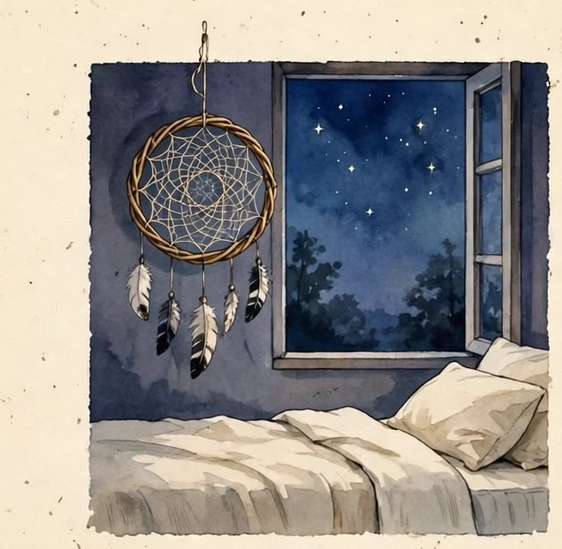
Ивовый обруч над тихой кроватью, первые звёзды уже загораются.
Согните ивовый прут в круг у кровати, переплетите его нитью — и вы сделали самый непритязательный инструмент этого дома: не машину, не святыню, а напоминание, которое стоит там, куда взгляд падает последним вечером и первым утром. Ловец снов, как его понимает этот дом, не ловит ничего силой. Это инструмент внимания — маленькое круглое указание спящему: то, что проходит здесь ночью, стоит заметить, а кое-что из этого стоит и сохранить.
У каждого дома в этом поместье есть свой такой инструмент. Дом у реки держит водомерную рейку; дом дверей ведёт журнал; этот дом держит обруч и сеть — и книгу, которая к ним прилагается. Инструмент значит меньше, чем поза, которой он учит. Дом, повесивший ловца, принял решение ещё до того, как начался сон: ночь — не отсутствие между двумя днями. Это территория со своей погодой, своим движением и своими дорогами, и дом намерен её знать.
Сто двадцать комнат, что следуют дальше, относятся к инструменту серьёзно, но без мистики. Ловец рассматривается здесь как ремесло: вещь, сделанная руками, повешенная с намерением и читаемая утром, как страница. Ничто в этих залах не пообещает, что обруч защищает, предсказывает или исцеляет. То, что он делает, — а дом находит это достаточным, — это отмечает место, где начинается практика.
2Для чего ловят сон
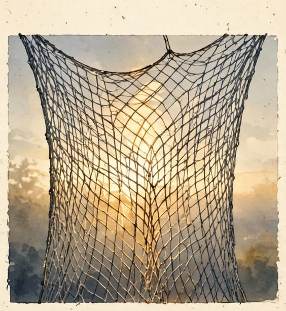
Утренний улов, поднятый к свету: одно предложение, целое.
Спросите, для чего ловят сон, — и большинство ответов придёт в одежде предупреждений или желаний: чтобы не впускать плохие, чтобы держать хорошие поближе, чтобы читать будущее по переплетению нитей. Этот дом отвечает проще. Сон ловят, чтобы его запомнить. Ловят, чтобы записать, пока запись ещё возможна. Ловят, чтобы вернуться в него какой-нибудь позднейшей ночью — как возвращаются по тропе в долину, где побывал однажды и которую намерен узнать по-настоящему.
Память — вот и весь улов. Незапомненный сон не наказан, и этот дом не ведёт счёт ночам, которые исчезают; их большинство, и им это позволено. Но запомненный сон — иное владение, чем сон, просто приснившийся. Его можно датировать, описать, сравнить с соседями, намеренно продолжить. Он становится материалом — сырым лесом ремесла, — а не погодой, случившейся с кем-то спящим.
Поэтому ловец висит там, где висит, как честное снаряжение: сеть, чей улов измеряется предложениями. Иными утрами улов — одна строка: лестница, лицо, цвет света. Этот дом строил целые залы и из меньшего. Сохраните предложение — и остальная практика последует за ним, как дорога следует за первой отмеченной точкой.
3Первые мастера
Этот дом не изобрёл свой инструмент и говорит об этом в начале книги, где и положено быть долгу. Ловец снов происходит от народа оджибве — анисинабе, — у которых плетёный обруч, по собственному преданию традиции, вешали над спальными местами детей: бабушкина забота, получившая форму в иве и жиле. От оджибве изготовление перешло — через межплеменные собрания прошлого века — в руки многих индейских народов, а оттуда, порой с уважением, а порой как простой товар, вышло в широкий мир.
Дом заимствует образ и знает, что «заимствует» — точный глагол. То, что стоит в этих комнатах, — не учение оджибве, и ничто здесь не следует читать как таковое; собственные смыслы традиции принадлежат народу, который их несёт, и они глубже всего, что может вместить концептуальная страница. Дом берёт, с признательностью, форму и подсказку: что ночь можно встретить плетёным намерением и что сплетённое рукой просит владельца руки обращать внимание.
Признание авторства в этом поместье — форма ухода. Хранитель, знающий, откуда взялись инструменты, держит их лучше: меньше шансов принять сувенир за суть, а метафору — за источник. Первые мастера названы здесь для того, чтобы каждая следующая комната стояла в правильном отношении к ним: ниже по течению — и с благодарностью.
4Обруч — это вопрос, заданный в дереве
Ива, согнутая в круг: вопрос без острых углов.
Обруч — это вопрос, заданный в дереве, и вопрос таков: что ты удержишь, а что пропустишь? У круга нет углов, в которых можно спрятаться. Он не указывает, не обвиняет и не поучает. Согнутый из ивовой лозы и связанный там, где сходятся концы, он просто предлагает границу между ночью вообще и ночью, к которой относятся внимательно, — и предлагает её мягко, как садовая ограда, а не стена.
Заметьте, от чего форма отказывается. Это не ящик, потому что ночь — не груз. Это не линза, потому что сон не следует разглядывать, пока он не признается. Это не дверь, хотя это поместье любит двери, потому что сновидящий не столько входит в сон, сколько оказывается в нём — уже посреди сцены, как оказываются в погоде. Обруч говорит лишь одно: где-то в этом круглом пространстве будет практиковаться внимание. Остальное — плетение.
Есть ещё простое обстоятельство изготовления. Ловец, купленный впопыхах, — это картина инструмента; ловец, согнутый и сплетённый собственными руками спящего, — сам инструмент, потому что изготовление есть первый акт того внимания, которое сеть будет держать потом. Дом не настаивает — купленные обручи начинали многие честные практики, — но отмечает: ива, час работы и неуклюжие первые узлы уже суть ремесло, начавшееся до того, как пойман первый сон.
5Ловец — не щит
Сеть при простом дневном свете: нити, дыры и никаких обещаний.
Ловец — не щит, и этот дом не позволит метафоре затвердеть в щит. Щит обещает, что нечто до вас не дойдёт. Сеть не обещает ничего подобного: грозы проходят сквозь неё, падение проходит сквозь неё, вся незваная погода ночи проходит сквозь неё, как прямо скажут дальнейшие залы. Сеть меняет не то, что приходит, а то, что сохраняется, — а сохранение есть утренний акт, совершаемый наяву, с ручкой. Инструмент стоит не между спящим и ночью. Он стоит между ночью и забвением, а это совсем другая граница.
Это различие — политика честности дома в миниатюре. Любая практика, начинающаяся с обещания защиты, кончит тем, что изобретёт опасности, от которых нужно защищать, и литература снов полна такой инфляции. Дом от неё отказывается. Спящий, повесивший ловца, не защищён; спящий снаряжён — напоминанием, книгой записей и привычкой оглядываться на ночь, как путешественник оглядывается на дорогу, чтобы изучить её форму.
Ничто из этого не делает инструмент слабее. Водомерная рейка не останавливает реку — и не является из-за этого неудавшейся плотиной; она удавшаяся рейка. Суди́те ловца по тому же стандарту. Он измеряет, он отмечает, он напоминает. Сны, которые ему приписывают, всегда были собственной работой спящего; обруч — просто место, где дом не даёт этой заслуге рассеяться.
6Здесь нет магии — и нет просто украшения
В современном мире ловца снов поджидают два разочарования, и этот дом отказывается от обоих. Первое делает его магией: амулетом с силами, продаваемым с сертификатами подлинности его энергий. Второе делает его декором: хорошеньким кольцом из перьев в сувенирной лавке, которое ничего не значит и ничего не просит. Между святыней и сувениром есть рабочая середина — предмет употребления, как блокнот или таблица приливов, — и именно в этой середине дом держит свой инструмент.
Употребление — вот проверка. Блокнот не магия, и никто не называет его простым украшением, потому что он заполняется записями; его смысл — его употребление во времени. Ловец заслуживает того же положения тем же путём: утрами. Обруч над кроватью, где никто никогда ничего не записывает, честно поблёкнет в тот самый декор, на который похож. Обруч над кроватью, где книга записей заполняется сезон за сезоном, стал снаряжением — видимой верхушкой невидимой практики.
Поэтому дом тратит на ловца меньше времени, чем на хранение, и просит гостя соблюдать пропорции. Один зал — инструменту, один — сети, а дальше залы о самих снах, о дорогах между ними, о книге, о возвращениях, о грозах. Обруч — двенадцать комнат из ста двадцати. Это соотношение и есть доктрина, высказанная архитектурой вместо слов.
7Заимствованные образы, несомые бережно
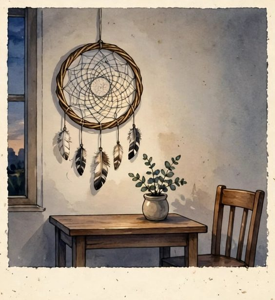
Несомый бережно, названный честно: заимствованный образ — дома.
У заимствованных образов есть обязательства, и эта комната перечисляет обязательства дома. Первое — называть: происхождение ловца у оджибве и его путь через индейские руки указаны в начале книги, и это не украшение. Второе — сдержанность: дом не рядит свои фигуры в заимствованные регалии, не изобретает обрядов и не продаёт образ обратно как мудрость традиции, к которой не принадлежит. Бегущая по облакам, когда она появится в четвёртом зале, — собственное изобретение Холдинга, и представлена она именно как таковое.
Третье обязательство — самое тонкое: заимствованному образу должно быть позволено остаться отчасти чужим. Искушение каждого заимствующего — сточить вещь, пока она не станет значить лишь то, что заимствующий и так думает. Дом сопротивляется этому, оставляя глубины ловца там, где они лежат, — на хранении у народа, чьи бабушки плели первые обручи, — и честно работая с мелководьем, на котором может стоять: внимание, память, записанная строка, возвращающаяся дорога.
Несённый таким образом, образ делает то, что заимствованные инструменты всегда делали в бережных руках: он удлиняет руку заимствующего, не фальсифицируя его адрес. Адрес дома напечатан на последней странице, как каждое его утверждение: концептуальный зал, изобретение, практика. Ловец висит в нём с уважением, то есть — точно.
8Ночное движение
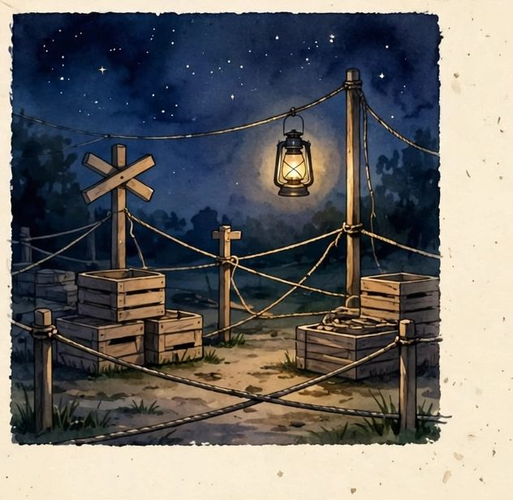
Ночная смена посреди движения: переезды, грузы и одно позднее прибытие.
Рассматривайте ночь так, как её рассматривает дом: не как пустоту, а как рабочую смену с движением. Воспоминания выгружают и перекладывают по полкам. Груз дня — лицо, мельком виденное в поезде, подслушанное предложение, забота, припаркованная в полдень, — перевозят через двор. Часть его доставляют снам; часть тихо утилизируют; часть всё ещё стоит на платформе утром — вот почему иные утра ощущаются как вокзалы после праздника. Спящий — не управляющий двора. Спящий в лучшем случае его ночной сторож, а по большей части — его груз.
Вот почему дом говорит о снах с уважением диспетчера движения, а не с поэтической вольностью. Движение реально, оно ночное, и оно идёт, смотрит на него кто-нибудь или нет, — но наблюдаемый двор в одном отношении работает иначе: его хранитель может выучить расписание. Какие заботы прибывают в какие ночи. К каким местам груз всё возвращается. Какие доставки к третьему появлению объявляют, что они не случайности, а маршрут.
Ловец висит над этим двором, как сигнальный портал: он не управляет движением, но именно здесь выставлено внимание сторожа. Всё, что описывают дальнейшие залы — книгу, небесные дороги, возвращения, — есть бухгалтерия этого движения. Ночь никогда не была пустой. Дом лишь предлагает вести её записи.
9Внимание — это нить
Если у ловца есть рабочая часть, то это не ива и не перья. Это нить — а нить, в прочтении этого дома, есть внимание: единственный материал, который спящий действительно поставляет. Сеть, сплетённая из чего-либо иного, была бы картиной сети. Внимание делает ячейки действительными: решение, каждый вечер понемногу обновляемое, что движение этой ночи стоит взгляда сторожа, а первых минут завтрашнего утра стоит предложение-другое.
У внимания есть свойства, которые плетущему следует знать. Оно конечно — и это никого не позорит: ночь даёт одну-две сохранённые фразы, а не стенограмму, и сеть, рассчитанная на большее, не поймает ничего, кроме усталости. Оно крепнет от употребления в темпе, который нельзя поторопить, и оно ослабевает без драмы всякий раз, когда жизнь становится громкой, и возвращается — тоже без драмы, — когда книгу снова открывают. Короче: оно в точности как всякий другой ремесленный материал — честно, ограниченно и поддаётся совершенствованию.
Поэтому дом плетёт скромно. Комнаты впереди попросят о предложении до того, как закипит чайник, о дате в начале страницы, о вопросе, время от времени отправляемом в постель, — о малых натяжениях нити. Торжественные клятвы нити рвут. Сеть, которая держит практику десять лет, сплетена из просьб, которые хранитель действительно мог исполнить, и первая из них — эта: заметь и запиши.
10Забытый сон — не отвергнутый сон
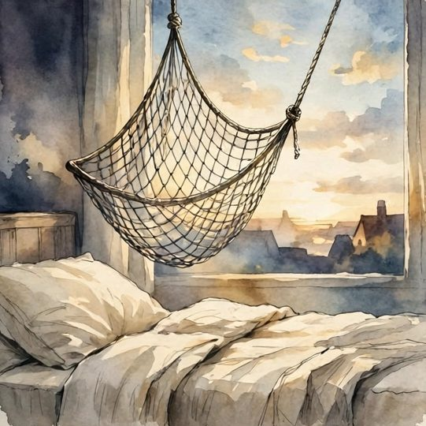
Пустая сеть на рассвете, вполне почтенная.
Иными утрами сеть пуста, и эта комната существует, чтобы сказать: пустое утро — не неудавшееся утро. Большинство снов забывается по замыслу — движение ночи по большей части проходит насквозь, и вся доктрина дыр в этом доме, до которой ещё два зала, зависит от того, чтобы этому позволяли случаться. Забытый сон — не отвергнутый: никто ничего не был должен, ни в чём не было отказано, и не потеряно ничего, что когда-либо принадлежало спящему. Двор работал; сторож проспал свою вахту; мир не кончился.
Хранитель, не способный принять пустые утра, начнёт в течение месяца фабриковать уловы — набивать книгу реконструированными сценами и называть это памятью. Дом считает это единственным настоящим провалом первого зала, потому что такая фабрикация портит записи, на которых строится всё остальное. Честная пустая страница с датой — хорошая запись. Она говорит, что практика была соблюдена, а ночь сохранила свою приватность, и обе половины этого предложения вправе быть правдой.
У пустоты есть даже употребление: она калибрует уловы. На фоне реестра честно пустых утр утра с предложением выделяются в своём истинном размере — не раздутые в ночные эпопеи и не ума́ленные до случайностей. Книга становится заслуживающей доверия, а заслуживающая доверия книга — фундамент под каждым дальнейшим залом этого дома, от небесных дорог до гроз.
11Дом хранит сны так, как хранит карты
Два инструмента дома: карта и обруч, несущие одни часы.
Этот дом хранит сны так, как другие дома поместья хранят карты, и сходство здесь — метод. Карта не создаёт страну; она делает страну возвращаемой. Книга снов не создаёт сон; она делает сон вновь входимым — по дате, по месту, по имени его погоды. Ловец — рама и легенда карты: неподвижная точка, говорящая, что вот здесь начинается съёмка, круглая граница, внутри которой береговые линии ночи стоит рисовать.
Сравнение дисциплинирует оба ремесла. Карта, которая утверждала бы, что предсказывает страну, была бы мошенничеством; ловец, утверждающий, что предсказывает ночь, — то же мошенничество в перьях. Карта, которую никогда не разворачивают, — мебель; ловец над кроватью без книги — та же мебель в иве. А ценность карты растёт с охватом действительных путешествий одного путешественника, а не с её красотой. Так и с книгой: действительные ночи одного хранителя, честно записанные, перевешивают библиотеку чужих символов.
К концу книги гостю будет предложена полная картография: источники и сезоны снов, повторяющиеся маршруты, мосты между ночами и фигура — Бегущая по облакам, — которая стережёт дороги, как гаванские огни стерегут фарватер. Всё это держится на инструменте этого первого зала, то есть на простейшем из фундаментов: обруч, нить и решение записывать то, что доставила ночь.
12Дверь первого зала
Каждый зал в этом доме кончается дверью, и дверь первого зала открывается на саму сеть — рабочую ткань, которую обруч лишь обрамляет. Прежде чем перейти, хранителю предлагается подвести итог скромному имуществу зала: честно описанный инструмент, честно названный долг, отказ и от магии, и от простого украшения, двор ночного движения, нить внимания — и разрешение, на котором дом настаивает, на то, что сеть в большинство утр будет пуста.
Ничто в первом зале не просило гостя во что-либо верить. Это намеренно, и это останется манерой дома на все сто двадцать комнат: ловец представлен как снаряжение, сны — как погода, дороги — как записи, фигура хранителя — как признанное изобретение. Практика, требующая веры, рушится, когда у веры плохая неделя; практика, требующая лишь блокнота и привычки, переживает скептицизм своего хранителя — и даже кормится им.
Итак, за дверь: само плетение — размеры ячеек и порванные нити, перья, которые указывают, и узлы, которые помнят, — и центральное утверждение дома: сеть существует не для того, чтобы удерживать всё, а чтобы удерживать достаточно, намеренно, с честно оставленными дырами.
13Сеть соткана из внимания
Нить за нитью, внимание за вниманием: плетение сверху.
Традиционную сеть плетут от обода внутрь, прядь за прядью, пока ткань не удержит свою спираль. Свою сеть дом читает так же: она сделана из внимания, уложенного проходами. Первый проход — вечерний: обруч, увиденный по пути ко сну, книга, о которой известно, что она ждёт. Второй проход — ночной, по большей части бессознательный и хранителя не касающийся. Третий проход — утренний, где ткань действительно держит: предложение, пойманное прежде, чем оно соскользнёт обратно сквозь ячейки пробуждения.
Сплетённая так, сеть — не предмет, а расписание: три ежедневных мгновения замечания, соединённые между собой. Вот почему дом так спокоен насчёт физического ловца: красивый обруч над кроватью, где не происходит ни одного из трёх проходов, — сеть в том же смысле, в каком стоящая у причала лодка — путешествие. А простой обруч — или, в дороге, вовсе никакой обруч, только привычка — может держать всё плетение, потому что плетением никогда не была ива.
Спираль тоже имеет значение. Ткань ловца — не решётка равных квадратов, а спираль, бегущая к смещённому от центра сердцу, и хранителю предлагается плести практику той же формы: не равномерное усилие, размазанное по каждой ночи, а единую линию внимания, прослеженную по кругу, всегда возвращающуюся к середине, где собираются сохранённые сны.
14Каждая нить — ночь, которую вы заметили
Каждая прядь — дата, каждое пересечение — сохранённое утро.
Встаньте близко к сети и отсчитайте её нити назад — и каждая разрешится в ночь, которую кто-то заметил. Не ночь, которую кто-то покорил, истолковал или хотя бы понял, — заметил. Порог этого ремесла установлен намеренно низко, потому что нить прядут из скромного волокна: один сон, один образ, одно предложение до начала дня. Практика, требующая шедевров, не имела бы плетущих; практика, требующая предложения, потенциально имеет всех.
Это также ответ сети на уныние. Хранитель на третьей неделе, глядящий на книгу из одиннадцати коротких записей и девяти пустот, смотрит на ткань с одиннадцатью настоящими нитями — а это на одиннадцать пересечений больше, чем когда-либо предлагала нехранёная ночь. Сеть не меряется с другими сетями. Она меряется с незамеченными годами позади себя, и по этой мерке даже редкая ткань — плотная.
А нити накапливаются так, как плетущий редко предсказывает: одиннадцатая запись начинает рифмоваться с третьей. Лестница из марта прислоняется к лестнице из июня. Ткань начинает держать не только отдельные сны, но и узор ночей спящего — и это момент, когда сеть перестаёт быть метафорой памяти и становится инструментом в собственном праве.
15Что сеть устроена пропускать
Теперь другая половина замысла, которую дом считает старшей половиной: сеть сделана для того, чтобы пропускать. Подавляющее большинство движения ночи — ничем не примечательные сны, растворяющиеся полусцены, репетиции и переваривания обычного мозга за его обычной работой — должно пройти незаписанным и неоплаканным. Сеть, которая попыталась бы удержать всё это, не была бы более тонкой сетью. Она была бы стеной, а за стеной спящий утонул бы в описи к февралю.
Пропускание поэтому — навык со своими комнатами в этом зале. Снаружи оно выглядит как небрежность, а является на деле суждением хранителя в покое: этот сон был погодой, а погоде позволено меняться; этот был повтором вчерашнего поручения; этот прибыл без единого запоминающегося цвета. Молчание книги о них — не пробел в записи. Это и есть запись, правильно суммированная.
Гостю, который боится, что пропускать сны — значит их тратить, предлагается рассмотреть альтернативную экономику: внимание — единственная валюта дома, и тратится оно утром, минутами. Потратьте его на всё — и оно обесценится в ничто. Ячейка существует для того, чтобы малый фонд замечания хранителя ложился туда, где ночь действительно оставила нечто, стоящее переноски, — лицо, место, предложение, сказанное во сне никем из знакомых хранителя.
Канцелярия „Ловец снов"
Одна канцелярия получает всю корреспонденцию этого дома — вопросы, поправки, ночные доклады с ваших собственных дорог. Она читается в порядке поступления. Канцелярия не даёт медицинских и духовных советов; она содержит дом.
16Дыры — не брак
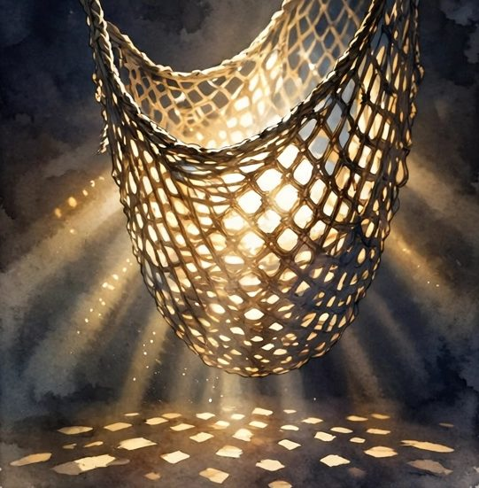
Дневной свет сквозь дыры: замысел работает, как задумано.
Дыры — не брак, и дом потратит на этот пункт целую комнату, потому что новички всегда проводят первый месяц, извиняясь за них. Дыра в сети — место, где сон прошёл нарочно, причём нарочность встроена в инструмент с первого узла. Традиционная ткань — по большей части дыры; её нить — меньшинство её площади, и никто не смотрит на рыбацкую сеть, называя промежутки для воды дефектом. Просветы — это то, как сеть ловит.
В переводе на практику: дыра — это забытый сон, записанный как забытый или не записанный вовсе, и это структурный элемент здравого ремесла. Хранители, которые обращаются с каждой дырой как с упущенной петлёй, начинают витать над своим сном, будить себя, чтобы проверить улов, делать заметки в три часа ночи — и тем нарушают первый закон дома: практика служит спящему, а никогда не наоборот. Сеть работает, пока её хранитель спит. В этом весь смысл того, что её вешают.
Так что дыры остаются. В иные ночи вся ткань — дыры, и утренняя запись — дата и пустота, и пустота вплетена, как любая другая прядь. Сеть с честно признанными дырами переживёт на годы сеть, чей хранитель всё время тайно чинит её выдумкой.
17Размер ячейки: грубые сети, тонкие сети
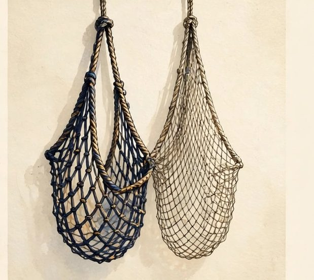
Две сети рядом: ячейка путешественника и ячейка архивиста.
Сети бывают с разными ячейками, и хранителям следует выбирать свою осознанно. Грубая сеть ловит только самые крупные формы: сон о доме, сон о полёте, грозу — дюжину записей в год, каждую несомненную. Тонкая сеть ловит мелкую сдачу ночи: цвет, каламбур, который составил спящий ум, погоду в коридоре сна. Ни одна из них не правильная сеть. Это разные инструменты для разных хранителей, и большая часть несчастий ремесла происходит от того, что плетут одну, завидуя другой.
Грубый хранитель рискует редкой книгой и блуждающим между уловами вниманием; тонкий хранитель рискует раздутой книгой и практикой, рушащейся под собственной тщательностью к весне. Совет дома непретенциозен: начните с грубого. Ловите сны, которые заявляют о себе сами. Пусть ячейка утончается естественно, как тропа сужается там, где действительно ступают ноги, — потому что повторяющиеся сны, повторяясь, сами потребуют более тонкого внимания по собственному расписанию.
А ячейка может меняться с сезонами жизни. Грозовые годы хотят грубых сетей и крепких ободов. Тихие годы приглашают к тонкой работе. Инструмент регулируется, хранитель — регулировщик, и никакой комитет дома не проверит настройку. Проверяется — хранителем в одиночку, при сезонном обзоре — лишь то, ловит ли используемая ячейка вообще что-нибудь.
18Сеть ловит истории, а не знамения
То, что поднимается в сети, когда поднимается, — это история: последовательность сцен с логикой погоды, а не с логикой закона. Дом строг насчёт категории. Историю можно хранить, сравнивать, продолжать, пересказывать, добывать из неё образы, употреблять её так, как употребляют любую историю: для компании, для ремесла, для удовольствия от её странности. Чем история не может быть в этом доме — так это знамением. В миг, когда пойманный сон повышают из повествования в пророчество, сеть попросили делать единственную работу, для которой её никогда не плели, и хранителю советуют вернуть её на полку с надписью «истории», пока она не порвалась.
Это не маленькое правило, и оно исключает большую и популярную литературу. Дом не спорит с этой литературой; он просто отказывается от её предпосылки. Сон о наводнении хранится здесь как сон о наводнении — датированный, описанный, возможно честно связанный с неделей дождя и протекающей водосточной трубой. Означает ли он также нечто — это, подчёркнуто, не разбирается в суде. Смыслу позволено заходить в гости; ему не позволено взимать арендную плату.
Практическая выгода правила — безмятежность. Хранитель, чья сеть ловит только истории, может читать утреннюю запись за завтраком без страха и жадности — никаких вердиктов, никаких предупреждений, никаких указаний от управления вселенной. Только сказка ночи, собственными словами ночи, сохранённая. Дом считает это зрелой формой ловца: инструмент литературы, издаваемой частным образом, один читатель, ночные выпуски.
19Порванная нить — забытое утро
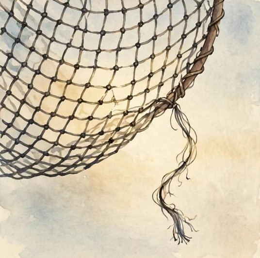
Одна порванная прядь, одно ушедшее утро: починка — пожатие плечами и дата.
Нити рвутся. Неделя гриппа, новорождённый, крайний срок, горе — практика прерывается, книга собирает особенную пыль заброшенных инструментов, и в плетении сети появляется провисшее место. Дом называет это прямо, чтобы ни один хранитель не принял это за конец чего-либо: порванная нить — это забытое утро или месяц утр, а утра — самый возобновляемый ресурс во всём поместье.
Починка — не церемония. Это дата, написанная вверху свежей страницы, а под ней — всё, что оставила последняя ночь, а после перерыва это, как ни удивительно, часто совсем немного: сеть провисла и в руках хранителя. Эта малость ожидаема и не является вердиктом. Внимание натягивается заново, как мышца: малыми нагрузками, возобновлёнными. В течение двух недель плетение обычно снова держит предложения, а сам разрыв стал чертой записи — видимым сезоном в книге, как кольцо сухого года на дереве.
От чего дом предостерегает — так это от ретроспективной подделки: сесть в октябре реконструировать сны сентября. Порванная нить должна остаться порванной в записи, честно перекрытая единственной строкой — уезжал, болел, был занят другим, — потому что достоверность книги стоит больше её полноты. Сеть — для будущих ночей. Она никогда, ни разу, не была для прошлого.
20Обод держит, середина работает
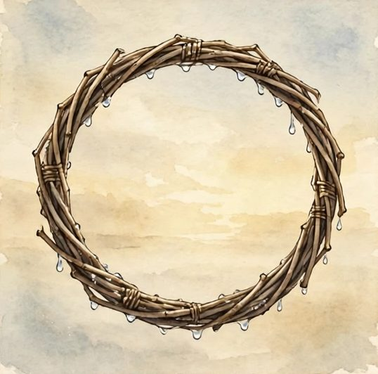
Обод на рассвете: гнутая ива всё ещё держит свой круг.
У каждой сети две природы, и последние комнаты зала их разделяют. Обод держит; середина работает. Обод этой практики — всё в ней, что не зависит от сотрудничества ночи: обруч на стене, книга на тумбочке, ручка, которая живёт при книге и больше нигде, пять минут, защищённых в начале утра. Это ободная работа — жёсткая, скучная и несущая. Её можно поддерживать в любую погоду, включая погоду полного уныния, и именно её хранитель и обслуживает, когда обслуживать нечего.
Середина — сама ловля — не может поддерживаться, а может только приниматься. Никакое усилие воли хранителя не может принудить сон этой ночи быть запоминающимся, как обод рыбацкой сети не может принудить рыбу. Середина работает, когда работает. Всё искусство ремесла — в том, чтобы держать эти две природы раздельными в уме хранителя: обод — дисциплиной, середину — милостью, и никогда не путать счета — никогда не винить середину за провисший сезон и не приписывать ободу великий улов.
Хранители, ухватившие это разделение, перестают переживать кризисы практики. Сухой месяц становится погодой для ободной работы: выпрямить обруч, заменить ручку, перечитать старые записи (второй улов — зал впереди) и дать середине отдохнуть. Дом знал хранителей, кто верно обслуживал обод в течение года почти без снов — и был вознаграждён на второй год богатейшей книгой в своей жизни. Сеть этого не объясняет. Сеть лишь построена для этого.
21Перья: часть, которая указывает вниз
Каждой части традиционного ловца кто-нибудь приписал значение, и перья собрали значений больше большинства, — лестницы, по которым хорошие сны скользят вниз, в популярном изложении, хотя дом отмечает, что популярное изложение — текст сувенирной лавки, а собственные рассказы традиции — её собственное дело. В этом доме перо читают скромнее, и чтение предлагается как изобретение дома, обозначенное именно так: перо — это часть, которая указывает вниз. Это отвес сети, её тихая стрелка к утру.
Дело в направлении, а не в украшении. Всё, что висит в ловце, — перо, бусина, кожаный ремешок — висит вниз, к кровати, к спящему, который проснётся под ним. Всё убранство инструмента — набор стрелок, говорящих: улов возвращается сюда, к этому человеку, в эту комнату, при первом свете. Сон может путешествовать ночью куда угодно; у его записи есть постоянный адрес, и перо — указатель адреса.
Практически, стало быть, так: пусть перо будет напоминанием хранителя в тот самый миг, когда его видят, а это миг пробуждения. Прежде телефона, прежде новостей, прежде первого требования дня — перо указывает, книга здесь, предложение записано. Практика живёт или умирает на этом утреннем шарнире, и дом доволен, что вся его доктрина перьев сводится к этому: они указывают на ручку.
22Узлы и бусины: метки сохранённых ночей
Узлы, как зарубки на стене гавани: сохранённые ночи — в ряд.
Там, где нить завязана узлом, сеть помнит своё изготовление; там, где нанизана бусина, изготовитель что-то сосчитал. Дом заимствует жест и делает его бухгалтерией: узлы и бусины как метки сохранённых ночей. Некоторые хранители держат символику вольно — узел за законченный месяц записей, бусина за сон, который вернулся и был пойман во второй раз. Канцелярия не регулирует код. Она регулирует только честность: метка должна обозначать нечто, что действительно случилось, а не то она снова бижутерия.
Функция счёта значит больше, чем выглядит. Долгая практика невидима для собственного хранителя; страницы книги расплываются в общее чувство, что он «держал её». Метки накапливаются иначе. Нитка бусин у кровати, добавляемых по одной на протяжении лет, — это перепись внимания, которую можно охватить глазами, — и в ровные утра, когда ремесло кажется воображаемым, перепись свидетельствует: столько-то ночей, замеченных, в ряд материального факта.
Дом также разрешает обратный счёт, хотя и не настаивает: узел, развязанный церемонно и без самонаказания, когда сезон хранения заканчивается и начинается другая жизнь. Практикам позволено завершаться. Сеть, которой никогда не позволяют закончиться, становится долгом, и отношение хранителя к ней киснет в обязательство — единственную погоду, которой инструменты этого дома действительно построены избегать.
23Сеть — это обещание взглянуть снова
Обещание вплетено: завтра хранитель взглянет снова.
Под всеми своими частями сеть — одно обещание: взглянуть снова. Не понять, не исцелиться, не быть предупреждённым или избранным — взглянуть снова, завтра утром, на всё, что сделала ночь, с тем же мягким любопытством, что и сегодня. Обещание обновляется каждую ночь и может быть нарушено без штрафа, и это единственное обещание, которое дом даёт от имени инструмента, потому что это единственное, которое инструмент действительно может сдержать.
Посмотрите, что обещание исключает, — и честность дома окажется в фокусе. Оно исключает прозрение: некоторые записи никогда не обретут смысл, и они хранят свою бессмыслицу с благословения дома. Оно исключает улучшение: сны не обязаны становиться глубже, добрее или полезнее на протяжении лет, хотя хранители часто сообщают, что становятся, — сообщение принадлежит им, обязанность — никому. И оно исключает аудиторию: взгляд совершается спящим, для спящего, в книге, в которую заложен один читатель.
Обещание взглянуть снова — маленькая вещь, чтобы плести вокруг неё сто двадцать комнат. Но внимание, удерживаемое при этой температуре — регулярное, непринуждённое, некоммерческое, — редчайший инструмент в современном доме, реже любого ивового обруча. Сеть придаёт ему форму и расписание. В этом всё плетение; остальная часть книги — сводки погоды изнутри него.
24Плетение — практика, а не покупка
Последняя комната зала сети — предупреждение, адресованное собственному рынку ремесла, а он значителен: продаются сети, продаются курсы, продаются сонники полками. Позиция дома плоская. Плетение — практика, а не покупка. Практику можно начать сегодня вечером огрызком карандаша и оборотом конверта, и её нельзя начать ни за какую цену без карандаша, конверта и утра. Всё прочее — прекрасный обруч, переплетённая книга, курс, выездной семинар — в лучшем случае ободная работа, в худшем — отсрочка.
Это не пуританство; дом любит хорошие инструменты и собственные книги держит красиво. Это последовательность. Купите прекрасного ловца после пятидесятой записи, как счёт практики, которая существует, — и он будет что-то значить. Купите его до первой записи, как замену началу, — и он будет висеть с укором, пока не выцветет в декор, о котором предупреждала шестая комната. Предметы впитывают намерения, с которыми их купили. Начинайте поэтому с намерений, которые предмет может почтить.
Сеть описана — её нить, её дыры, её ячейка, её метки, её единственное обещание, — и книга поворачивается от инструмента к тому, для чего инструмент существует: к самим снам, в их родах и погодах, прибывающим каждую ночь, готов хранитель или нет. Зал впереди — самая большая сводка погоды, какую дом когда-либо подавал.
25Погода ночи
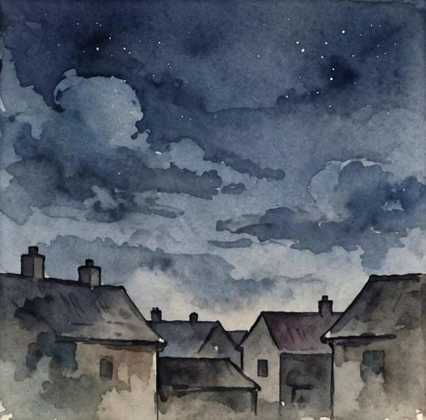
Небо ночи в самом обычном виде: облака работают, звёзды на смене.
У снов есть погода, и метафора выдержит больший вес, чем дом поначалу от неё ожидал. Бывают ясные ночи, когда один сон пересекает всё небо сна, видимый от горизонта до горизонта, и запоминается целиком. Бывают пасмурные ночи клубящихся полусцен, тёплые фронты тревоги, прибывающие со стороны дня, внезапные грозы в три часа утра и долгие неподвижные туманы, из которых утро не спасает вообще ничего. Спящий — не автор погоды. Спящий — её береговая линия.
Язык погоды дисциплинирует ожидания хранителя так, как это не вполне удаётся никакому другому словарю. Никто не извиняется за туман. Никто не принимает сухой месяц как личный вердикт, а грозу — как повышение. Записи в книге становятся сводками, а не исповедями — датированными наблюдениями со станции, которую хранителю случилось населять, — и практика устраивается в долгий, нетревожный ритм, который нужен ремеслу, если ему длиться десятилетиями.
Залы этого дома будут всё возвращаться к погоде, потому что хранитель ночи и метеоролог ночи — один человек в разные часы. Дальше в этом зале — путеводитель по самым обычным состояниям: обычные сны, которые суть хлеб ночи, полёты и падения, дома, в которых никогда не жили, экзамены, к которым никогда не готовились, — стандартное небо, под которым сегодня ночью спит каждый спящий в мире.
26Обычные сны — хлеб ночи
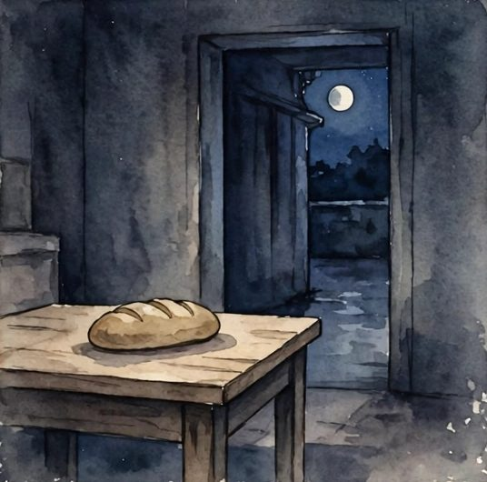
Простой хлеб на ночном столе: поручение, коридор, лицо коллеги.
Большинство снов обычны, и дом настаивает на этом прилагательном как на похвале. Обычный сон исполняет поручение в городе, который почти город хранителя; он теряет коллегу в коридоре, который почти настоящий коридор; он репетирует завтрашнее совещание с немного неверным составом. Это хлеб ночи — негламурный, ежедневный, и вещество, которым вся практика на самом деле питается. Хранители, ожидающие необыкновенного, изголодают хорошую сеть; хранители, которые научатся входить в обычный сон, обнаружат, что книга заполняется истинной текстурой спящей жизни.
Обычный сон также докладывает, вернее зрелищного, где ум хранителя действительно живёт. Его декорации построены из материалов недели; его малые тревоги — тревоги недели, без метафор. Месяц обычных записей — обследование жизни под углом, который дневной свет никогда не предлагает: какие поручения повторяются, какие лица держатся про запас, какие коридоры ум перестраивает каждую ночь, потому что не может перестать по ним ходить.
Вносите их поэтому в истинном размере: две строки, четыре строки. У дома есть постоянная инструкция для этого зала — описывайте, не раздувайте. Обычный сон, записанный просто, — басовая нота всей книги, и зрелищные ночи, когда они придут, будут читаемы только на её фоне.
27Дом, в котором вы никогда не жили
Почти в каждой книге хранителя, дайте ей год, содержится дом: жилище, в котором сновидящий никогда не жил, однако владеет им полностью — знает лестницы, знает, какая комната чья, знает, что у двери, которую нельзя открывать, сквозняк из-под низа. Он может быть собран из каждого дома, который у спящего был, с лишними комнатами, каких наяву мир никогда не позволял: крыло за кухней детства, этаж над квартирой, в которой всегда было только две комнаты. Во сне ничто из этого не требует объяснений. Дом просто дом, увеличенный одновременным проживанием всей жизни.
Дом не предлагает толкования, по своим правилам. Он отмечает лишь феномен, который почти универсален, и его ремесленное употребление: отмечайте дом, когда он появляется. Дайте ему его запись, его грубый план, если он его предлагает, его дату. На протяжении лет хранители обнаруживают, что дом держится вровень с жизнью — отремонтированный в хорошие десятилетия, затопленный в плохие, обзаводящийся запертыми комнатами и теряющий их, — и серия его записей становится самым близким, что есть в книге, к автобиографии, написанной ночной сменой.
Если дом никогда не появляется, это тоже доклад; не у каждой береговой линии одни и те же черты. Но когда он появляется, хранителю дан один из великих повторяющихся декораций ночи, и зал небесных дорог впереди будет обращаться с ним как с тем, чем он явно является: местом, куда дороги возвращаются, держал ли когда сновидящий его ключи наяву или нет.
28Сны о полётах и честность веса
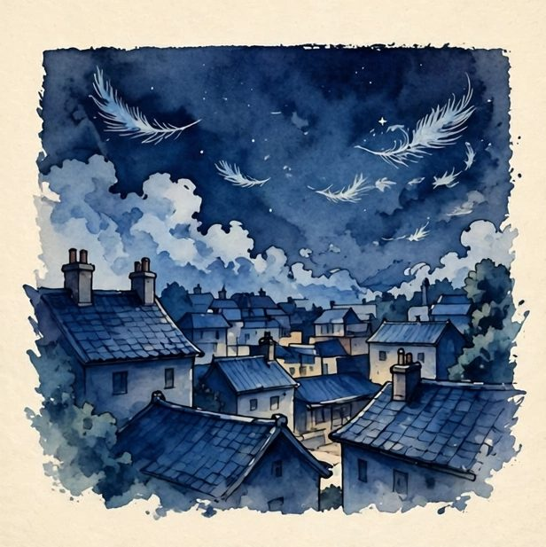
Легче пера над крышами: сон до аудита гравитации.
Сон о полёте — самая знаменитая погода ночи, и дом обращается с ним с бухгалторской нежностью: его проверяют аудитом честности, и аудит этот — его прелесть. Ибо во сне о полёте спящий ум тихо приостанавливает единственный закон, который он обеспечивает везде в других местах. Падение — закон; вес — закон; лестницы кончаются, двери запираются, расстояния стоят денег. Но время от времени ум отказывается взимать, и сновидящий поднимается — плавательными движениями, наклоном, простым решением — над крышами повторяющегося города и просыпается с подозрением, что гравитация — местное постановление, а не истина вселенной.
Чего дом делать не будет — так это оценивать опыт. Сны о полётах — не повышения, не побеги, заверенные руководством, не свидетельство чего-либо о бодрствующей ценности сновидящего. Это погода — точнее, погода ума, играющего с собственной физикой, и их редкость и распределение по жизни суть данные для книги, а не медали на грудь. Некоторые хранители летают в детстве и никогда больше; некоторые начинают в шестьдесят. Небо не держит расписания, которое канцелярия могла бы опубликовать.
Вносите полёт с отмеченной механикой — как полёт работал, как высоко, каков был свет, — потому что в механике сон держит свою честность. И отметьте приземление, которое сны о полётах часто пропускают целиком, обрубая к утру, как фильм, у которого кончилась плёнка. Отсутствующее приземление тоже часть записи: ночь, отказавшись от одного закона, не видит причин оформлять документы на его возвращение.
29Экзамен, к которому вы не готовились
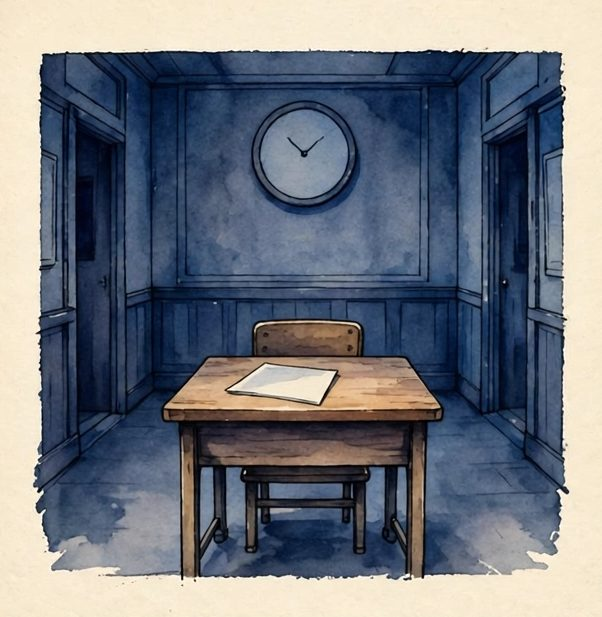
Парта, чистая бумага и часы, которые не скажут время: классика.
Сон об экзамене — самая пунктуальная тревога ночи: зал, парта, лист по предмету, который сновидящий не изучал со школьных дней — а то и включая их, — и часы, занятые какой-то собственной нерегулярностью. Он посещает окончивших и неокончивших одинаково, десятилетия спустя после последнего настоящего экзамена, и он столь обычен по книгам хранителей, что дом заводит его под стандартной погодой, между сном о доме и упущенным поездом. Никто, кто вёл книгу год, не верит, что его одного всё ещё экзаменуют.
По правилам дома, толкование не выдаётся. Но ремесленная заметка стоит того: сон об экзамене держит превосходное время с проверками бодрствующей жизни — обзором, аудитом, презентацией, результатом анализа — и хранитель, который точно датирует его записи, увидит, что он прибывает снова и снова накануне того, как его судят. Это наблюдение, а не значение; дом предлагает его так, как предлагают показание барометра, и хранитель может делать с ним то, что делает моряк: одеваться по погоде, не виня стекло.
В поздней жизни сон мутирует доброжелательно: лист на языке, который сновидящий когда-то знал, или экзамен теперь принимает сам сновидящий, или зал пуст, а сновидящий пришёл рано — рано, пожалуй, впервые за долгую историю сна. Книга, поймавшая мутацию, поймала нечто лучшее, чем символ. Она поймала смену климата, записанную на единственной станции, которая никогда не закрывается.
30Сны об умерших, хранимые просто
Рано или поздно каждая долгая книга встречает сны об умерших: родитель за кухонным столом, совершенно обычный, разгадывает кроссворд; друг, снова молодой, посреди поручения, не ведающий, что по нему скучают. Дом хранит эти сны просто — вот и весь заголовок комнаты и весь её метод. Просто означает: внесены как сны, датированы, описаны собственными словами сна, без повышения. Умершие в этих комнатах — не посланники и не метафоры, если только хранитель не настаивает; они прежде всего и окончательно — ночной состав, набранный из самого глубокого запаса, который держит ум.
Простота — форма уважения в обе стороны. К умершим: сон не вербует их в знамения. К сновидящему: горе или утешение, которое сон несёт, позволено быть в точности собой, неотредактированным доктриной. Некоторые хранители просыпаются от этих снов умиротворёнными; некоторые просыпаются разбитыми на день; оба доклада входят в книгу тем же почерком, что поручения и экзамены. Дом не держит для них отдельного, приглушённого раздела. В экономике ночи они граждане, а не коронованные особы.
Одна ремесленная заметка, мягко: эти сны часто прибывают с необычайной ясностью малых деталей — точный регистр голоса, способ руки держать чашку — с верностью, которую бодрствующая память больше не может поставить. Дом этого не объясняет. Он советует лишь записывать детали первыми, прежде сюжета, потому что это первое, что утро забирает обратно.
Канцелярия „Ловец снов"
Одна канцелярия получает всю корреспонденцию этого дома — вопросы, поправки, ночные доклады с ваших собственных дорог. Она читается в порядке поступления. Канцелярия не даёт медицинских и духовных советов; она содержит дом.
31Повторяющийся сон — колокол, а не вердикт
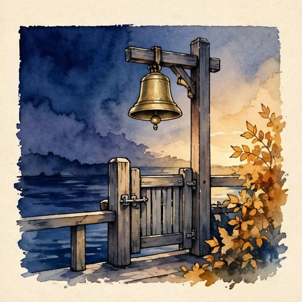
Тот же колокол, ударенный в марте и снова в октябре: маршрут, а не вердикт.
Сон, который возвращается, — то же место, та же ситуация, иногда то же предложение, сказанное тем же незнакомцем, — это ночь, звонящая в колокол, и вся инструкция дома — в различии заголовка: колокол — не вердикт. Колокол говорит «обрати внимание», а не «подчиняйся»; он отмечает время, а не истину. Повторяющийся сон — самый ценный улов, какой сеть может сделать, именно потому, что это единственный сон, который хранитель может изучать серией, — а серии, в каждом ремесле, которое практикует это поместье, суть место, где живёт закономерность и умирает суеверие.
Работа с книгой механична и потому достоверна: каждое возвращение получает свою дату и свои отличия. Ибо повторяющийся сон всегда возвращается с правками — лестница длиннее, запертая комната открыта, преследователь медленнее, а сновидящий — одной знаменитой ночью — оборачивается. Правки и есть история. Хранители, которые отслеживают их на протяжении лет, держат в конце сериализованную запись собственного меняющегося отношения ко всему тому, из чего сон построен, — записанную без единой сессии толкования, просто появлением с ручкой каждый раз, когда звонил колокол.
А если колокол умолкнет? Это тоже вносится — вернее, его отсутствие становится видимым при перечитывании, что само по себе данное: маршрут закрылся, сезон повернулся. Дом не посылает поисковых партий за ушедшими на покой снами. Он отмечает последний звон, как гавань отмечает выведенный из строя маяк, — с уважением к годам, когда он горел, и без попытки зажечь его снова хотением.
32Сны сериями: ночь с продолжением
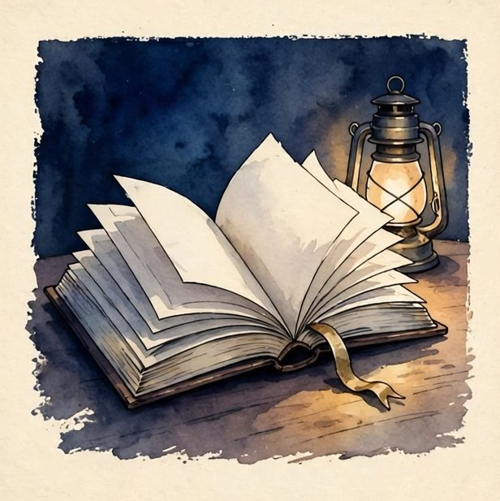
Следующая серия уже снимается: ночь с продолжением.
Некоторые спящие видят сны не эпизодами, а сериями: сон этой ночи продолжает сон прошлого месяца — с тем же составом, тем же незаконченным поручением, с сюжетом, продвинувшимся ровно на одну сцену. Феномен достаточно обычен в книгах, и дом заводит его как доказательство ночи, что она держит собственную непрерывность, — сценарная комната где-то ниже сознания, держащая длинные дуги, которых бодрствующий ум никогда не заказывал. Хранитель серии находится в завидном положении читателя, чья книга пишется сама по расписанию, которое никто не контролирует.
Ремесло приспосабливается соответственно: записи серий перекрёстно ссылаются. Дата прошлой серии, состояние поручения, новый состав, обрыв на интересном месте, отмеченный без нетерпения. Нетерпение — характерное искушение хранителя серий — порыв форсировать следующий эпизод приёмами седьмого зала, — и дом советует вместо того добродетель читателя: ждите почты. Ночь доставляет по собственному календарю, а поторопленная серия — испорченная серия, как предупредил бы любой романист.
Когда серия заканчивается — а они заканчиваются, обычно посреди сцены, сценарная комната ночи распущена без уведомления, — хранитель закрывает папку последней датой и без жалоб. При долгом перечитывании, годы спустя, серии часто оказываются самыми поразительными протяжениями книги: целая повесть, которую хранитель написал во сне, частями, ни разу за неё не садясь. Канцелярия держит полку для таких изумлений. Это самая читаемая полка в доме.
33Сон, который приходит днём
Не весь материал дома прибывает ночью. Дневная грёза — ум, вышедший из комнаты, пока глаза остаются в ней, — та же погода в другой час, и дом заявляет её принадлежность ремеслу на одном условии: её нужно ловить так же, письменно, в её истинном размере. Дневная грёза, честно внесённая в книгу (большинство хранителей держат её в полях, и дом одобряет поля), немедленно показывает своё родство с работой ночи: те же декорации, тот же состав, те же незаконченные поручения — но освещённые волей, чем ночной сон не бывает никогда.
Это различие и есть диагностическая ценность дневной грёзы. Ночной сон показывает, что ум делает ненаблюдаемым; дневная грёза показывает, что он делает, когда думает, что выбирает. Поставьте две записи рядом на протяжении сезона — предписанное упражнение этой комнаты, — и хранитель прочитает разрыв между ними, как двойную карту объявленных и действительных ветров. Дом не предлагает морали для разрыва. Это данные о погоде. У каждой береговой линии он есть.
Дневная грёза — также тренировочная площадка практики, мелкий конец бассейна: приёмы седьмого зала — возвращение, репетиция, лёгкое руление — все сначала изучаются при дневном свете, где неудача дёшева, а чайник близко. Хранитель, который научился замечать дневную грёзу посреди дрейфа и вносить её без самопрезрения, построил в точности ту мышцу, которую требует ночная работа.
34Детская погода: сны юных
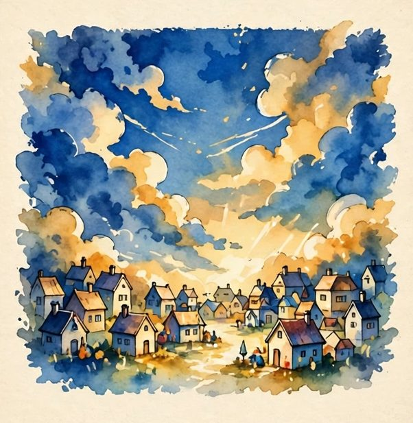
Малая погода, большие цвета: детская гроза, детское небо.
Дети видят сны в полном насыщении — цвета громче, чудовища менее смущены, полёт легче, а падение тяжелее, — и они докладывают свои сны, когда их спрашивают правильно, с репортёрским инстинктом к важной детали. Дом держит почтительную дистанцию от внутренней погоды детей, и эта комната — по большей части правила для взрослых на её краю: спрашивайте утром, кратко; не записывайте ничего, чего ребёнок не предложил; никогда не толкуйте ребёнку, никогда, — единственный абсолют дома в этом зале. Детский сон, пересказанный за завтраком, — история, принесённая как подарок. Его и принимают как подарок.
Для собственной книги хранителя детская погода важна одним задокументированным образом: это контрольный образец. Яркость, которую взрослые оплакивают как утраченную, не утрачена, а натренированно отучена — взрослая сеть соткана из лет незамечания, а доклад ребёнка, весь погода и никакой бухгалтерии, показывает хранителю размер ячейки, с которым он родился. Некоторые дома держат страницу для предложенных снов ребёнка, с разрешения ребёнка, когда он вырастет достаточно, чтобы его дать или удержать. Страница, годы спустя, — сокровище именно того рода, который это поместье существует производить: датированное, честное, малое.
А когда детская погода поворачивается к ненастью — каждый родитель знает прибытие в два часа ночи, — у восьмого зала есть совет дома. Здесь достаточно сказать, что ребёнок у двери — не случай, а гражданин той же ночи, и дом, в который он забрёл во сне, вполне может уже содержаться в книге хранителя.
35Сны старости
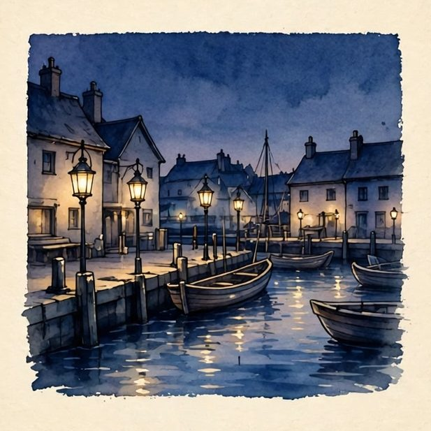
Поздняя смена: старые гавани, длинные манифесты, знакомые огни.
У снов старости манифест, непохожий ни на одно другое десятилетие: умершие в них многочисленны и обыденны, дома — ранние, экзамены по большей части перестали задавать, а повторяющиеся места находятся в своём пятидесятом сезоне и содержатся превосходно. Хранители, которые ведут книги в старость, держат самые ценные записи поместья, и дом говорит это без сентиментальности: семидесятилетняя береговая линия датированных записей — это набор данных о человеческой ночи, который не существует нигде больше на земле.
Характерная погода поздней смены — возвращение. Ночь, как старый капитан порта, работает всё больше из своих архивов — и ремесло хранителя перестраивается от ловли новизны к проведению описи: какие места ещё стоят, какой состав ещё является на службу, по каким дорогам Бегущая по облакам ещё ходит. В этом нет упадка, если только хранитель не настаивает на нём. Движение иное, а не меньшее; груз — сама память, перевозимая со складов туда, где память в конце концов хранится.
Дом также записывает, потому что это записывают книги, что сны старости часто докладываются как самые мирные в жизни — грозы реже, серии разрешены или мягко оставлены, полёт, когда приходит, нетороплив. Канцелярия заводит это под наблюдения, а не обещания. Но она позволяет себе одно предложение простой надежды: практика, хранимая на протяжении жизни, по записям, по-видимому, даёт ночи знакомый адрес — а спящий в любом возрасте спит лучше по адресу, который знает.
36Не каждый сон просит толкования
Зал снов закрывается самой покойной доктриной дома: не каждый сон просит, чтобы его толковали. Большинство, на деле, не просит вообще ничего — они были погодой, они прошли, сеть сделала свою двойную работу: поймала немногих и отпустила многих. Толкование — гость, которого дом принимает вежливо и никогда не позволяет ему переехать; его комната мала, его часы вывешены, а остальное здание — книга, дороги, утренняя канцелярия — прекрасно работает на счетах, где значение — младший и по большей части молчаливый партнёр.
Хранители прибывают обычно с противоположным предположением: что пойманный сон — задача домашнего задания. Дом тратит зал, мягко его разбирая. Записанный сон завершён. Сон, сравненный со своей серией, богаче. Сон, в который вернулись ремеслом седьмого зала, ещё богаче. Ни в какой точке сон не требует расшифровки, чтобы оправдать своё место в книге, как день не требует расшифровки, чтобы оправдать своё место в дневнике. Описание — высокое искусство дома; толкование — его хобби, практикуемое скупо, обозначаемое ясно и никогда чернилами.
За дверью этого зала стоит фигура, которую всё поместье ждало представить как следует: хранительница самих дорог, путешествующая по движению, которое описал первый зал. Гостя просят принести привычки путеводителя — наблюдать, датировать, описывать — и оставить на пороге всякое ожидание, что его поведут. Бегущая по облакам, как объявляет следующая комната, не водит.
37Кто такая Бегущая по облакам
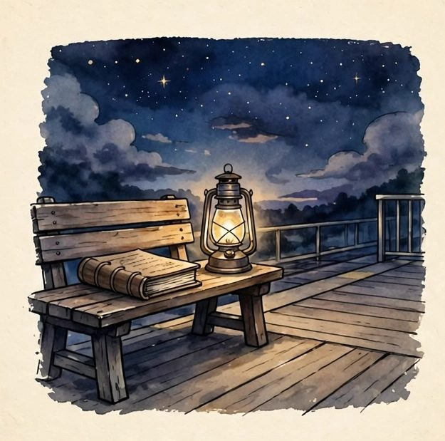
Хранительница у ночного депо: фонарь зажжён, книга под мышкой.
Бегущая по облакам — собственная фигура Холдинга, и её представляют так, как дом представляет свои изобретения: прямо. Она — хранительница небесных дорог: та, кто ходит маршруты между снами, как хранитель гавани обходит фарватеры между якорными стоянками, нося сообщения от одной ночи к следующей, стерегущая метки, отмечающая погоду. Ни один спящий не встречал её по проверяемым свидетельствам. Каждая долго ведомая книга, прочитанная от конца до конца, ведёт себя так, будто кто-то делал её работу.
Её обязанности, как их определяет дом, — три. Она носит: предложение, которое сон оставил незаконченным в марте, прибывает её рукой к сну, который заканчивает его в июне. Она держит метки: повторяющиеся места не сдвигаются со своих позиций на протяжении десятилетий, и дом, отказываясь от всех прочих объяснений, приписывает это её обходам. И она выставляет погоду: хранитель, читающий месяц записей при сезонном обзоре, находит фронты уже аннотированными рукой, которая каким-то образом не вполне только его собственная. Дом предлагает это как способ видения, а не как утверждение факта, — различие есть устав фигуры, и комната сорок седьмая изложит его полностью.
Зачем вообще фигура? Потому что практики лучше хранятся в компании. Книга — одинокое ремесло, практикуемое в самый одинокий час, и хранитель, который ходит по ней сорок лет, населит дороги, лицензирует дом это население или нет. Бегущая по облакам — лицензия дома: одна фигура, честно обозначенная как изобретённая, которой дана ночная бухгалтерия как её участок, — чтобы у воображения хранителя был коллега, а не толпа.
38Хранитель, а не проводник
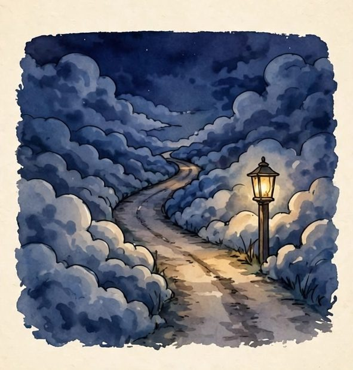
Впереди на дороге, но не ведёт: хранительница проверяет метку и идёт дальше.
Первое, что следует разучить о Бегущей по облакам, — идею проводника. Она не ведёт спящего никуда, не появляется на перекрёстках с советом, не знает пути лучше сновидящего ни в каком отношении, которое имеет значение. Она — хранитель, а не проводник: её работа — обслуживание, а не направление — лампы подрезаны, метки перекрашены, книга маршрутов поддерживается текущей. Если её когда-либо видят во сне, её видят за работой, у обочины, и она ненадолго поднимает глаза. Движение, которое она держит, — собственное движение спящего; своего груза ей в него доставлять нечего.
Различие — самозащита дома от древнейшей порчи ремесла сновидений, при которой ночь воображают укомплектованным штатом оракулом, а спящего — его клиентом. В этом доме спящий — автор, состав и береговая линия; Бегущая — дорожная бригада. Всё, что она «говорит» в каком-либо сне, было написано собственной ночной сменой спящего и должно быть заведено соответственно, — что не делает это бесполезным. Дорожные бригады видят вещи. Это делает это свидетельством, а не инструкцией.
В устройстве есть достоинство, которое дом любит: хранительница дорог — работница. Она несёт фонарь, потому что дороги темны, книгу, потому что маршруты меняются, и верёвку, потому что погода в небесах пятого зала — настоящая погода. Никаких крыльев, никакого сияния, никаких приёмных часов в загробном. Коллега, которому нужно закончить обход, — вот и вся фигура, и этого достаточно, чтобы идти рядом с практикой на протяжении жизни.
39Снаряжение Бегущей: фонарь, книга, верёвка
Снаряжение Бегущей инвентаризируется в этой комнате, потому что дом верит: фигура честна ровно настолько, насколько честно её снаряжение. Предмет: фонарь, гаванного образца, заправленный на полный ночной обход и знаменитый — среди хранителей дома, которые рассказывают друг другу такие вещи, — тем, что его никогда не видели перезаправляемым. Он освещает метки, а не сцены; Бегущая не освещает сами сны, у которых свой погодный свет. Предмет: книга, близнец собственной книги хранителя, в которой маршруты держатся с другой стороны. Предмет: верёвка, свёрнутая, для лестниц и мостовых работ пятого зала и для того, чтобы тащить нечто не более мистическое, чем застрявшие ворота на ветреном переезде.
Предмет, наконец, и неофициально: чайникова мера терпения, которую описи всегда ставят последней, потому что это предмет в постоянном употреблении. Дороги между снами не обслуживаются по расписанию, которое спящий мог бы проверить, и обход Бегущей включает долгие ожидания у ворот, которые открываются раз в десятилетие. Дом пытался вообразить её нетерпеливой — и потерпел неудачу; фигура просто не держит этого выражения, что хранители принимают как инструкцию единственного рода, который она даёт, — примером, на расстоянии, занимаясь чем-то другим.
Заметьте, чего в снаряжении нет: ни ключа, ни меча, ни книги значений. Она не может отпереть сон, победить сон или перевести сон. Снаряжение снаряжает её ровно для той работы, которая, по вере дома, нужна ночи, — носить, отмечать, ждать, — и хранитель, обнаруживший, что его собственная практика снаряжена так же — лампа, книга и время, — понял фигуру полностью.
40Как путешествует Бегущая
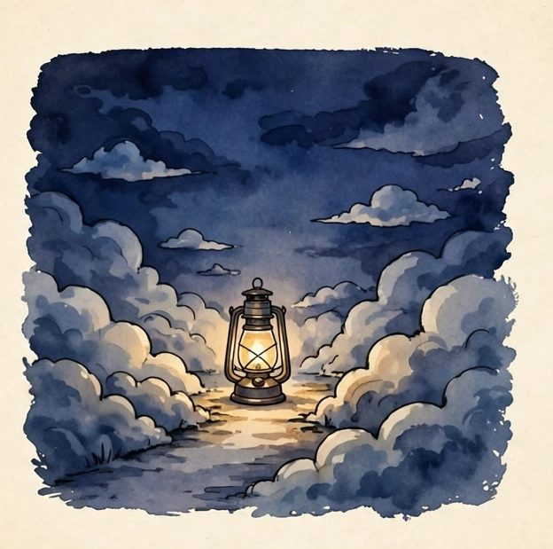
Обход в пешем темпе: один фонарь медленно движется между грядами облаков.
Как путешествует Бегущая? Пешком, в пешем темпе, по самим дорогам — дом неподвижен в этом пункте, потому что темп и есть доктрина. Небесные дороги не пролетают и не переносятся лучом; по ним ходят, как фарватеры обходит хранитель, который должен знать каждую метку по порядку, в последовательности, в темноте. Сообщения, носимые в пешем темпе, прибывают изменёнными путешествием — отредактированными расстоянием, как предложение, пересказанное у трёх якорных стоянок, прибывает как его собственный дистиллированный вариант. Дом подозревает, что именно поэтому продолжения снов так часто завершают мысль чище, чем сон, который её начал.
Её обход — длина ночи, а её маршрут — собственная география спящего: повторяющиеся места в порядке их первого появления, мосты между серийными снами, ворота, где меняется погода. Она ходит его, видит спящий сны этой ночью или нет, — хранители дома единодушны, что обход продолжается сквозь пустые протяжения, метки держатся в ожидании возвращения движения, и вот почему книга, возобновлённая после пяти лет, находит свои старые дороги всё ещё читаемыми. Кто-то ходил по ним в промежутке. Книга просто отказывается говорить больше.
И она путешествует налегке в единственном смысле, который дом измеряет: она не владеет ничем на дорогах. Ни дома на маршруте, ни клада на перекрёстках — хранительница чужих непрерывнотей не может позволить себе собственный груз. Это последняя деталь её определения и та, которую хранители цитируют чаще всего, обычно о собственной практике: носи сообщения, держи метки, не владей ничем из груза ночи. Остальная часть зала фигуры — её отдыхи, её имена, её ученик — следует из ходьбы.
41Бегущая несёт сообщения, а не значения
Сложенная записка, пронесённая через одну ночь и доставленная в другую.
Бегущая несёт сообщения, а не значения, и это различие — грузовое правило всего поместья. Сообщение — это то, что сон оставил незаконченным: предложение, оборванное пробуждением, поручение, брошенное посреди улицы, дверь, которая вот-вот откроется. Это путешествует. Это появляется, ночами или годами позже, во сне, который это завершает, — и хранитель, который вёл книгу, может наблюдать, как происходит доставка, датированная с обоих концов: свободная нить марта, завязанная в плетении ноября. Это самое тихо поразительное явление в записях, и ему не нужен курьер сверхъестественнее времени и хранимого блокнота.
Значение же, напротив, не путешествует, потому что его никогда не упаковывали. Значения производятся в месте назначения, бодрствующим умом, за завтраком, — и это скоропортящийся товар, производимый заново и по-разному при каждом перечитывании записи. Дом их не конфискует; он просто отказывается класть их в сумку Бегущей. То, что она несёт, дословно: точное незаконченное предложение, точный оттенок коридора. Хранитель, который поддерживает это различие, держит чистую книгу и спокойный дом.
Утренней канцелярии это даёт рабочее следствие. Пишите сообщение, а не значение: сцену, как она стояла, когда сон её оборвал, неотредактированную, без глосс, с неисправленной грамматикой. Если это груз, он должен путешествовать таким, как был погружен. Глоссу можно добавить позже, на полях, другим карандашом — дом встретит этот карандаш в зале хранения, — но сам груз идёт вниз сырьём, иначе Бегущая, щепетильная в своей бухгалтерии, за него не распишется.
42От одной ночи к следующей: маршрут Бегущей
Проследите маршрут Бегущей по книге одного хранителя — и он нарисует истинную карту ночей этого хранителя: он начинается у самого раннего запомненного места — часто улица детства, содержащаяся в ремонте, который ничем не обязан настоящему, — и бежит вперёд сквозь географию жизни, как сны её приобретали, дом за домом, город за городом, прибывая наконец в нынешнюю страну снов, чьи новейшие дороги после переезда, брака, утраты ещё не размечены. Маршрут — это биография, написанная якорными стоянками вместо лет.
У отрезков маршрута характерные длины. От детства к снам ухода из дома: один долгий отрезок, проходимый каждую ночь в ранней книге. Годы строительства: плотная местная сеть, все короткие переходы между городом офиса, домом в ремонте, экзаменационным залом. И в каждой долгой книге — один или два великих перехода: сон, в котором хранитель впервые нашёл дорогу от улицы детства прямо к нынешнему месту, два конца жизни, соединённые в одной сцене. Хранители датируют такие переходы, как открытия каналов. Нечто в географии навсегда сократилось.
Прочтение маршрута целиком, при сезонном обзоре, — самое близкое к церемонии, что есть в этом ремесле, и дом разрешает ему это звание. Хранитель раскладывает места книги по порядку и просто смотрит на жизнь, которую нарисовала ночь. Бегущая, чей это обход, не присутствует. Она уже на нём — обзор, по определению, всегда есть чтение её прошлых прогулок, в книге, которую она помогала вести простым средством: тем, что у неё вообще был маршрут.
43Бегущая не спешит
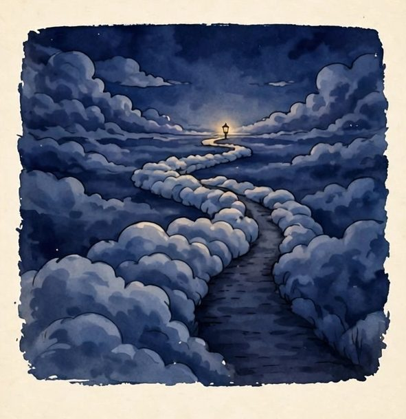
Фонарь задаёт собственный темп; дорога соглашается.
Бегущая не спешит, и дом построил на этом факте маленькую теологию практики — а затем убрал теологию и оставил факт. Сообщения прибывают, когда прибывают: продолжение сна может быть отправлено следующей ночью или следующим десятилетием, и ничто во власти хранителя не может его ускорить. Нетерпение, показывают записи, — единственная погода, которую дороги не терпят; хранители, пытающиеся принудить доставку — приёмами седьмого зала, применёнными жадно, — добиваются главным образом того, что будят себя, во всех смыслах. Груз движется в пешем темпе, потому что пеший — единственный темп, при котором его не роняют.
Её неторопливость — также критика индустрии снов бодрствующего мира, которая продаёт скорость: толкование за минуты, преображение за выходные, весь груз ночи, обработанный приложением до того, как закипит чайник. Контрпредложение дома — хранительница с фонарём, делающая обходы длиной в жизнь, и оно не извиняется за условия. Практика, измеряемая десятилетиями, всегда будет выглядеть неэффективной рядом с продуктом, измеряемым загрузками. Книги к десятому году рассказывают иную историю о том, кто из них доставил.
Для хранителя практический перевод — снятие всех сроков. В этом ремесле нет навёрстывания. Продолжение, прибывающее в шестьдесят к сну в двадцать пять, не опоздало; это обход, завершающий себя в темпе, для которого дороги были построены. Бегущая сегодня ночью на улице, она идёт. То, что она несёт, прибудет. Предложение — вся эсхатология дома, и она умещается на каталожной карточке.
44Когда Бегущая отдыхает
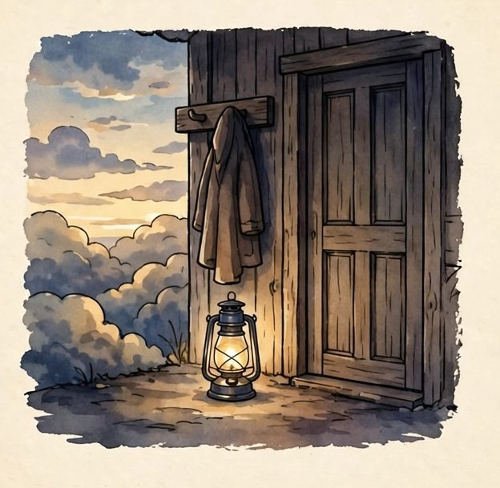
Фонарь прикручен, пальто на колышке: даже обходы держат часы.
Бывают ночи, когда Бегущая отдыхает, и дом настаивает на их законности, потому что хранители склонны к суеверию насчёт них. Это бессонные в смысле снов протяжения, серые недели мелкого сна, сезоны, когда записи книги истончаются до дат и погодных отметок. Дороги в эти недели не заброшены; они нехожены, что гаванская служба тоже знает, — фарватеры переживают зиму без единого киля, их метки держатся законом и обычаем против весны. Отдых Бегущей того же рода: не отсутствие, а межсезонье.
Что она делает? Дом отказывается изобретать для своей фигуры внесменную жизнь — там лежит мифология, а мифология — не торговля поместья. Отдых функционален и излагается функционально: система, которая носит сообщения, также их консолидирует, а консолидация невидима по замыслу. Хранителей просят доверять промежутку так, как доверяют паузе между отправкой письма и его прибытием, — не как провалу дороги, а как дороге, работающей на своей средней дистанции, вне поля зрения.
Правильный ответ хранителя на отдых Бегущей — ободная работа второго зала: держать обруч прямым, книгу открытой, утренние минуты защищёнными и дать середине отдыхать вместе с ней. Записи недвусмысленны в том, что движение возвращается на хранимые дороги. Они столь же недвусмысленны в том, что хранители, которые толкуют отдых как оставленность и разбирают обод в унынии, — те самые, чьи дороги действительно потеряны: сорняки в этом ремесле — не что иное, как остановленное внимание хранителя, носящее маску сезона.
45Ученик Бегущей — сам спящий
Ученичество в этом доме идёт в неожиданном направлении: спящий — ученик Бегущей, и изучаемое ремесло — ремесло самого хранителя. Ибо кто ещё ходит по дорогам каждую ночь, изучает их метки, несёт незаконченные предложения вперёд в памяти? Спящий и делает это — во сне, необученный, в темноте. Фигуру Бегущей лучше всего понимать как собственную ночную компетентность спящего, персонифицированную, чтобы её можно было изучать: часть хранителя, которая уже знает маршрут, уже ведёт другую книгу, уже идёт в правильном темпе. Ученичество — это бодрствующий хранитель, год за годом учащийся делать сознательно то, что Бегущая делает в пальто фигуры.
Это разрешает, для целей дома, вопрос о том, где живёт мастерство сновидений. Это не дар, вручаемый ночью пассивному. Это компетентность, которая у спящего доказуемо есть, — сны связны, повторяются, продолжаются, помнят себя, — и ремесло состоит в том, чтобы к ней присоединиться: вести записи, которые компетентность производит, изучать её географию, доверять её расписанию. Бодрствующий хранитель — не клиент ночи. Бодрствующий хранитель — её младший партнёр, повышаемый медленно.
У повышения есть один экзамен, необъявленный и повторяющийся: утро, когда хранитель пишет запись столь точную, что собственная книга ночи и утренняя совпадают до буквы. Это случается редко и никогда не повторяется по требованию. Но хранители, у которых это было однажды, описывают остальную практику после этого иначе — менее как переписку с тайной, более как ремесло, изучаемое изнутри. Бегущая, говорят, в такие утра оставляет фонарь немного выше на его колышке. Дом сообщает поговорку и одобряет только улыбку в ней.
Канцелярия „Ловец снов"
Одна канцелярия получает всю корреспонденцию этого дома — вопросы, поправки, ночные доклады с ваших собственных дорог. Она читается в порядке поступления. Канцелярия не даёт медицинских и духовных советов; она содержит дом.
46Имена, на которые Бегущая отзывается
Табличка с именем, перекрашиваемая для каждого порта: хранительница, бегущая, та, что на обходе.
В полях хранителей она отзывается на несколько имён, и дом собирает их так, как собирает всё: не решая. Бегущая, чаще всего, и Хранительница дорог. В некоторых книгах она — Ночная почта, в других — Фонарь. Береговые хранители, чья бодрствующая жизнь знает этот тип, зовут её Хранительницей фарватера и не позволяют себя поправлять. Одна долгая книга, любимица канцелярии, называет её на всём протяжении только Управлением — шутка, выдержанная тридцать лет, которую дом чтит как форму точности: часть ночи, которая доводит дела до конца.
Сам дом употребляет «Бегущая по облакам» — имя, которым озаглавлены этот зал и эта страница, и слову стоит одного предложения. Бегущая по облакам — не ездящая на облаках: она не возлежит на погоде, она бежит по её маршрутам — бежит, как бежит сообщение, как обходчик бежит свой участок. Имя держит фигуру за работой, в движении, на поверхности неба, а не возлежащей над ним. Именование в этом поместье — предохранительное устройство: назовите фигуру рабочим именем — и она останется работницей; назовите сияющим — и она начнёт принимать поклонение к Михайлову дню.
Хранители, называющие свою собственную фигуру, должны следовать тому же правилу: нечто с работой внутри. Имя будет написано в начале книги десятилетиями, произносимо в голове хранителя при каждом улове, и его тон задаст тон практики больше, чем любая доктрина в этой книге. Выбирайте имя коллеги, а не оракула. Дороги длинны, и хранитель ходит по ним в компании того, кого назвал.
47Фигура дома в честной раме
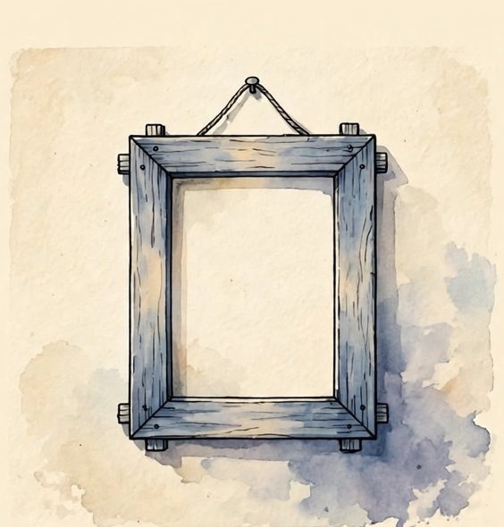
Рама фигуры, показанная открыто: крашеное дерево, честные гвозди.
Эта комната выполняет центральный акт честности дома полностью, потому что фигура заслуживает, чтобы это сделали один раз, целиком. Бегущая по облакам изобретена. Она была придумана этим Холдингом для этого дома как персонификация процессов, которые реальны, — доказуемой непрерывности ума через ночи, его хранения мест и груза, — и она не имеет существования за пределами полезности рамы. Она не посещает спящих, не носит буквальных сообщений и не ведёт никакой действительной книги нигде. Дом заявляет это без смущения и не ожидая, что заявление уменьшит её хоть на один люмен.
Ибо рама и есть суть. Человеческие хранители не поддерживают сорокалетних практик вокруг абстракций; они поддерживают их вокруг фигур, маршрутов, коллег, обходов. Поместье, практический институт в грандиозном пальто, поставляет фигуру и подписывает пальто. Реальное в этих комнатах — практика: датированные записи, повторяющиеся места, продолжения, которые действительно прибывают. Изобретённое — их хранительница. Дом просит лишь, чтобы этих двоих никогда не выставляли в счёте друг за друга.
А изобретение, удерживаемое внутри своей рамы, делает ещё одну службу, которую дом ценит: оно даёт компетентности ночи лицо, повёрнутое к работе, а не к чуду. Спящий, который думает о собственном возвращающемся уме как о коллеге на обходе, будет вести лучшие записи, чем спящий, ожидающий музы. Вот и вся защита, и дом на ней настаивает: раскрашенная фигура, честно обрамлённая, повешенная в рабочем зале, — навигационное оборудование, а не икона.
48Встретить Бегущую на полпути
Зал Бегущей по облакам заканчивается единственной встречей, которую дом держит: встретить Бегущую на полпути. Полпути, в географии этого ремесла, — это утренняя канцелярия, единственное место, где сторона работы спящего и сторона фигуры обращены друг к другу. Она доходит до последней сцены сна; хранитель доходит до первого предложения. Встреча и есть запись. Всё, что строит дом — сеть, книгу, дороги, возвращения, — есть развёртывание этого единственного ежедневного свидания на границе сна.
Хранители представляют встречу по-разному, и дом не регулирует ничего из этого. Что он регулирует — это явку. Полпути — не настроение, а место и время: прикроватное, первые минуты, открытая книга. Хранитель, который там, ручка в руке, два утра из трёх, будет встречен большим грузом, чем сможет употребить за жизнь. Хранитель, который ждёт, пока ему захочется, ждёт не на той станции, красиво одетый, пока поезда проходят насквозь.
И вот книга поворачивается от хранительницы дорог к самим дорогам — лестницам, являющимся в трёх десятилетиях, местам, которые держат свою мебель, лицам, возвращающимся, как актёры в труппу. У гостя теперь есть путеводитель, сеть и коллега. Остаётся страна. Зал впереди — атлас дома, и каждая его страница, как признает последняя комната зала, была снята во сне.
49В небе есть дороги
Маршруты в верхнем воздухе, нарисованные светом фонаря и старыми чернилами.
В небе есть дороги. Это утверждение — фундамент зала, и делается оно в картографическом смысле, а не в мистическом: дорога — это всё, чем движение действительно пользуется, многократно, чтобы попасть из одного места в другое, — а ночное движение доказуемо пользуется маршрутами. Та же последовательность мест, сон за сном, год за годом: улица, которая ведёт к лестнице, лестница — к залу, зал — к двери, открывающейся на море. Повторение — землемер. Там, где сны всё путешествуют по одной линии, дорога есть, что бы дневной свет ни думал о географии.
Дороги подразумевают страну по обе стороны от них, а страна — остальной ночной мир сновидящего: нехоженые районы, мимо краёв которых проходят дороги, мелькающие с мостов, никогда не входящие. Атлас долгой книги поэтому по большей части береговая линия: пройденные линии нарисованы твёрдо, внутренность оставлена честно пустой, набросанной «может быть». Дом дорожит пустотами. Атлас снов без пустот — фантастическая карта; настоящий признаёт, что ночь, как любая страна, по большей части посещается в её портах и вдоль её почтовых дорог.
Употребления дорог — употребления всех дорог: они делают возможным возвращение, они делают сообщения переносимыми, и они дают хранителю способ точно говорить о том, куда ушёл сон. «По лестничной дороге, мимо зала, не доходя до моря» — это местоположение в действительной личной географии, находимое снова. Залы впереди пройдут по главным чертам — местам, лицам, мостам, воротам, — и хранителя просят принести книгу, потому что атлас, который рисует дом, — образец, и единственная копия, которая имеет значение, — та, которую вписывают собственные ночи хранителя.
50Лестница, являющаяся в снах трёх десятилетий
Лестница, посреди пролёта между облаками, точно там, где она была в 1998 году.
Из всех дорог в книгах лестница — самая обследованная, и её портрет в этой комнате нарисован из составных записей дома: лестница, являющаяся в снах трёх десятилетий хранителя — в школе, затем в офисном здании, которое заменило школу в географии сна, затем в доме у моря, который заимствовал тот же самый пролёт целиком, балюстраду и изношенную ступень, как кусок декорации, который ночь держит в запасе и переставляет всюду, где сюжет требует подъёма. Хранитель поднимается по ней в девять, в тридцать, в шестьдесят. Лестница не стареет, и её площадки всегда предлагают те же две двери.
Заметьте, что такое лестница: не символ, прежде всего, а часть инфраструктуры — стандартное решение ночи для задачи попасть между уровнями жизни. Ум, который строит декорации из запаса, естественно будет держать лестницу, как театр держит лестничную площадку, и её повторение через десятилетия — вернейшее доказательство в книгах, что ночь — действующее предприятие с реквизиторским отделом, памятью и бюджетом.
Ремесленная инструкция проста, и это первое упражнение зала небесных дорог: когда лестница — или её эквивалент: лифт, стремянка, тропа на склоне — появляется в улове, отмечайте её как инфраструктуру, а не происшествие. Давайте ей одно и то же имя каждый раз. Книги, которые последовательно называют свои дороги, становятся атласами; книги, которые описывают каждое появление заново, остаются дневниками. Обе — почтенные книги. Только по одной из них можно ориентироваться.
51Повторяющиеся места хранят свою мебель
Повторяющиеся места хранят свою мебель, и мебель — лучшее свидетельство хранителя, что ночь поддерживает свои декорации, а не импровизирует их каждую ночь. Гавань в одной долгой книге имеет ту же зелёную дверь на своём складе сорок лет; кафе в другой обслуживает, через десятилетия, за теми же мраморными столиками, хотя сновидящий никогда не входил в его бодрствующий оригинал, если таковой есть. География снов консервативна. Она предпочитает ремонтировать, а не перестраивать, и её ремонты столь постепенны, что только датированная книга может их поймать: год, когда дверь склада покрасили в синее, внесённый без комментария, видимый как изменение только при перечитывании.
Этот консерватизм — то, что делает дороги дорогами. Маршрут — последовательность надёжностей, а надёжности ночи — её места, каждое из которых обещание, которое следующий сон держит. Часть хранителя — часть землемера: назвать место один раз, хорошо, а затем записывать его изменения как изменения, а не как новые места. Атлас, который получается, имеет ту же добродетель, что гаванская карта, пересмотренная через издания: глуби́ны накапливаются, опасности отмечаются, знакомая вода углубляется в значении именно потому, что это та же вода.
А мебель режет и в другую сторону, как диагностический инструмент. Когда любимое повторяющееся место появляется неправильным — его комнаты переставлены до неузнаваемости, его люди отсутствуют, его свет изменился, — запись заслуживает звезды на полях, а не толкования. Звезда говорит лишь: декорацию разобрали или перестроили в этом сезоне; смотрите, что делал год. Дом доверяет записям со звёздами и спокойным хранителям и не доверяет всем атласам снов, чья география никогда не меняется. У настоящих стран есть погода. У настоящих ночей тоже.
52Повторяющиеся лица, возвращающиеся актёры
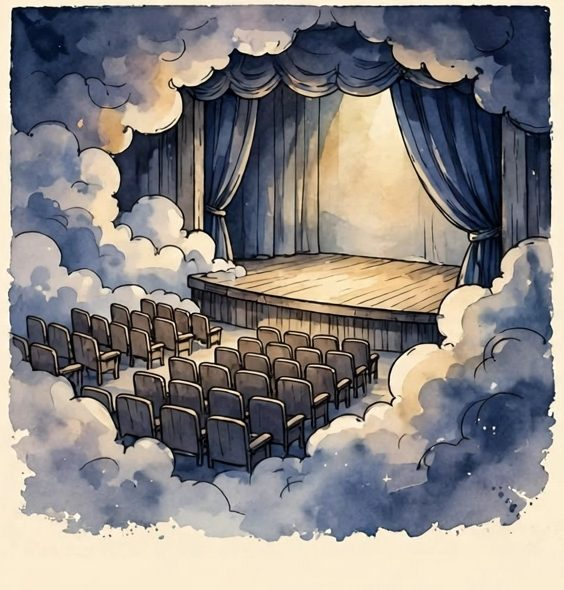
Труппа на репетиции: те же лица, новые роли, старая верность.
Ночь держит труппу актёров, и её распределение ролей — отчаяние буквалистов: одно и то же лицо играет брата хранителя в одном сне, таможенного чиновника в следующем и незнакомца, чьё имя сновидящий почему-то знает, в третьем — в то время как роль брата в ту же ночь берёт кто-то из офиса. Повторяющиеся лица поэтому заводятся в этом доме под персоналом, а не под персонами. Лицо — член труппы. Сон назначает роли. Книга, которая путает этих двоих, записывает бессмыслицу и, что хуже, импортирует бессмыслицу в бодрствующие отношения, где ей не место и где она может причинить вред.
Заведённая правильно, труппа — одно из удовольствий книги. Есть лицо, которое появляется с детства в массовых сценах и никогда не имело ни одной реплики. Есть незнакомец-сновидец — никто из знакомых хранителя, — который повторяется с надёжностью штатного, всегда на вокзалах, всегда посреди поручения. Есть знаменитое единственное появление, которое вернулось после тридцати лет на одну сцену, к задокументированному изумлению хранителя. Состав труппы, хранимый через десятилетия, — портрет запаса человечности ума, и меняется он так же медленно, как состав репертуарного театра.
Единственное правило дома для труппы — вежливость: они не эмиссары людей, чьи лица они заимствуют. Сон о коллеге — бухгалтерия о лице в запасе, а не разведданные о коллеге. Хранители, которые держат правило, держат в порядке и свои книги, и свои дружбы — а лица, освобождённые от дипломатических обязанностей, продолжают играть свои роли невозмутимо.
53Мост между двумя ночами
Верёвочный мост между двумя берегами ночи, фонари на обоих концах.
Между одной ночью и следующей, там, где серийный сон возобновляется или сообщение доставляется, книги рисуют мост — и мост, рассмотренный по записям многих хранителей, имеет последовательную инженерию. Он узок: переход несёт одного сновидящего, одно поручение, ничего похожего на всё население предыдущей сцены. Он краток: переходы происходят на шве сна, в первые или последние минуты, и сновидящие помнят сам мост совершенно непропорционально его длине. И он качается — с отчётливым ощущением, докладываемым через десятилетия, что дальняя сторона может не удержать той же географии, которую держала прошлой ночью.
Мост — единица непрерывности ремесла. Каждое продолжение, которое пытается седьмой зал, — попытка найти мост; каждое доставленное сообщение пересекло один. Хранитель не может их строить — мостостроение — работа ночной стороны, отдел Бегущей, — но может делать то, что гаванские города делают для паромов: держать пристань в ремонте. Пристань, на бодрствующей стороне, — сама запись в книге: незаконченное предложение, записанное точно, которое есть пирс, к которому возвращающийся сон швартуется. Записи, которые глоссят или суммируют, пристани не строят; сон возвращается через — и находит, где пришвартоваться, негде.
Поэтому дом придирчив, снова, к сырой записи. Устои моста — буквальные слова последнего мгновения сна, и хранитель, который пишет их верно, занимается гражданским строительством для будущего себя. Сами пролёты прибывают, когда прибывают, — но когда один прибывает, во сне, который открывается в точности там, где другой закрылся, хранитель, стоящий у ухоженной пристани, узнает его как то, что он есть: дорожную систему за работой.
54Двери, открывающиеся в другие годы
Среди дверей в географии снов — а поместье, будучи поместьем, их каталогизировало — особенный класс открывается в другие годы. Сновидящий проходит через совершенно обычную дверь в повторяющемся доме — и оказывается на кухне двадцатилетней давности, со светом того десятилетия через её окно и более молодым домохозяйством за столом, не ведающим. Никакого механизма сон не предлагает и дом не требует. Дверь — стандартная фурнитура в архитектуре ночи, где все годы хранителя хранятся на одном этаже, а перегородки между ними знаменито тонки.
Ремесленная ценность этих дверей — ориентация. Хранитель, который может датировать комнату за дверью — по мебели, по возрастам лиц, по модели чайника, — научился читать стратиграфию ночи, и записи приобретают измерение, которого не даёт никакой другой элемент сна: глубину во времени, обследованную. Некоторые книги держат отдельный указатель дверей-в-годы, и указатель читается, как оглавление автобиографии, о которой хранитель не знал, что она пишется по порядку.
Одно предостережение, самым прямым голосом дома: комната за дверью — декорация, содержащаяся в ремонте тем же консерватизмом, который держит лестницу. Это не прошлое, и ничто в ней нельзя переобсудить, вернуть или предупредить. Хранители проходят насквозь, наблюдают и возвращаются с записями. Те, кто пытается остаться — искусствами седьмого зала, напрягаясь, — докладывают обычный результат: декорация растворяется, утро прибывает, книга получает честную строку о погоде. Двери открываются для посетителей. Ночь держит собственность.
55Погодные ворота: засыпание как переход границы
Пограничный пост в сумерках: документы в порядке, ворота поднимаются в сон.
Каждую ночь на дороги вступают через ворота, и ворота — само засыпание, единственный переход во всей системе, который хранитель совершает наяву, или почти. Дом обращается с ним как с пограничным постом с известными часами и известными формальностями. Формальности — всё, что отправляет именно этого хранителя насквозь: затемнённая комната, книга, закрытая на той же закладке главы, день, обдуманный или намеренно необдуманный. Границы варьируются; существование границы — нет. По дальнюю сторону погода — ночи; по ближнюю она всё ещё дня, истончающаяся.
Ворота объясняют несколько записей в каждой книге, которые иначе выглядели бы аномалиями. Фрагментарные сны первого часа — таможенные сны, как их зовёт дом, все очереди, досмотры и полуобъявленные товары, — есть собственная погода перехода, ум, ставящий штампы в документы. Яркие ложные пробуждения тоже принадлежат воротам: путешественник, который верит, что он пересёк, а всё ещё в зале. Хранители, которые научаются распознавать погодные ворота, перестают ошибочно заводить их как неудавшийся сон. Это первая миля дороги, и она выглядит как то, что она есть.
Есть также обратный переход, при пробуждении, для которого утренняя канцелярия следующего зала — таможня, место, где ночной груз декларируется письменно, прежде чем испарится. Симметрия — ремесло в одной строке: ворота наружу в сумерках, канцелярия на рассвете, а между ними вся страна дорог, в которую входят и из которой выходят по формальностям столь простым, что ребёнок их выполняет, и столь лёгким для пропуска, что большинство взрослых в большинство ночей контрабандой вывозят свои сны недекларированными и теряют их на границе.
56Дорога поворачивает обратно: сны, которые ведут домой
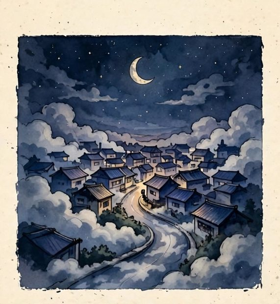
Дорога загибается домой: крыши первого города под поздней луной.
Дороги ведут не только наружу. Каждая долгая книга содержит обратные путешествия — сны, которые ведут домой: не домой как адрес, а домой как столицу повторяющейся страны, место, вокруг которого география ночи тайно организована. Для одного хранителя это кухня бабушки, недостижимая в бодрствующей жизни сорок лет и обслуживаемая каждую ночь тремя разными дорогами. Для другого — гавань, которой никогда не существовало и которая тем не менее принимает весь домашний груз сна. Направление — данное: некоторые сны путешествуют, а некоторые сны возвращаются, и у возвращений в записях другой свет — хранители пишут их медленнее и датируют дважды.
Дом выводит одно практическое следствие. Когда хранитель потерян в собственной ночи — в грозовые сезоны восьмого зала, в годы, когда страна снов поворачивается враждебной или странной, — домашние дороги суть маршрут восстановления, и к ним можно намеренно идти скромными искусствами седьмого зала: место, отрепетированное днём, вопрос, отправленный в постель, дверь, оставленная приоткрытой. Ночь, которая десятилетиями держит свою столицу в ремонте, не будучи просимой, обычно впускает своего хранителя домашними воротами, когда другие ворота закрыты погодой.
А дом, в атласе, определяется функционально и без сентиментальности: это место, из которого все другие места в стране снов достижимы. Хранители, нашедшие своё — а перечитывание годовых записей обычно его обнаруживает, — держат ключевой лист всей своей географии. Каждая другая дорога — дорога откуда-то. Домашняя дорога — та, которая делает атлас картой одной страны, а не альбомом открыток.
57Карты лгут; маршруты помнят
Признание от отдела съёмки: карты лгут. Не злонамеренно — структурно. Карта рисуется от дорог наружу и уплощает всё, к чему прикасается: три десятилетия лестницы становятся символом, качка моста — линией, погода ворот опущена целиком как недостойная достоинства картографии. Атлас каждого хранителя, включая этот, — вежливая фикция, наложенная на местность, которая существует только в переходе. Дом держит атлас тем не менее, по той же причине, по которой гавани держат карты приливной воды: ложь стандартизирована, датирована и полезна, при условии, что никто не принимает её за море.
Маршруты помнят то, что карты забывают. Маршрут — последовательность, удерживаемая в порядке, в котором по ней ходят, — лестница, затем зал, затем дверь со сквозняком, — и последовательность есть то, как ночь действительно хранит свою географию. Вот почему дисциплина повествовательного порядка книги значит больше любого указателя: напишите сон в его порядке ходьбы — и маршрут сохранён, даже если каждое имя места неверно. Перемешайте порядок ради элегантности — и карта приобретает лоск, а дорога потеряна. Постоянный приказ дома своим хранителям, начертанный над дверью комнаты атласа: маршрут — первым, карту — второй, элегантность — последней и легко.
Долгое следствие ободряет. Хранители, которые боятся, что их атласы неточны, успокаиваются отделом: точность никогда не была доступна и никогда не была сутью. Суть — возвращаемость. Маршрут, запомненный достаточно хорошо, чтобы по нему прошли снова — хранителем, в продолжении; Бегущей, на её обходах, — сделал всё, для чего дорога существует. Карта может лгать, как ей угодно, красивыми чернилами. Дорога, пройденная, говорит правду тем, что куда-то идёт.
58Спутники ночи
Два фонаря на одной дороге: компания на почтительном расстоянии.
Некоторые протяжения дорог проходятся в компании, и книги последовательны насчёт природы компании: спутники — попутчики, а не проводники. Фигура, которая идёт рядом со сновидящим сезон ночей, — показывая короткий путь тем, что идёт по нему, никогда — объяснением; ребёнок, который знает город снов лучше сновидящего и с которым во сне советуются как о чём-то само собой разумеющемся; раз в десятилетие, в знаменитых записях, сама Бегущая, видимая на длину дороги впереди, держащая тот же темп, не ожидающая хранителя и не поторапливающая. Компания действительна, как компания во снах: присутствием, а не удостоверениями.
Дом заводит спутников под погодой, что есть его способ чтить, не возводя на трон. Они прибывают с сезонами и уходят с ними. Детский спутник уходит на покой, обычно незамеченным, где-то в двадцатые годы хранителя; книги средней жизни приобретают своих штатных. Погоня за ушедшим спутником числится в провалах седьмого зала, и её тщетность пословична в записях: дорожная компания переформировывается вокруг хранителя, который идёт дальше, а не вокруг того, кто ждёт у ворот с фотографией.
Одно употребление компании санкционировано и очень любимо: спросите их во сне дорогу. Ответы — ночь, говорящая сама с собой с опущенной стражей, — часто бессмыслица, иногда единственное самое практическое предложение в месяце записей, всегда честно заводимые как слова спутника и никогда как оракулы. Замечание дома на полях для таких записей — единственная инструкция, которую оно применяет к каждому голосу в ночи, включая голос собственной фигуры: записывайте точно, приписывайте точно, повинуйтесь скупо.
59Дальняя сторона неба: сны об ином месте
Иное место, увиденное с дороги: берег, на который не высаживалась ни одна книга.
На краю атласа каждого хранителя есть иное место: страна, на которую дороги указывают, но в которую никогда не входят, — город за водой сна, освещённый и подробный и никогда не высаженный; район, видимый с площадки лестницы сорок лет, по улицам которого ни разу не ходили. Иное место — стандартная черта географии ночи, и дом обращается с его постоянством как с информацией. Ум держит горизонт в запасе. Он снабжает атлас направлением тоски, у которой нет маршрута, и делает это, предполагают записи, в каждом хранителе, в каждом возрасте, в каждой погоде.
Искушение — обращаться с иным местом как с пунктом назначения в строительстве: напрягаться к нему искусствами седьмого зала, пока сон не уступит высадку. Записи таких кампаний равномерны и кратки: город отступает со скоростью приближения, район развивает туман. Дом поэтому заводит иное место под декорацией, в почётном смысле: это то, на что дороги существуют смотреть между портами. Его функция в системе — держать географию открытой с дальней стороны, как горизонт держит морскую карту честной насчёт масштаба.
А однажды — книги, снова, единодушны, что это примерно однажды, — хранитель всё же высаживается. Обычная ночь, ничем не примечательный мост, и сновидящий стоит в ином месте тридцати лет, а свет делает то, что он всегда делал из-за воды. Запись той ночи обычно самая короткая в книге года. К ней нечего добавить, и дом, который прочитал несколько, может подтвердить, что ничего — это то, что их хранители добавили. Атлас закрывает секцию; карта приобретает вторую страну; дороги к утру уже бегут туда.
60Каждая дорога этого зала проходится во сне
Зал небесных дорог закрывается своим признанием, которое стояло у всех на виду в каждой комнате: каждая дорога в этом зале проходится во сне. Атлас — не описание места, которое можно было бы посетить какими-либо иными средствами, и его хранитель — не путешественник, которого можно было бы расспросить о путешествии за завтраком, — завтрак будучи в точности дальней стороной границы, где путешественник растворяется, а делопроизводитель является на службу, держа всё, что путешественнику удалось отправить через неё. Вся география существует в хранении: в маршрутах книги, названных местах, датированных изменениях мебели. Уберите хранение — и страна ушла к девяти утра, не нанесённая на карту и, к вечеру, неверуемая.
Это не слабость системы. Это и есть система. Страна ночи — единственная территория, чьё существование целиком документально, и дом — поместье, которое держит свои карты, как другие институты держат купчие, — доволен быть её архивной конторой. Гость, который проследовал аргумент досюда, уже держит его практическую форму: дороги реальны ровно настолько, насколько реальна дисциплина хранителя идти утром обратно к канцелярии и записывать маршрут, пока его ещё можно прочитать по ночному небу памяти.
За дверью впереди — контора, где эта дисциплина живёт: зал хранения, с его книгами и его утренней канцелярией, его датами и его почерком. Страна обследована в очертании. Дальше — то, как хранитель её хранит: один рассвет, одно предложение, одна датированная страница за раз.
Канцелярия „Ловец снов"
Одна канцелярия получает всю корреспонденцию этого дома — вопросы, поправки, ночные доклады с ваших собственных дорог. Она читается в порядке поступления. Канцелярия не даёт медицинских и духовных советов; она содержит дом.
61Книга снов
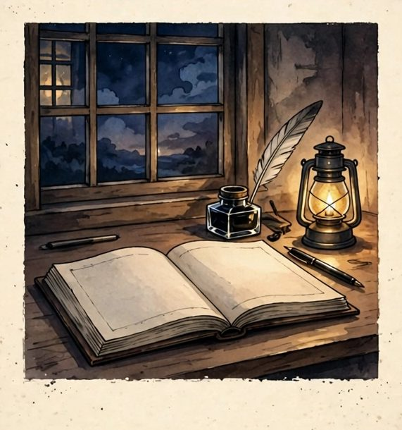
Книга, открытая на прошлой ночи: чернила ещё решают, стать ли постоянными.
Книга снов — центральный инструмент дома, и её представляют без новизны: книга у кровати, в которую записывается ночь. Бумага — рекомендация дома — за её постоянство, её безразличие к батареям и её отказ предлагать хранителю что-либо ещё посмотреть в шесть утра, — хотя канцелярия принимает планшеты, файлы и обороты конвертов с тем же уважением, при условии, что они датированы и хранятся в одном месте. Инструмент — не носитель. Инструмент — непрерывная серия.
Её требований два: она живёт у кровати и открывается прежде всего остального. Каждое развёртывание в этом зале — даты, погодные отметки, правило дословности — есть комментарий к этим двум требованиям, потому что записи показывают, что практики умирают ровно от двух причин: книга была в другой комнате и утру позволили начаться прежде записи. Держите книгу близко, а минуты защищёнными — и книга переживёт каждую смену дома, десятилетия и мнения своего хранителя о снах.
Книга также, отмечает дом для гостя, прибывающего свежим из зала дорог, — единственная возможная форма атласа. Без неё нет страны снов, нет маршрутов, нет серий, нет второго улова. Грандиознейшая фигура книги — сама Бегущая по облакам, с её обходами и её фонарём, — есть, когда раму рассматривают, персонификация того, что делает книга: несёт незаконченное дело ночи вперёд, письменно, в пешем темпе, годами. Ведите книгу — и фигура избыточна. Дом держит обеих, потому что хранители — люди, а дороги длинны.
62Утренняя канцелярия
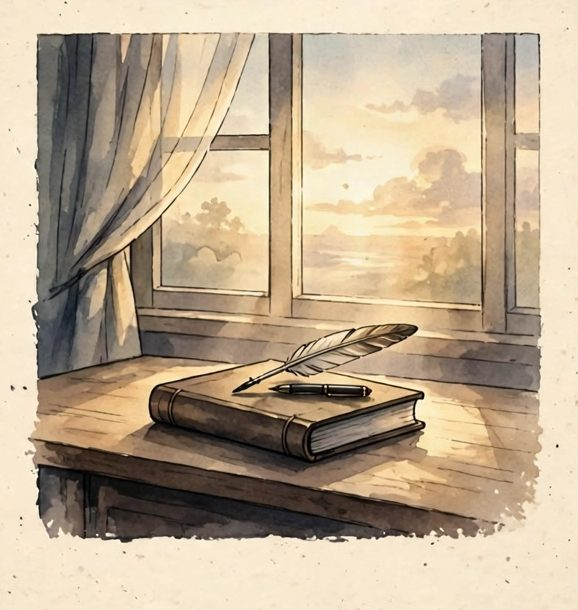
Первый свет на утреннем столе: книга, ручка, и день ещё не начался.
Утренняя канцелярия — не мебель; это пятнадцать минут с границей вокруг них. Дом предписывает границу прежде содержания: запись пишется до того, как посмотрят телефон, до новостей, до первой просьбы домохозяйства, — потому что у сна после пробуждения период полураспада запаха в проветриваемой комнате, а первый вход дня — это вентиляция. Хранители защищают четверть часа так, как моряки защищают приливное окно: не от рвения, а потому что работу физически нельзя сделать вне его.
То, что держит канцелярия, минимально и неподвижно: книга, ручка, которая ей принадлежит, и свет, достаточный, чтобы писать. Церемония, если это церемония, меньше, чем предполагает слово, — сесть, открыть книгу, написать дату и начать со всего, что есть, включая ничто. Запись о ничём длиной в одну строку — полное исполнение долга. Достоинство канцелярии происходит от её регулярности, а не от её атмосферы; хранители, которые ждут правильной атмосферы, отсылаются к доктрине обода и середины второго зала.
На протяжении лет утренняя канцелярия становится лучшей встречей в жизни хранителя — единственной встречей, которая никогда не переносится из-за чужой срочности, потому что она происходит до того, как срочность допускается. Дом слышал, как хранители зовут её в своих полях первым честным мгновением дня. Канцелярия заводит комплимент под обзоры оборудования и считает дело закрытым: стол, которым пользуются ежедневно двадцать лет, описан его употреблением лучше, чем любая комната этой книги могла бы его описать.
63Запишите это до того, как закипит чайник
Самая цитируемая инструкция дома — кухонная инструкция: запишите это до того, как закипит чайник. Промежуток между подъёмом и первым горячим напитком — точный размер окна, в котором сон ещё можно продиктовать; после него запись стоит втрое усилий и даёт половину сна. Правило не о чайниках. Оно об открытии, сделанном независимо каждым хранителем в записях, что память о ночи не блекнет постепенно, как фотография, а рушится структурно, как песочный замок на линии прилива, — целые сцены стоят до одной волны дня, а затем береговая линия ушла.
Практическая последовательность поэтому репетируется, пока не станет водопроводом: проснуться; не обдумывать предстоящий день; открыть книгу; написать первое, что есть, — а это навык сам по себе, и у него есть следующая комната. Затем чайник, домохозяйство, мир. Хранителям с детьми, дежурствами, сменами и другим законным хаосом напоминают, что правило уменьшается без поломки: одно предложение в заметке телефона, продиктованное в коридоре, — запись по правилу чайника. Правило запрещает только предложение «позже», то, что начинается со «сегодня вечером я запишу сегодняшнее утреннее—», которое записи классифицируют единодушно как вымысел.
В строгости правила спрятана милость. Поскольку окно коротко и известно, долг короток и известен. Дом просит пять минут в единственное мгновение, когда они стоят часа, и ничего ни в какое другое время дня. Практика, которая уважает утра своего хранителя, будет хранима. Практика, которая колонизирует день упражнениями, будет компостирована к весне, а компост в этом ремесле даже не удобряет.
64Первое предложение — это дверь
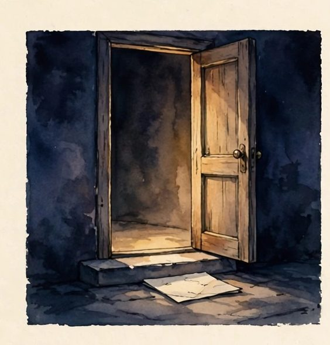
Одно предложение на пороге, а за ним остальной сон — ждёт.
Каждая запись начинается с первого предложения, и первое предложение — это дверь: напишите его — и остальной сон, поразительно часто, входит следом, сцена за сценой, как будто стоял в очереди. Предложение двери не обязано быть началом сна — сны, не имеющие уважения к хронологии, вписываются оттуда, где хранитель стоит. Лицо, цвет, последняя сцена, середина предложения, сказанного труппой: любое из этого, записанное просто, отпирает коридор обратно в целое. Инструкция дома соответственно проста: не ищите начало. Пишите фрагмент, который в руке.
Верность фрагмента значит больше его позиции. «Лестница, вода на ступенях» вновь откроет сон при перечитывании годы спустя; «мне снились лестницы, это было странно» не откроет ничего, будучи заключением в поисках своих свидетельств. Правило редактирования канцелярии для первых предложений — правило землемера: конкретные существительные, нынешняя погода, никаких вердиктов. «Странно» — вердикт. Вода на ступенях — дверь.
Хранители развивают на протяжении года узнаваемую руку у двери — некоторые всегда входят через место, некоторые через последний свет сна, некоторые через предложение диалога, которое они всё ещё слышат. Руке не учат; она накапливается, и накопление — это ремесло, становящееся личным, что и есть цель ремесла. Но его начало доступно сегодня вечером любому по цене одного честного фрагмента: первое, записанное первым, до чайника.
65Даты — позвоночник книги
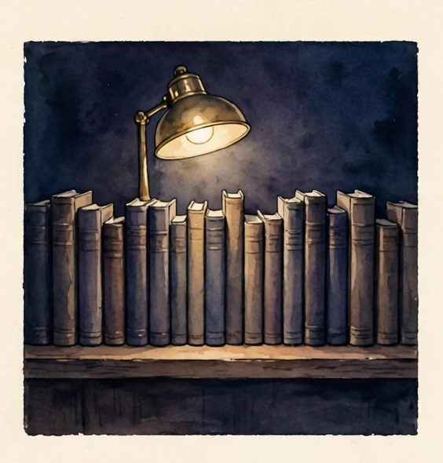
Даты по корешку, как позвонки: книга стоит прямо на них.
Дата — позвоночник книги, и дом будет защищать метафору долго, если его спровоцировать: уберите даты — и книга рушится в кучу интересных позвонков, каждый настоящий, животное неузнаваемо. С датами всё остальное в ремесле становится возможным — серии, перечитывание, сезонный обзор, открытие, что сон об экзамене держит аудиторский календарь компании. Без дат лучшие записи — недатированная погода неизвестного года, красивая и бесполезная, как карты с глубинами, но без береговой линии.
Правило соответственно абсолютно и соответственно просто: каждая запись датирована, включая пустые, включая односрочные грозы, включая страницы, написанные рукой, которой хранитель стыдится. Дата идёт в начало, прежде первого предложения, в миг письма — никогда не реконструируется позже, потому что реконструированная дата — сломанный позвонок в корсете: он держит форму и предаёт её под нагрузкой. Хранители вдали от книги пишут на чём угодно и вписывают страницу по возвращении, дату первой, извинений нигде.
Есть долгий дивиденд, который дом обещает с невозмутимой совестью, поскольку это бухгалтерия, а не мистика: датированная книга стареет в свидетельство. Десять лет корешков делают структуру, на которую хранитель может опереться, — буквальную запись того, как шли ночи одного ума, сезон за сезоном, через всё, что содержала жизнь. Ничто другое, чем владеет хранитель, не документирует внутреннюю сторону тех же лет с тем же разрешением. Поместье, которое занимается записями, знает цену позвоночника, который ни разу не был согнут.
66Нарисуйте комнату, назовите погоду
Два полевых искусства держат запись судоходной для её будущего читателя, и эта комната учит им парой. Первое — нарисовать комнату: три линии карандаша — грубый план места сна, поворот лестницы, форма гавани, — неумело, несмущённо, и стоящие при перечитывании больше, чем страница прозы, потому что география снов пространственна прежде, чем она что-либо ещё, а проза о местах испаряется ровно с той скоростью, с которой планы — нет. Хранителям, которые не умеют рисовать, напоминают, что ночь тоже не умеет рисовать — и справляется.
Второе — назвать погоду. Каждая запись закрывается климатом сна в слово-два — ясно, душно, гроза идёт, гаванский туман, — частной стенографией хранителя, которая на протяжении лет разовьёт собственную точность. Имя погоды — указатель, которым будущий себе действительно будет пользоваться: никто не перечитывает десятилетие по сюжету, но каждый может просмотреть десятилетие по погоде, находя грозовые сезоны и долгие ясные протяжения со скоростью большого пальца. Вместе план и погода делают книгу искомой единственным читателем, который у неё есть, со скоростью, с которой этот читатель действительно ищет.
Ни одно из искусств не украшение. Они — различие между дневником и картой, а этот дом, как будет памятовано, хранит сны так, как другие дома хранят карты. Символов карты немного, и они таковы: дата в начале, предложение у двери, план на полях, погода в конце. Хранитель, чьи записи несут все четыре, может ориентироваться в двадцати годах ночей, ни разу в них не потерявшись.
67Храните собственные слова сна
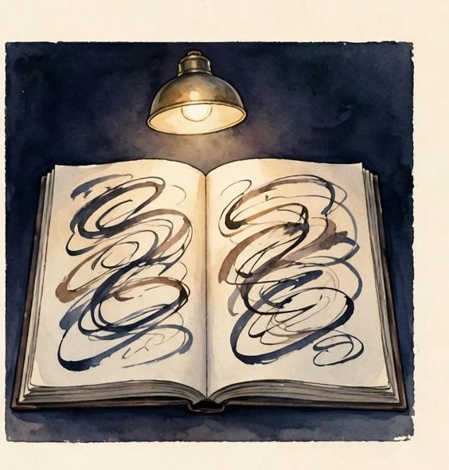
Собственная формулировка сна, снятая дословно, грамматика неисправлена.
Храните собственные слова сна. Инструкция управляет самым странным и самым ценным слоем записи: вещами, сказанными во снах, которые прибывают с дикцией, которую бодрствующий ум никогда не произвёл бы, — объявления чиновников ночных станций, замечания труппы в синтаксисе, слегка сбившемся с истинного, собственный голос сновидящего, издающий указания в повелительном наклонении капитана порта. Записанные дословно, неотредактированные, эти предложения — чистейшая руда, которую сеть поднимает. Перефразированные, они шлак: бодрствующий редактор — неутомимый улучшатель, и каждое улучшение — малая подделка.
Правило дословности простирается за пределы речи. Собственные имена сна для его мест — город, названный неверным именем с полной уверенностью, коллега, переименованный конторой распределения ролей сна, — идут вниз как дано, с бодрствующей поправкой, если она есть, в скобках. Его числа идут вниз как дано: номер платформы, год на двери, цена переезда. Дом не причудничает. Дикция сна — единственная часть улова, которую нельзя реконструировать выводом позже; сюжет можно перевывести из плана, но предложение, однажды нормализованное, ушло навсегда.
Хранители докладывают, и дом подтверждает по записям, что дословный слой — то, что перечитывающий себя ценит выше всего остального: записи, где ночь поймана говорящей с собственным акцентом. Десятилетие таких предложений — разговорник страны, которую посетил только хранитель. Канцелярия считает разговорник, сам по себе, достаточным пожизненным обоснованием правила чайника.
68Короткая запись бьёт потерянную эпопею
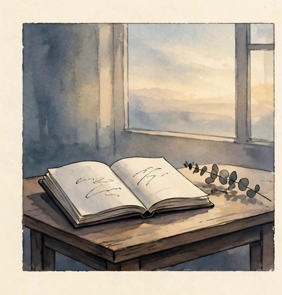
Четыре честные строки в книге перевешивают шедевр, оставшийся в постели.
Короткая запись бьёт потерянную эпопею, и дом излагает предпочтение как политику, потому что противоположное предпочтение — самая обычная причина смерти практики. Потерянная эпопея — сон необычайного великолепия, который хранитель намерен записать как следует — на выходных, в хорошей тетради, с полным обращением, — и который поэтому не записывается вовсе, намерение потребило утреннее окно, в котором его скелет можно было поймать. Короткая запись, напротив, длиной в четыре строки, написана плохим почерком и бессмертна. У неё есть дата, предложение двери, погода. Эпопея, которую она сокращает, может быть наполовину перестроена из неё в любую позднейшую дату; из ненаписанной эпопеи не может быть перестроено ничего, никогда.
Политика масштабируется в общий закон ремесла: книга вознаграждает захват, а не композицию. Композиция приветствуется — на позднейшей странице, в позднейший час, ясно отмеченная как работа дня над материалом ночи. Но утренний долг — улов, и улов завершён при любой длине, на которой сон себя сдаёт. Две строки, на которых сон ещё мокр, стоят в оценке дома выше двух страниц литературы о сне, которому позволили высохнуть в анекдот.
Есть психологический дивиденд, который дом упоминает, потому что хранители упоминают его постоянно: политика короткой записи делает практику непроваливаемой. Ни одно утро не может быть испорчено, чья успешность определена как дата и предложение. Хранитель, который усвоил определение, перестаёт иметь утра вины о книге — а вина, как скажет следующая комната, — единственная погода, против которой дом активно проектирует.
69Книга — не дневник вины
Книга — не дневник вины, и комната необходима, потому что книги, ведомые добросовестными людьми, имеют тенденцию становиться именно этим: записью, к которой обращаются главным образом для установления вины, — пропущенные утра перечислены, пустоты допрошены, весь аппарат внимания переоборудован в суд. Дом разбирает суд здесь. Записи книги — сводки погоды со станции, а станцию не винят за её туман. Пустоты — данные о сезоне жизни, допустимые и необвинённые. Пропущенная неделя — порванная нить, починенная следующей датой, как установил второй зал.
Практическая проверка здоровой книги — чувство хранителя при её открытии. Если вид книги производит малый подъём разворачиваемой карты — где мы были, что пришло прошлой ночью, — инструмент в порядке. Если он производит вздрог ответчика, инструмент был перемонтирован, и хранителю предписывается выполнить единственный акт дома по обслуживанию хранителя: перечитать вслух лучшие записи года, медленно, пока книга снова не станет журналом гавани, а не обвинительным листом.
Дом строг в этом, потому что всё остальное, чему он учит, зависит от того, чтобы книга оставалась местом, куда хранитель хочет идти. Внимание, удерживаемое при температуре вины, сворачивается в избегание в течение сезона, а избегание — единственный провал, из которого практики не восстанавливаются. Сеть была сплетена под обещание взглянуть снова. Взгляд снова должен оставаться удовольствием, которое хранитель защищает, — в том числе, когда необходимо, от хранителя.
70Перечитывание: второй улов
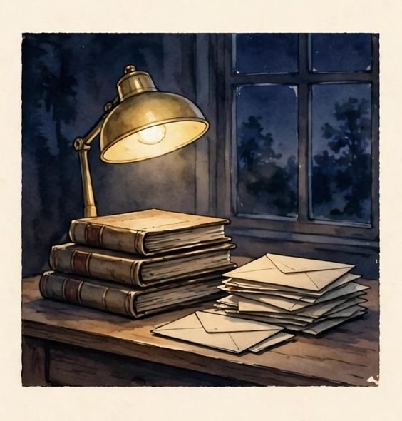
Второе чтение: старые записи, всплывающие, как обломки после грозы, — богаче.
Перечитывание — второй улов, и это не метафора, натянутая ради элегантности: во второй раз действительно ловится больше, чем в первый. Первый улов берёт то, что предлагает утро, — сцены, предложение, погоду. Второй улов, взятый на расстоянии месяцев или лет, берёт то, что может развить только расстояние: видимые серии, повторяющееся место посреди ремонта, сон об экзамене, держащий встречу, о которой хранитель ещё не заметил, что он её держал, сообщение марта, прибывающее видимо по своему июньскому адресу. Глубочайшие швы книги невидимы изнутри любой отдельной записи; это геология, которую обследует только перечитывание.
Дом назначает второй улов так, как назначает всё, что ценит: по сезону, а не по настроению. Четыре раза в год, на повороте, который назовёт одиннадцатый шаг, хранитель читает записи четверти насквозь, карандаш в руке, отмечая повторения и доставки. Ежегодное перечитывание — весь год, за один присест, в конце года, — продвинутая форма, и хранители описывают её в выражениях, которые канцелярия обычно редактирует ради трезвости. Неотредактированный, консенсус таков: это лучшая книга, которой владеет хранитель, и они написали её во сне, и её нельзя купить.
Перечитывание также разряжает последний долг книги перед забытыми. Записи, которые при написании ничего не значили, — ящик несопоставленных фрагментов, который накапливает каждый хранитель, — иногда ударяют, годы спустя, с силой сообщений, наконец доставленных по правильному адресу: сон был ранним, а не бессмысленным. Дом заводит это под обычные операции хорошей записи. Первый улов хранит ночь. Второй улов хранит всю жизнь хранителя от того, чтобы её неправильно прочитали как серию несвязанных ночей.
71Книги переживают ночи, которые хранят
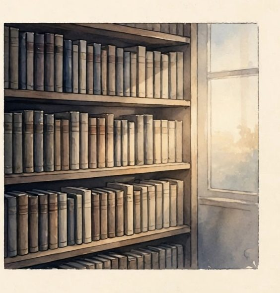
Переплетённые тома на полке: ночи, переживающие себя по порядку.
Книги переживают ночи, которые хранят, и факт заслуживает собственной комнаты, потому что это далёкий горизонт практики — причина, по которой дом вообще возится с корешками, дословностями и планами. Ночь — самая скоропортящаяся вещь, которой владеет человек: незаписанная, она ушла до завтрака и невосстановима никакой властью на земле. Записанная, она входит в малый класс вещей, которые могут быть унаследованы, с которыми можно консультироваться и спорить. Хранители умирают; их книги находят люди, которые никогда не знали их почерка, и читают — канцелярия получала письма — как депеши из страны, которую читатель тоже посетит сегодня ночью, без карты, если не начнёт одну.
Дом выводит практическое заключение без грандиозности: храните книги так, как хранили бы купчие. Одна полка, по порядку, сухо. Не рассеивайте серию по устройствам и десятилетиям и оборотам других книг. Порванный ряд книг — береговая линия с необследованной серединой, и будущий читатель — обычно хранитель в семьдесят, делающий перечитывание жизни, — проклянёт пробелы со свободой, которую нынешнему хранителю следует принять лично и заранее.
И есть собственный интерес поместья, объявленный открыто: этот дом — архивная контора по уставу. Его страницы — аргумент, что ночь стоит того, чтобы её заводить в дела. Полка книг каждого хранителя — аргумент, доказанный в частном издании, и дом доволен — более чем доволен, — чтобы доказательство оставалось частным, на хранении у единственного читателя, для которого оно когда-либо печаталось.
72Почерк хранителя
Зал хранения закрывается почерком хранителя, который канцелярия наблюдала меняющимся по полкам представленных записей, как вторая, молчаливая книга, бегущая под первой. Есть ученическая рука первого года — крупная, срочная, перепунктуированная, почерк человека, всё ещё боящегося, что сон ускользнёт между строк. Есть рабочая рука средних лет: мельче, быстрее, с размножающимися сокращениями (любимцы дома — частные знаки для повторяющихся мест, которые эволюционируют в настоящие картографические символы). И есть поздняя рука, медленнее и проще, которая пишет меньше на сон и ничего не пропускает.
Рука также докладывает утра честно так, как слова натренированы не делать: запись каракулями у края страницы — грозовая ночь или ночь болезни, датируемая одним её почерком; чистая копия отдохнувшей рукой — праздник. Хранителям при перечитывании советуется читать руку как часть текста. Это погодная отметка, которую хранитель не мог подделать, внесённая бессознательно в начале каждого доклада, — собственное состояние станции, залогированное самим инструментом.
Никакой инструкции не следует, на этот раз; зал просто вверяет феномен вниманию хранителя в следующий раз, когда книга будет открыта. Практика, которая меняет почерк своего хранителя, достигла уровня ремесла. Залы впереди — возвращений, гроз, двенадцати шагов — суть продвинутая работа ремесла, и они предполагают хранителя, чья рука уже, в лучшем смысле, не вполне его собственная.
73Возвращение намеренно
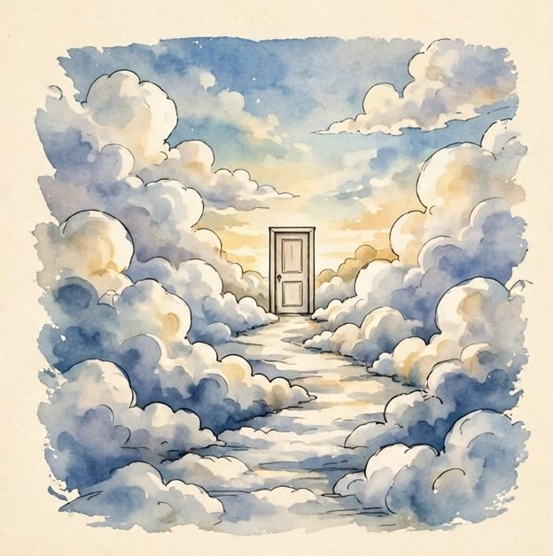
Путь обратно внутрь, обследованный при дневном свете: дверь, отмеченная и ненасильственная.
Возвращение намеренно — продвинутое искусство ремесла и самое спорное: намеренная попытка вновь войти в сон — то же место, та же компания, незаконченное поручение — и продолжить его. Дом учит ему под строгими цветами. Это навык внимания, непрерывный со всем, что тренирует книга, и это не сила, не право и не надёжная машина. Иногда дверь открывается. Чаще она не открывается, и зал впереди интересуется неудачами так же, как успехами, потому что неудачи, честно записанные, суть место, где обследуется истинная форма приёма.
Фундамент — книга, и зал её предполагает: возвращения запускаются из записей. Хранитель, который не может указать на записанное предложение — пирс, устой моста третьего зала, — не возвращается в сон, а импровизирует новый и неправильно его подписывает. Это может быть приятно; это не ремесло. Ремесло начинается с точной записи того, где сон остановился, перечитанной, пока место снова не встанет в уме с освещённой мебелью, и только тогда унесённой в постель как вопрос.
Установите ожидание прежде, чем отправляться, как дом устанавливает все свои ожидания: в записях намеренное возвращение удаётся узнаваемо, пожалуй, один раз из нескольких, и преображает сон так же часто, как возобновляет его. Хранитель покупает лотерейный билет вниманием, а не железнодорожный билет деньгами. Что делает покупку рациональной — цена: вечер перечитывания, отправленный вопрос, — и утешение, которое реально: даже неудавшиеся возвращения углубляют атлас. Дверь, которая не откроется, всё ещё дверь, чьё положение хранитель теперь знает.
74Дверь, которую вы оставляете приоткрытой
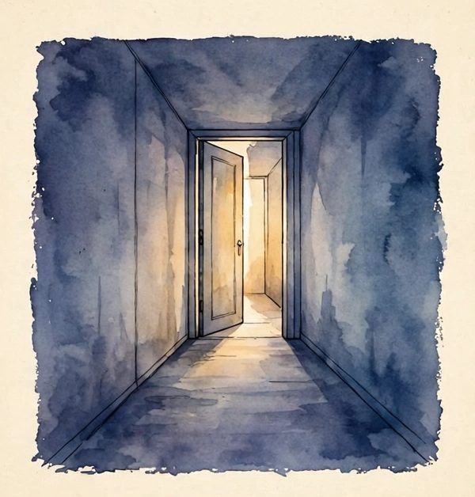
Дверь в конце коридора, оставленная открытой ровно на ширину одного сквозняка.
Первый приём — самый малый: оставьте дверь приоткрытой. В ночь, когда сон оборвался, — или в любую ночь, когда хранитель намерен вернуться, — последняя запись в книге пишется как открытие, а не как сводка: незаконченное предложение, оставленное незаконченным на странице, следующий миг сцены, поставленный так, как сон его оставил, посреди жеста. Затем книга закрывается без заключения. Устройство, по общему признанию, театрально. Дом защищает его как инженерию: уму, который по профессии наводит порядок в свободных концах, вручают свободный конец его собственным почерком на границе сна, и он принимается за него ночью с трудолюбием делопроизводителя, который не может вынести открытого дела.
Доклады хранителей делятся честно. Значительное меньшинство просыпается с продолженным сном, иногда с самого жеста. Большинство просыпается с чем-то смежным — то же место с другой двери, та же компания на другом поручении, — что дом считает частичной доставкой и вносит без разочарования. А некоторые просыпаются ни с чем и вносят и это, дверь была честной попыткой. Цена приёма — одно ненаписанное заключение; его итоги ведутся в той же книге, что всё остальное, где попытки и исходы уравновешиваются на протяжении сезона.
Чем приоткрытая дверь никогда не должна становиться — так это требованием. Сон ничего не должен хранителю, и хранитель, который ложится спать, обиженный на неоткрытую дверь, проснётся с обидой, развёрнутой в грозу, — у восьмого зала есть сводки погоды. Оставляйте дверь приоткрытой так, как оставляют свет для путешественника, который может не прийти: как гостеприимство, а не контракт. Ночь — гость с собственными дорогами. Всё искусство дома — быть стоящим посещения.
75Репетиция сна днём
Второй приём работает днём и есть фундаментальное упражнение зала: репетиция сна. Хранитель выбирает место — из книги, по имени — и проходит его наяву, в воображении, в темпе первоначального сна: лестница повёрнута, зал пересечён, дверь приближена, с мебелью, к которой относятся внимательно в порядке, в котором её представляет маршрут. Десять неторопливых минут. Репетиция — не визуализация, как её продаёт полка самосовершенствования; ничто не манифестируется. Это съёмка. Хранитель освежает метки на дороге, по которой намерен путешествовать, ровно как гаванский лоцман освежает фарватер, прохаживаясь по береговым картам перед сезоном.
У репетиции есть задокументированный эффект, которому дом доверяет, потому что он прозаичен: она делает место узнаваемым изнутри сна. Осознанный миг следующих комнат — знать, что вы спите, пока вы спите, — прибывает, в записях, чаще всего у репетированной вехи: хранитель поворачивает за репетированный угол во сне, и знакомость делает то, что знакомость делает в бодрствующей жизни на немаркированной дороге. Она объявляет позицию. Я был здесь; я знаю это место наяву; следовательно — собственная логика сна завершает шаг — я вижу сон.
Выбор места для репетиции следует атласу: где-нибудь повторяющееся, хорошо обставленное и эмоционально нейтральное, если книга держит такой порт. Грозовые места и дома умерших — не репетиционные площадки для начинающих, не из суеверия, а из мореходства: лоцман изучает берег в хорошую погоду. Продвинутый хранитель может репетировать где угодно. Курс дома устроен, как устроены все его курсы, от гавани наружу.
Канцелярия „Ловец снов"
Одна канцелярия получает всю корреспонденцию этого дома — вопросы, поправки, ночные доклады с ваших собственных дорог. Она читается в порядке поступления. Канцелярия не даёт медицинских и духовных советов; она содержит дом.
76Осознанное ремесло без мистики
Осознанность в сапогах: лампа, веха, удержанная голова.
Осознанное сновидение — знать внутри сна, что это сон, — прибывает в этот зал, лишённое двух костюмов, которые оно обычно носит: мистического и развлекательного. Дом обращается с ним как с ремеслом: состояние внимания, тренируемое как правило чайника, полезное для конкретных целей возвращения и продолжения и имеющее не больше космического значения, чем хорошее чувство направления. Хранители, которые его достигают, не докладывают откровений. Они докладывают нечто лучшее: способность, пока сон ещё идёт, оглядываться в нём намеренно, идти к незаконченному поручению, а не от него, и помнить утром с разрешением, которого обычный улов никогда не достигает.
Скептицизм дома о литературе записан, чтобы хранитель не был ею атакован позже: осознанное состояние не вручает никакой власти. Толкования осознанного сновидящего всё ещё завтраковые изделия; голоса осознанного сна всё ещё труппа, теперь слышимая яснее. Осознанность улучшает запись, а не метафизику. У канцелярии есть постоянная фраза для этого различия, употребляемая в её переписке годами: лампа ярче; страна — та же страна.
То, чему дом учит, поэтому скромно и последовательно: сначала распознавание (следующая комната), потом руление (комната после неё), и всё это подчинено книге, которая остаётся старшим инструментом. Осознанная ночь, незаписанная, — блестящий слух к субботе. Осознанная ночь, внесённая, — её вехи, её точный миг распознавания, её руление и её неудачи, — есть съёмочный документ, который улучшает каждую последующую попытку. Ремесло — в книге. Состояние — только погода, в которой оно практикуется.
77Знать, что вы спите, пока вы спите
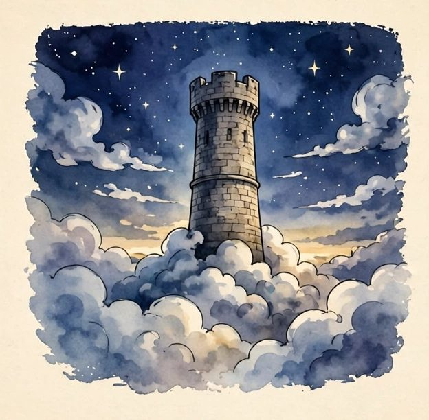
Миг распознавания: веха, свет, верное знание.
Знать, что вы спите, пока вы спите, начинается, в записях, почти всегда одинаково: нечто во сне распознаётся. Не выводится — распознаётся, как распознаётся лицо. Репетированная лестница, дверь, открывающаяся в неверный год, часы, дурно себя ведущие в экзаменационном зале: веха срабатывает на знание целиком, и на удержанное дыхание сновидящий стоит в сцене с двойным гражданством, внутри неё и осознавая её, в то время как сон — это часть, в которую новички никогда не верят, — продолжается вокруг них, невозмущённый, как пьеса, чей исполнитель главной роли тихо заметил публику, не останавливая спектакля.
Дом тренирует распознавание собственными материалами книги. Хранитель извлекает из сезона записей свои личные аномалии — вещи, которые его сны надёжно делают, а бодрствующая жизнь нет: текст, который не остаётся прочитанным, выключатели света, отказывающиеся от своей должности, полёт, доступный по запросу. Три-четыре такие метки, репетируемые днём, пока они не станут рефлексами, составляют испытательный набор хранителя. Во сне, у третьих невозможных часов, рефлекс срабатывает: это погода места, в котором я нахожусь, и я знаю его имя.
Статистика неудач ведётся честно: распознавание, даже у тренированных хранителей, — друг хорошей погоды: еженедельно в хороший сезон, отсутствующее четверть в плохой, и всегда способное растворить сцену по прибытии, сон лопается, как пузырь, при прикосновении знания. Комната через одну подхватывает задачу устойчивости. Здесь дом закрепляет только доктрину: распознавание — инструмент землемера, выращенный из записей, и его годичные кольца — в книге, где первая несомненная запись — «я знал, и сон устоял» — есть дата, которую хранители помнят, как день рождения.
78Малые рули, лёгкие руки
Руление сном, однажды распознанным, делается малыми рулями и лёгкими руками, и заголовок комнаты — всё руководство в шести словах. Инстинкт новичка — румпель, дёрнутый на борт: лететь, сейчас; вызвать человека, сейчас; заставить сцену повиноваться. Записи таких попыток равномерно коротки — сон, с которым обошлись грубо, делает то, что вода делает под захлопнутым рулём, и разваливается. Опытный хранитель рулит так, как рулят лодкой в попутном море: предложение в миг, когда сцена уже поворачивается, дверь, выбранная, а не стена, убранная, вопрос, заданный труппе, вместо приказа, изданного погоде.
Приём в деталях почти разочаровывающе социален. Осознанный хранитель ведёт себя во сне так, как хорошо воспитанный путешественник ведёт себя в иностранном городе: смотрит, спрашивает, следует за интересной улицей, принимает исправления маршрута. Намерения держатся как направления, а не как пункты назначения — к гавани, к незаконченному поручению, — и сну позволено выбирать улицы. Прибытия этим методом медленнее и, по свидетельству книги, действительны: поручение достигается, в форме, которую бодрствующий ум не написал бы в сценарии и не мог бы улучшить.
А правило лёгких рук имеет этический край, который дом не пропускает. Труппа сна, его места, его умершие — в осознанности они становятся обрабатываемыми, и хранителю напоминают, что вежливость ремесла всё ещё применима: ночь — собственный ум хранителя, и манеры, практикуемые на нём, суть манеры, практикуемые на себе. Рулите к; не командуйте. Сны, которые продолжаются лучше всего по всему архиву возвращений, — те, в которые их хранители вошли как гости.
79Проснуться внутри сна — не значит победить
Не трофей: хранитель, бодрствующий внутри сна, всё ещё делает заметки.
Проснуться внутри сна — не значит победить, и комната существует, потому что литература всё оценивает это как победу — над сном, над бессознательным, над другими спящими, — в выражениях, которые портят практику в её корне. В этом ремесле нет противника. Сон не побеждается тем, что его познали; он, если угодно, завершается. Хранитель, который просыпается внутри сна, не покорил ночь, а присоединился к ней, и присоединение — достижение, целое и достаточное. Табло — для бодрствующих соревнований, которых хранитель получает вполне достаточно днём.
Порча показывается в записях как узнаваемая дуга карьеры: хранитель, который осознанно видит сны ради покорения, начинает обращаться с неосознанными ночами как с потерями, затем с обычными снами как с неудачами, затем с книгой как с турнирной таблицей — и сеть, сплетённая для внимания, перевешивается как стена трофеев. В течение сезона практика рушится, потому что ремесло, переопределённое как состязание, всегда в конце концов будет проиграно, а проигранные состязания бросают. Дом перехватывает дугу здесь, в зале, где она начинается: состояние — инструмент. Инструменты берут и кладут. Никто не выигрывает молоток.
То, что осознанный хранитель выигрывает, — слово разрешено один раз, в этом предложении, в его бухгалтерском смысле, — это разрешение: записи остроты, которая делает атлас измеримо лучше, возвращения, которые действительно прибывают, грозы (следующий зал близко), внутри которых можно стоять, наяву, с удержанной головой. Это жалованье, а не трофеи. Канцелярия платит их охотно и не держит турнирной таблицы, а хранитель, который хочет одну, отсылается, с подлинным сочувствием, к экзаменам третьего зала, где ночь задаст ему один.
80Инкубация: вопрос, отправленный в постель
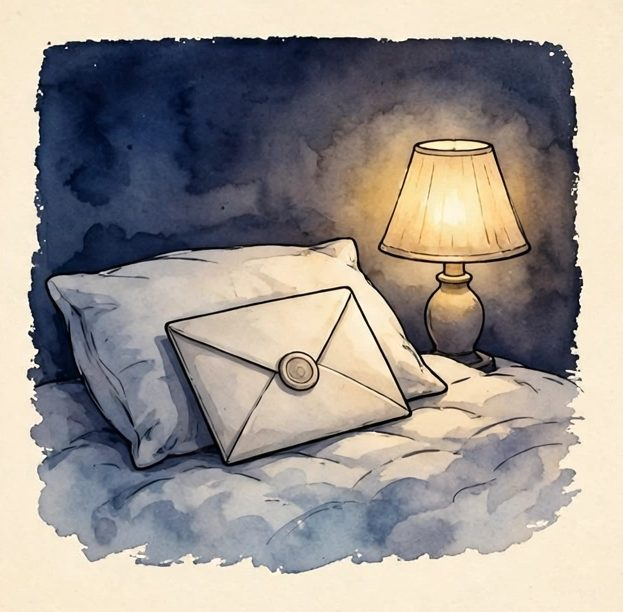
Вопрос, написанный и отправленный в постель, как письмо в ночную контору.
Инкубация — старейший приём зала и самый формальный: вопрос, составленный наяву и отправленный в постель. Хранитель пишет его — в книге, столькими словами, прямо: не «что мне делать», а конкретную, обозреваемую форму, на которой дом настаивает, вопрос с местом в нём, или лицом, или дверью. Затем книга закрывается, вопрос оставляется на границе, как письмо в ночной конторе, и хранитель спит, не надзирая за доставкой. Приём — старший брат приоткрытой двери: где дверь продолжает сон, инкубация заказывает его.
Записи оправдывают формальность. Вопросы, отправленные в надлежащей форме — письменные, конкретные, единичные, — получают доставки с частотой, которую канцелярия не будет количественно определять (дом не публикует статистики, которую не может проверить аудитом), но которую хранители через столетие книг описывают с той же удивлённой благодарностью. Доставки, когда они приходят, приходят как сны на территории вопроса: место появляется, лицо распределено, дверь найдена — и сон продолжает быть о вопросе так, как сны бывают о вещах: косвенно, в погоде и мебели, а не в утверждениях. Хранитель, ожидающий меморандума, просыпается разочарованным. Хранитель, ожидающий сцены, просыпается за работой.
Два правила закрывают комнату. Отправляйте один вопрос за раз: ночная контора мала, и хранитель, который отправляет пять вопросов, получает один сон и четыре обиды. И вносите доставку дословно прежде, чем её толковать, — правило «сообщения, а не значения» четвёртого зала применимо с двойной силой к заказанному грузу. Инкубация, практикуемая так, — самое близкое к переписке, что есть в ремесле: письма наружу в сумерках, ответы к утренней почте, весь обмен, заведённый в одну книгу, одной рукой, на протяжении лет.
81Когда сон отказывается продолжаться
Иногда сон отказывается продолжаться, и отказ заслуживает комнаты, потому что он прибывает в развитии хранителя в точности, когда приёмы начинают работать, — дверь найдена, место отрепетировано, вопрос отправлен, — а ночь, впустив хранителя досюда, закрывает коридор за этим. Сон возобновляется до площадки и останавливается. Труппа присутствует, но занята в другом месте. Улица поручения ремонтируется собственным дорожным отделом ночи. Записи зовут это закрытым сезоном конкретной дороги, и они единодушны насчёт его значения: никакого, которое можно извлечь. Дороги закрываются. Движение идёт в обход, маршрутами, которых атлас ещё не нарисовал.
Ошибка хранителя, и её совершает каждый хранитель однажды, — обращаться с отказом как с запертой дверью в личном смысле: отклонение, суждение о достойности попытки. Дом поправляет своей обычной сантехникой: закрытая дорога — информация о дороге, а не о путешественнике. Материал сна может быть исчерпан — поручение, неведомо хранителю, завершено. Сезон может быть неверным — возвращения, предпринятые в грозовую четверть, терпят неудачу с частотой, которую книги отмечают без удивления. Или маршрут просто был заменён: ночь перестроила свою географию в промежутке, как она это делает.
Что дом предписывает — гаванский ответ на закрытый фарватер: отметьте его, датируйте его и используйте другой. Атлас велик; серий много; практика длинна. Хранители, которые могут закрыть папку, не закрывая ремесла, обнаруживают, часто в течение года, что дорога открылась в своё время вновь — или что её движение тихо перешло на лучшую дорогу, и отказ был способом ночи подать смену адреса. Любой исход вносится той же ручкой. Отказ, записанный честно, — успешный исход приёма обращать внимание.
82Продолжения, которые честно терпят неудачу
Попытка, погода, честный результат: неудавшееся возвращение, хорошо залогированное.
Продолжения терпят неудачу, и эта комната держит их почётный список. Возвращение, которое прибыло в правильное место с неверным десятилетием в нём. Инкубация, на которую ответил сон о вопросе совершенно другого человека, доставленный с уверенностью. Осознанное распознавание, которое удержалось на четыре секунды, — достаточно долго, чтобы прочитать станционные часы, что хранитель всё ещё описывает как триумф, и дом, по размышлении, соглашается. Дверь, оставленная приоткрытой на месяц, через которую пришло в конце концов сновидение о двери, оставленной приоткрытой. Архив богат такими записями, и канцелярия читает их с большей нежностью, чем успехи, потому что неудачи суть место, где наносятся на карту настоящие границы ремесла.
У записи о неудаче есть форма, и форма — то, что отделяет ремесло от анекдота. Попытка: приём, который использовали, изложенный прямо. Погода: сезон, состояние хранителя, собственный климат сна. Результат: что действительно случилось, без лака, — включая, особенно, комедии, которые хранители испытывают искушение отредактировать вон и которые дом считает данными первого качества. Неудача, внесённая по форме, может быть изучена; сезонный обзор читает неудачи года как единый документ, и закономерности в них — приёмы, которые терпят неудачу зимой, двери, которые терпят неудачу после горя, — суть продвинутая учебная программа, написанная ночью, бесплатно.
И есть последняя запись в преамбуле почётного списка, постоянное утешение дома, предлагаемое без следа продажничества: неудавшееся продолжение всё же произвело запись, а запись всё же произвела хранителя, который был у канцелярии утром, внимающий. В ремесле, чья вся субстанция — внимание, попытка, которая терпит неудачу, есть практика, преуспевающая в своей единственной не подлежащей обсуждению задаче.
83Серия возобновляется: подхватить старый сон
Старая серия, открывающаяся вновь: состав собран, поручение всё ещё тёплое.
Счастливейший феномен в архиве — возобновлённая серия: страна снов, брошенная посреди поручения годы назад — её папка закрыта отказом, или жизнью, или переездом дома, — открывающаяся снова одной обычной ночью, как будто промежуток был одной долгой рекламной паузой. Место сохранено. Труппа является. Поручение ровно там, где его оставили, вплоть до предмета в руке сновидящего. Хранители описывают эти ночи со сдержанностью, которая никого не обманывает; записи становятся длинными, почерк наклоняется, а погодная отметка всегда, что бы сон ни содержал, какой-нибудь частный знак для «ясно».
Вклад дома в феномен — только бухгалтерия, но это существенная часть: возобновление узнаваемо только на фоне закрытой папки. Хранитель, который держал записи серии — датированные, перекрёстно ссылочные, её последнее состояние записанным, — может принять возобновление как то, что оно есть: доставку, годами бывшую в пути. Хранитель, который позволил папке раствориться в общей памяти, принимает ту же ночь как дежавю и приятную странность и теряет груз. Всё в этом ремесле таково. Чудеса общи; редко то архивное бюро, которое может их удостоверить.
Почему серия возобновляется — вопрос, от которого дом отказывается, не имея свидетельств, которые он подписал бы. Книги отмечают корреляции, не строя на них: возвращения хранителя в старый город, в старое ремесло, в комнату, где держалась книга тех лет. Канцелярия заводит это под собственную бухгалтерию ночи, которую описал зал Бегущей и этот зал не улучшает. Часть хранителя не изменена тайной: ведите папки, держите канцелярию, и когда старая страна откроет свои ворота в три утра после одиннадцати лет, будьте там с ручкой, которая знает её имя.
84Практика — сезон, а не ночь
Зал продолжения закрывается своей календарной доктриной: практика — сезон, а не ночь. Каждый приём в нём — приоткрытая дверь, репетиция, рули, инкубация — сезонный инструмент, который нужно судить по четверти попыток и бросать или принимать по свидетельству серии, никогда по вердикту одной попытки. Испытание одной ночью — характерная ошибка новичка и любимая единица рынка, потому что практика, судимая каждую ночь, будет колебаться между триумфом и отчаянием ровно с той частотой, которая продаёт замены.
Сезон, напротив, — истинный атом времени ремесла. На протяжении сезона погода усредняется, приёмы показывают свои частоты, собственные изменения хранителя — дома, здоровья, горя и восстановления — движутся через запись, как фронты. Одиннадцатый шаг оформит сезонный обзор, но доктрина принадлежит сюда, в конец продвинутого зала: никаких вердиктов до того, как сезон повернётся. Хранитель, который может держать приём в подвешенном состоянии три месяца, внося попытки и исходы той же ровной рукой, выучил самый трудный навык книги, который не осознанность, а терпение с данными.
А сезоны прощают то, что ночи обвиняют. Зима неудавшихся возвращений есть, по весеннему обзору, зима хорошо хранимых попыток в тяжёлую погоду — те же записи, прочитанные на правильном расстоянии. Дом не знает другой алхимии и не предлагает другой: расстояние, даты и отказ позволить одной ночи — хорошей или плохой — выдавать себя за правду о практике, которая измеряется, как реки сестринского дома, сезонами или никак.
85Ненастье — всё ещё погода
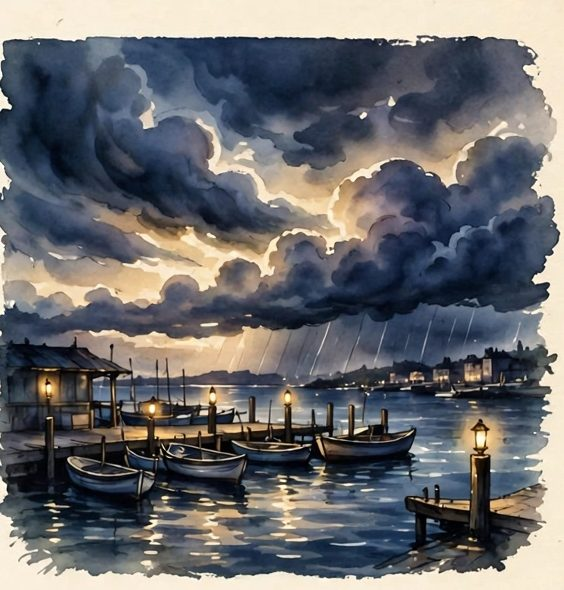
Грозовой фронт над гаванью снов: сурово, действительно и не лично.
Восьмой зал открывает грозовые двери, и его первая доктрина — та, на которой стоит весь зал: ненастье — всё ещё погода. Кошмар, сон о падении, погоня — это не вторжения в страну ночи извне её, не сбои системы и не сообщения в коде наказания. Это климат ума, который перерабатывает опасность, утрату и беспомощность в единственной мастерской, открытой у него в три часа утра. Хранитель, который впитал доктрину погоды третьего зала, уже держит ключ: гроза — доклад, а доклады заводят, а не боятся, — вернее, страх есть часть доклада, внесённая в своём истинном размере, и заведение есть то, что хранитель к нему добавляет.
Дом не будет умалять погоду. Грозовые сны могут быть подлинно ужасны — записи содержат заметки, которые их хранители написали десятилетия назад при включённой лампе и с нетвёрдой рукой, всё ещё читаемые во всех смыслах. Спокойствие зала — не спокойствие отмахивания. Это спокойствие гаванской службы, которая уважает грозы именно тем, что имеет для них процедуры: что делать в первые пять минут, как письмо охлаждает воду, когда узор гроз перестаёт быть погодой и становится делом для других властей, чем этот дом. Комнаты впереди берут их по порядку.
От чего зал отказывается — так это от двух популярных инфляций. Кошмар — не знамение: правило восемнадцатой комнаты держится в тяжёлую погоду ровно как в хорошую. И он не враг — заголовок следующей комнаты и более трудная доктрина. Хранитель, воюющий с погодой собственной ночи, будет проигрывать каждую ночь и не выигрывать ничего. Мореходство дома старше его метафор: с грозой в море не воюют. Её проходят, её логируют и изучают её сезон.
86Кошмар — это сон, а не враг
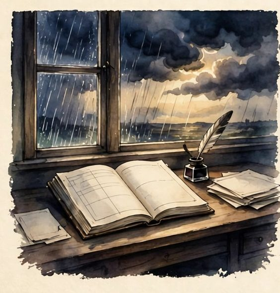
Грозовой сон у канцелярии, записываемый в запись, как любой другой.
Кошмар — это сон, а не враг, и подчинение имеет значение: сон — сделанный той же ночной сменой, из того же запаса, под тем же управлением, что гаванские огни и лётная погода. Хранитель, который заводит кошмар как вражеского комбатанта, уже совершил ошибку, которой гроза питается, потому что враждебность требует бдительности, бдительность требует бодрствования, а ум в три часа утра, поднятый по тревоге против собственных произведений, произведёт врага следующей ночи простым актом его ожидания перед сном. Контрдоктрина дома канцелярская: кошмар — запись. Он получает дату, предложение двери, погодную отметку. Его ужас записывается в своём истинном размере — который велик, — а его онтологический статус записывается рядом с ужасом: сон. Один из наших. Заведён.
Это не бравада; записи практичны насчёт того, что заведение делает и чего не делает. Оно не предотвращает следующую грозу. Оно, измеримо в собственном свидетельстве хранителей, укорачивает аренду грозы на утро: записанный кошмар — кошмар, который был перемещён из тела на страницу, и тело, спрошенное после за чаем, докладывает различие самыми прямыми словами — руки перестают его репетировать. Сон был погодой; запись — показание барометра; хранитель, который читает барометр, больше не стоит под дождём, чтобы сделать измерение.
Дом добавляет свой единственный абсолют для зала, который следует держать рядом с правилом о детях: кошмар никогда, в этих комнатах, не свидетельство — не о будущем, не о характере сновидящего, не о людях, в нём распределённых. Он свидетельство о переработке ночи, то есть о погоде. Хранители, которым нужно, чтобы он был свидетельством о чём-то большем, отсылаются, любезно и без спора, вон из этого зала и к более прямым властям, которые назовёт девяносто четвёртая комната.
87Сны о падении и тревога тела
Сон о падении — самая физическая погода ночи, и дом заводит его под телом прежде ума. Ощущение — ступени, которой нет, вздох троса лифта, долгое падение через архитектуру сна — прибывает с полной телесной тревогой: вздрог, пойманное дыхание, сердце в двойном темпе в тихой комнате. Наука сна, которую дом цитирует так, как цитирует все внешние власти, — кратко и не заимствуя их пальто, — связывает острейшую его форму, рывок падения на краю сна, с собственными системами тела, сворачивающимися на ночь и иногда дающими сбой в передаче. Перевод дома для своих хранителей: иногда тревога — механизм ворот, а не страна за воротами.
Внутри сна у долгого сна о падении свой характер, стоящий записей. Хранители падают через свою повторяющуюся географию — мимо площадок лестницы, мимо этажей дома, в котором никогда не жили, — и книги отмечают, с последовательностью, которой канцелярия доверяет, что падение обычно заканчивается монтажом, а не ударом: срез, пробуждение, смена сцены, о которой ночь договорилась в последнее мгновение. Сон, который приземляется, достаточно редок, чтобы его отмечали звездой, когда он случается, и то, во что он приземляется, говорят записи, — почти всегда другой сон.
Ремесленный ответ — стандартный для зала, уточнённый: запись о падении пишется с включённым телом — где тревога чувствовалась, как прошло пробуждение, погодная отметка удвоена. На протяжении серии сон о падении становится одним из самых честных инструментов книги, сейсмографом нагрузки хранителя: он держит, в записях, превосходное время с неделями, когда бодрствующая жизнь сама коротка на поручни. Наблюдение, не толкование. Сейсмограф не просят объяснять землетрясения и не винят за них тоже.
88Погоня, зубы, запертая дверь
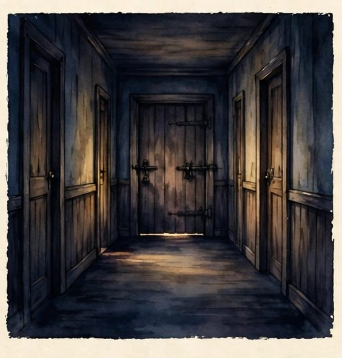
Классический грозовой набор: коридор, преследователь, дверь, которая не откроется.
Бестиарий грозового зала короток, потому что репертуар ужаса ночи консервативен: погоня, зубы, запертая дверь. Погоня — преследуемый через повторяющуюся страну человеком, животным, погодой, неуточнённым «оно» — самая обычная гроза в архиве, и её записи делят физику: бег, который не выигрывает, земля, ведущая себя как гаванский ил, темп преследователя, подогнанный к темпу сновидящего с жестокостью инженерии, которой хранитель за канцелярией может восхищаться как сценическим мастерством. Сон сделан не плохо. Он сделан в точности так, чтобы быть неотвратимым, и изготовление есть данное.
Зубы — крошащиеся, шатающиеся, заполняющие рот, как гравий, — самая докладываемая малая гроза архива, пересекающая каждый возраст и береговую линию хранителя. Дом не предлагает их чтения; он отмечает их верность периодам давящего давления, в нескольких смыслах, которые бодрствующий рот подтверждает, и заводит их, как заводит всё, под погоду с превосходной посещаемостью. Запертая дверь завершает трио: сновидящий по неверную сторону единственной двери, которая имеет значение, ключ неверен, замок неверен, лица труппы, видимые через стекло, ведут себя обычно об этом. Хранители, которые хорошо знают сон о доме, узнают набор: это та же дверь, что всегда, в грозовом свете.
Суть бестиария — его краткость. Хранитель, которому угрожает то, что ощущается как частный, изобретательный ад, обнаруживает в записях стандартный репертуар, играемый каждым умом, который дом когда-либо заводил, — и открытие само по себе процедура: давление грозы падает по мере того, как падает её оригинальность. Худшая погода ночи производится массово. В производстве есть утешение, если хранитель принимает утешение способом дома: в том, чтобы быть, даже в три часа утра, гражданином населённой страны.
89Грозовые сны после тяжёлых дней
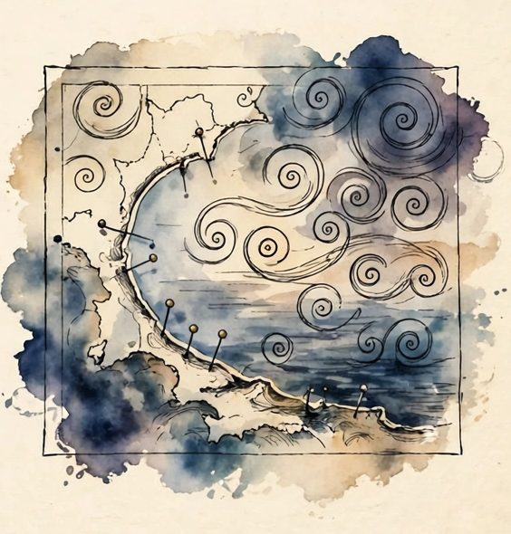
Грозовые следы, наложенные на тяжёлую неделю: фронты прибывают по расписанию.
Грозовые сны держат календарь тяжёлых дней с верностью, которую ни одному хранителю не нужно толковать. Ночь после разговора о диагнозе, ночь перед вердиктом, серия ночей в месяц, когда деньги потерпели неудачу, — книги прокладывают грозовые следы поперёк бодрствующей записи, как карты погоды над берегом, и соответствие слишком регулярно, чтобы быть чем-либо, кроме системы переработки, делающей свою громкую работу. Слово дома для этих гроз — самое простое в зале: это звук мастерской с большим заказом внутри. Заказ настоящий; звук — не значение заказа, а только его шум, и хранитель спит в стене мастерской.
Есть особенная милость, которую записи предлагают хранителям в тяжёлый сезон, и канцелярия передаёт её, потому что это самое запрашиваемое утешение зала: грозы в книгах характерно отстают от кризиса. Худшие ночи приходят не при ударе, а сразу после — когда бодрствующая стража впервые сворачивается и переработка начинается. Хранители, которые знают узор, перестают читать запоздалую грозу как второе бедствие и заводят её как первый признак того, что механизм снова работает. Барометр падает после того, как фронт прошёл дом. Так барометры устроены.
И грозовые следы заканчиваются. Дом может сказать это с полным весом своего архива, который не содержит ни одной постоянной грозы: сезоны ночных бурь, которые разрешаются на протяжении года записей в обычную погоду поручений и экзаменов, появления кошмара истончаются от ночных к ежемесячным к редкой записи со звездой. Хранитель посреди сезона не может видеть конца изнутри него — ни один хранитель никогда не мог, — и заимствует глаза архива на время. Для того архив и существует.
90Чем кошмар не является
Чем кошмар не является: комната — забор, а заборы в этом доме строятся тщательно и подписываются. Он не знамение — доктрина восемнадцатой комнаты, повторённая для тяжёлой погоды, где искушение сильнее всего и правило нужнее всего. Он не диагноз: ночь не имеет клинической власти, и грозовой сон не устанавливает ничего о здоровье сновидящего, на что отдохнувший ум должен был бы действовать за завтраком. Он не вердикт о людях, в нём распределённых, — правила труппы пятого зала держатся под огнём; коллега, который угрожал сновидящему в три часа ночи, заслуживает нормального утра. И он не призыв: ничто в грозовом сне не обязывает хранителя ни к какому действию, покупке, предупреждению или паломничеству вообще.
У забора есть вторая сторона, и дом столь же прям насчёт того, чем кошмар в количестве законно может быть: данное, которое стоит отнести профессионалу, — что есть дело следующих комнат, обработанное в конце зала прямым словом, которого оно заслуживает. Функция забора — держать категории от контрабанды друг в друга в три часа утра, когда таможенная служба хранителя слабее всего. Гроза — погода; узор гроз — запись; запись может стоить разговора с врачом. Каждое предложение — другая страна, и границы дома между ними — настоящая архитектура зала.
Хранителям предлагается заметить, что забор делает возможным на своей ближней стороне: свободу операций. Кошмар, который не знамение, не диагноз, не вердикт и не призыв, можно писать, сравнивать, проходить и заводить — обрабатывать, короче, всем ремеслом, которому эта книга учила, в полную силу, без статики ужаса о его значении. Гроза теряет свою вторую силу, которая никогда не была ветром. Это было толкование ветра, прибывающее прежде, чем хранитель закончил бояться. Забор держит толкование на границе до утра, к которому времени оно обычно подало на вход как нечто меньшее: запись с датой.
Канцелярия „Ловец снов"
Одна канцелярия получает всю корреспонденцию этого дома — вопросы, поправки, ночные доклады с ваших собственных дорог. Она читается в порядке поступления. Канцелярия не даёт медицинских и духовных советов; она содержит дом.
91Пробуждение из грозы: первые пять минут
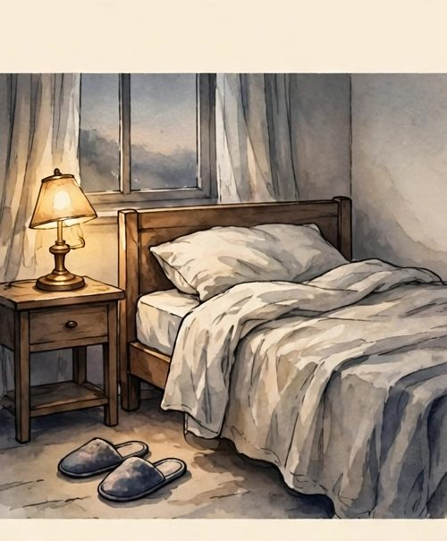
Первые пять минут после: лампа включена, ноги на полу, сама комната.
У пробуждения из грозы есть процедура, и она отмерена: первые пять минут. Протокол дома непретенциозен и полон. Лампу включить — свет — самый быстрый таможенник из существующих, и комната в свете лампы превосходит сон по юрисдикции. Ноги на пол, воду, если она близко, и собственные имя и адрес хранителя, сказанные в голове хранителя или вслух, если дом позволяет: бодрствующий мир, объявляющий себя заново, предмет за предметом, пока тело не заверит своё согласие. Тогда, и только тогда, книга. Грозовая запись, написанная внутри пяти минут, стоит трёх, написанных за завтраком, и причина — правило чайника в его грозовой форме: сон никогда не бывает читаемее, чем в первые минуты его собственной погоды ещё на хранителе.
То, что протокол исключает, значит столько же. Никакого обзора значения сна в эти пять минут — забор предыдущей комнаты в этот час не построен, и значения контрабандируют свободно. Никаких отправленных сообщений, никаких решений, записанных как обязательные, никакого пробуждения домохозяйства, чтобы доложить знамение, — список запретов грозового часа дома короток, потому что он абсолютен. Хранитель пишет, пьёт воду и принимает единственное решение, которое протокол разрешает: обратно спать или вставать. Оба почтенны. Записи не показывают преимущества ни одного сверх собственной конституции хранителя, и канцелярия отказывается, в этом, как во всех своих протоколах, улучшать хранителя.
Исполненные дважды, пять минут становятся рефлексом, и рефлекс — вся терапия зала, — слово употреблено вольно, и дом принимает вольность в этот раз, — поскольку гроза, встреченная процедурой, теряет вторую половину своей силы, которая есть беспомощный промежуток после неё. Хранители не перестают видеть грозы. Они перестают иметь час после грозы. Книга получает запись; утро получает своего хранителя обратно; ночь, будучи заведённой, возвращает комплимент, позволяя делу покоиться.
92Запись грозы охлаждает её
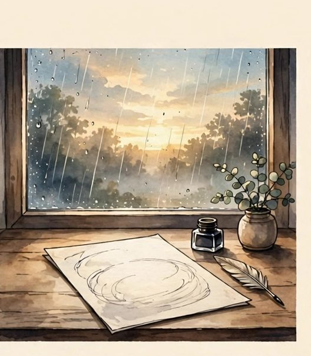
Чернила как охладитель: гроза, час спустя после записи, в половину своего размера.
Запись грозы охлаждает её, и дом, который не занимается механизмами, которые не может проверить, предлагает наблюдение с его свидетельством, а не с его теорией. Свидетельство — собственное двухколоночное показание хранителей, собранное по архиву: кошмар, как он чувствовался при пробуждении, описанный в полном размере; тот же кошмар, как он чувствовался час спустя после того, как его запись была написана, описанный снова, — и второе описание, с регулярностью, которую канцелярия перестала находить удивительной, меньше. Не сфальсифицировано, не ума́лено: меньше, как несомый вес меньше веса, под которым всё ещё стоят. Запись перемещает грозу из тела хранителя в книгу хранителя, а книгу, в отличие от тела, можно закрыть.
Кандидатные объяснения разрешены на полях, где этот дом держит все свои «может быть»: что описание навязывает последовательность, а последовательность — противоположность одновременности грозы, в которой всё ужасное происходило сразу и навсегда; что темп руки замедляет материал до скорости ходьбы, собственного темпа Бегущей, на которой ничто в этом поместье не неуправляемо; что названная вещь — погоня, зубы, дверь — снова присоединяется к бестиарию и теряет своё притязание быть беспрецедентной. Хранитель может держать любое объяснение, которое подходит, или никакое. Процедура не консультируется с объяснением, прежде чем работать.
Дом просит одну дисциплину в обмен на охладитель: грозовая запись пишется в истинном размере грозы, ни набитая, ни подрезанная. Охлаждение — свойство точности, а не усилия, — ума́ленная запись оставляет незаписанную часть в теле, где она продолжает излучать. Напишите её, как она была, со всей её погодой, а затем закройте книгу на всём этом. Грозовые записи архива, прочитанные годы спустя их спокойными авторами, — любимое свидетельство зала: ужас, ровной рукой, под датой, — море, вспомненное из гавани.
93Дети и грозовая погода
Дети и грозовая погода имеют собственную комнату, потому что взрослые протоколы предполагают хранителя, а ребёнок в два часа ночи — не хранитель, а гражданин, выброшенный на берег хранителя. Правила дома для берега коротки. Ребёнка принимают первым, а заводят позже: свет, присутствие, предметы бодрствующего мира, объявленные заново спокойным голосом, — комната, дом, родитель, утро идёт. Сон не допрашивают. Если ребёнок предлагает его, его слушают как историю, принесённую в обеих руках, и его не толкуют — единственный абсолют дома из комнаты детской погоды держится ночью ровно как за завтраком. Никаких значений детям об их снах не выдаётся. Никаких. Гроза — погода; ребёнку так и говорят, словами его размера, что имеет преимущество быть правдой.
Что хранитель может делать, для записей домохозяйства, — это отмечать факты ночи в собственной книге хранителя, на полях, которые дом для этого позволяет: дата, час, грубая форма грозы, если предложена, погода сезона домохозяйства. На протяжении детства такие поля составляют истинную грозовую карту семьи, и они полезны именно потому, что скучны: частота, сезон, медленное истончение по мере того, как проходят годы. Карта принадлежит хранителю, а не ребёнку, и её не читают вслух как диагноз — это журнал гавани малого берега, ведомый человеком на вахте.
А когда детские грозы — погода домохозяйства на долгий сезон — каждую ночь, скажем, или с бедствием, которое дневной свет не проясняет, — хранитель на территории следующей комнаты, и прямое слово дома применимо к семье ровно как к хранителю: это запись, которую стоит отнести профессионалу. Правила берега кончаются там, где запись говорит, что им следует. Утешение — должность хранителя; оценка — нет, и любовь дома к собственной компетентности останавливается, намеренно, у собственного забора.
94Когда тяжёлые ночи повторяются: прямое слово
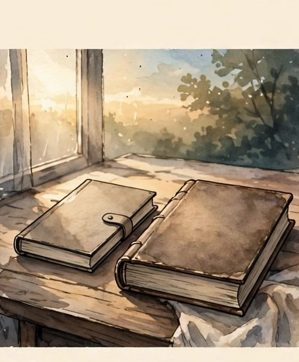
Книга приёмов рядом с книгой записей: запись, отнесённая в правильный кабинет.
Когда тяжёлые ночи повторяются — грозы каждую ночь неделями, сон, которого боятся перед сном, дни хранителя, сужающиеся вокруг ущерба ночи, — у дома есть прямое слово, и это самое важное предложение в зале: отнесите запись к врачу. Не к соннику, не к курсу, не к этой странице. К врачу, или в клинику сна, или к обычной первой двери собственной системы здравоохранения хранителя — дом не называет брендов и не держит любимцев. Повторяющиеся кошмары и сломанный сон — на прямой земле — медицинская территория так же часто, как чья-либо ещё, с причинами, которых книга не может видеть, и средствами, которых эта книга не держит на складе.
Утешение дома в том, чтобы так говорить, состоит в том, что инструкция ничего не стоит ремеслу. Книга — лучшая возможная вещь, которую можно пронести через ту дверь: датированная, честная, конкретная — сезон грозовых следов, который профессионал может прочитать за две минуты и который хранитель не мог бы иначе сообщить за час попыток вспомнить. Хранители, которые сходили на приём, докладывают, с последовательностью, которой канцелярия дорожит, что книга изменила разговор: от смутного несчастья, невоспроизводимого в консультационном кабинете, к записи, с формой, на которую два человека могли смотреть вместе.
А практика продолжается рядом, несмущённо: ловец висит, канцелярия держит свой час, записи идут вниз — теперь включая, в их сезон, приём и его исходы, внесённые, как поворот любой погодной системы. Дом — архивное бюро, а не соперничающая власть, и у его устава нет пункта, который он ценил бы больше этого. Дом, который знает границу своей компетентности, держит своих посетителей в большей безопасности, чем дом, который претендует на всю карту. Забор грозового зала, заметит гость, был построен с воротами в нём, и ворота — эта комната.
95Ловец в грозовой сезон
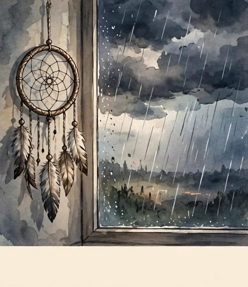
Ловец в грозовую четверть: повешен прямо, проверяется еженедельно, невиноват.
Ловец в грозовой сезон получает собственную комнату, потому что хранители в плохую четверть надёжно поворачиваются против инструмента: он должен был — предложение заканчивает себя всем, что обещала сувенирная торговля. Ответ дома стоит с пятой комнаты: он не должен был ничего останавливать; это сеть, и грозы проходят сквозь неё по замыслу и ловятся — в единственном смысле, который слово когда-либо здесь имело, — у утренней канцелярии. Ловец, который «потерпел неудачу» в грозовой сезон, обычно сделал противоположное: удержал своего хранителя пишущим в погоду, в которую неспящий без инструмента просто страдает и забывает, страдая снова следующей ночью с папкой не толще.
Обслуживание грозового сезона тем не менее действительно, и это ободная работа: обруч проверен и выпрямлен, запас пустых страниц книги подтверждён, пятиминутная лампа на своём месте. Дом добавляет одну собственную практику грозового сезона, которую хранители оценивают выше всех прочих в зале: грозовой записи позволено быть всей записью. Никакой тонкости предложения двери, никакого плана, никакой погодной поэзии — гроза, дата, пробуждение, сделано. Стандарты ремесла спроектированы для хорошей погоды; грозовой стандарт — одна строка: это было записано. Книги, которые переживают свои грозовые четверти по этому стандарту, возобновляют полное одеяние весной, как будто ничего не случилось, что к тому времени почти правда.
А сезон поворачивается — единственный непрерывный закон архива, изложенный в конце зала, где хранитель нуждается в нём больше всего. Долг ловца в промежутке — висеть там, прямо, на границе страны кровати, будучи сетью: обещанием взглянуть снова, удержанным в худшую погоду, в которую оно когда-либо будет удержано. Это всё, для чего он когда-либо был. В грозовой сезон этого достаточно.
96Утро приходит всё равно
Грозовой зал закрывается на факте, от которого весь его аргумент тихо зависел: утро приходит всё равно. Оно приходит после хороших ночей и дурных, после осознанных успехов и отказанных дверей, с тем же чайником и тем же светом, предлагая те же пятнадцать защищённых минут тому, кто там, чтобы их взять. Оптимизм ремесла целиком процедурен, и он хранится в этом прямом повторении: никакая ночь, как бы она ни была выдержана, не может предотвратить открытие канцелярии. Книга на тумбочке. Ручка в книге. Сторона хранителя всей обширной системы длиной в пять минут, и она доступна снова завтра независимо от каждого исхода сегодня ночью.
Есть предложение, которое хранители пишут, в нескольких грозовых записях архива, утром после худшей ночи сезона — не составленное, верит канцелярия, а скопированное из всего того в практике, что удержалось: «это внесено, следовательно, это кончилось»; а под ним погодная отметка, а затем, обычной рукой, первая строка дня, начинающая следующую запись. Дом построил восемь залов, чтобы прибыть к этому предложению с его удостоверениями в порядке. Это не утешительный приз. Это весь урожай грозового зала, изложенный в размере, в котором грозы наконец соглашаются храниться: одна строка, в книге, утром.
За дверью впереди книга поворачивается от вынашивания практики к тому, чтобы учить ей целиком: двенадцать шагов, в их порядке, от подвешивания обруча до обучения маршруту, — всё ремесло, пройденное заново медленно, как лестница, по которой идут заново с кем-то, кто показывает новому хранителю дом. Гость, который дошёл досюда, уже исполнил большинство шагов неосознанно. Зал впереди просто даёт им их номера.
97Шаг первый: повесьте ловца там, где вы его увидите
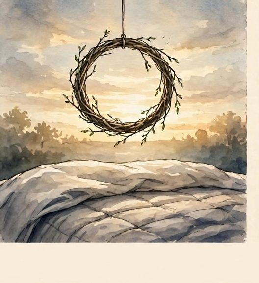
Шаг первый, сделанный: обруч повешен там, куда взгляд падает при пробуждении.
Первый шаг — подвешивание, и его инструкция позиционна: повесьте ловца там, где вы его увидите, — не там, где он выглядит лучше всего, не там, где гости будут им восхищаться, а на линии взгляда между спящим глазом и бодрствующим. У двери, через которую сны выходят, то есть над кроватью или рядом с ней, на высоте, по которой полуоткрытый глаз действительно путешествует. Ловец, которого нужно вспоминать, — декор; ловец, которого видят, каждую ночь и на рассвете, — снаряжение. Шаг завершён, когда обруч провисел неделю на пути глаза — достаточно долго, чтобы видение стало автоматическим, что есть состояние, на котором построены все позднейшие шаги.
Сделайте обруч или купите его, как позволила четвёртая комната; шаг безразличен, при условии, что подвешивание намеренно. Минута стояния сзади, выбора места гвоздя, как землемер выбирает метку, — эта минута и есть субстанция шага, потому что это первый акт всей практики, который хранитель совершает наяву и нарочно. Каждая позднейшая дисциплина в этой книге — развёртывание этой минуты: внимание, помещённое туда, где оно будет нужно, прежде, чем оно понадобилось.
Внесите подвешивание в книгу — которая, если второй шаг был предвосхищён, уже у кровати; если нет, дата на любой странице сойдёт, книга будет оформлена завтра. Обруч повешен; линия глаза подтверждена; дата. Запись первого шага обычно самая короткая в книге и та, от которой хранитель может датировать всю практику, годы спустя, как фундаментный камень с погодой всё ещё на нём.
98Шаг второй: положите книгу у кровати
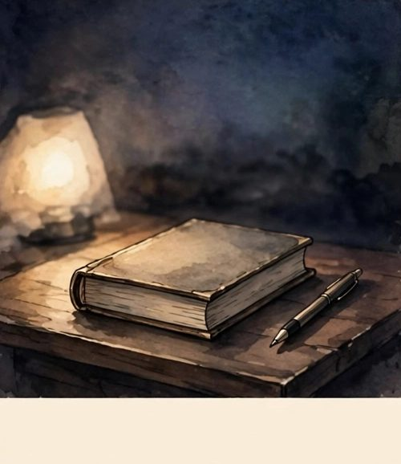
Шаг второй, сделанный: книга и ручка у кровати, в пределах одной вытянутой руки.
Второй шаг кладёт книгу у кровати, и это шаг о вытянутой руке. Книга живёт на тумбочке, ручка живёт в книге, и ничто не мигрирует — не на стол ради более аккуратной комнаты, не в сумку ради удобства путешествия без того, чтобы путешествию формально не выдали дорожную книгу. Вытянутая рука и есть шаг: хранитель, наполовину вышедший из сна в пять утра, должен быть способен завершить весь материальный акт — книга открыта, ручка в руке — прежде, чем бодрствующий ум созовёт своё первое комитетское заседание дня. Каждый предмет, за которым нужно идти, — дверь, через которую сон уходит.
Выбор книги следует единственной спецификации дома: переплетённая, датируемая, достаточно большая для планов десятилетия или достаточно простая, чтобы заменяться том за томом без горя. Хранители архива не показывают корреляции между красотой книги и долголетием практики, и лёгкую отрицательную тоже, великолепный том устрашает своего хранителя из грозовых записей. Выбирайте книгу, в которой можно писать плохо. Практика будет, по расписанию, которое описал восьмой зал.
Внесите шаг в саму книгу как её первую запись, с датой: книга положена, ручка положена, дотягиваемость проверена. При перечитывании это читается как наименее литературное предложение, которое хранитель когда-либо в неё напишет, и одно из самых весомых по последствиям. У страны теперь есть архивное бюро. У дорог есть, куда прибывать их новостям.
99Шаг третий: поймайте первое предложение
Третий шаг — ежедневный атом практики, изолированный, чтобы его можно было выучить одного: поймайте первое предложение. На одну неделю — заявленный срок шага — весь долг хранителя — одно предложение в утро, написанное до чайника, выбранное по правилу двери зала хранения: фрагмент в руке, конкретный, неотредактированный. Не лучшее предложение, не сводка сна: фрагмент. Лестница под водой. Лицо кондуктора, неверное. Кухня моей матери, но окно смотрело на море. Неделя произведёт, в худшем случае, семь предложений и, в лучшем, начало руки, которую требуют позднейшие шаги.
Дисциплина шага — его малость, защищаемая так же яростно, как сам обод. Хранитель, который на третье утро пишет три страницы, сделал шаг не лучше; он сделал другое упражнение и исчерпал внимание недели к среде, что записи определяют как стандартную прелюдию к брошенной книге. Одно предложение, удержанное одним предложением, на полную неделю, — хранитель строит натяжение первой нити сети, а нити рассчитаны ровно на эту нагрузку и не более.
В конце недели хранитель читает семь предложений вниз по странице, однажды, и совершает единственную церемонию шага: ничего. Никакого толкования, никакого ранжирования, никаких заключений о том, какого рода сновидящий он есть. Предложения стоят колонкой, как глубины первой недели в новой гавани, — ещё не карта, но доказательство, что воду можно измерить. Четвёртый шаг научит запись её полной форме. Всё учение третьего шага уже завершено: улов может быть сделан этим хранителем, за этой канцелярией, в этой жизни.
100Шаг четвёртый: пишите погоду, а не значение
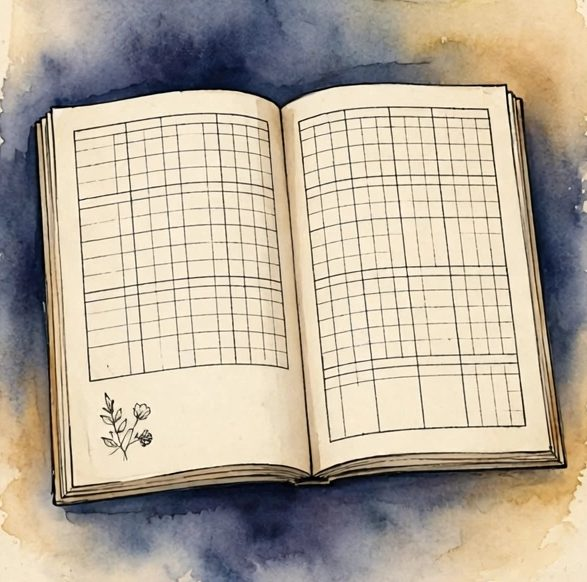
Шаг четвёртый, сделанный: запись в полной форме — погода первой, значения отсутствуют.
Четвёртый шаг даёт записи её полную форму, и форма — зал хранения, сжатый в привычку: дата в начале; предложение двери; сон в его порядке ходьбы, насколько он приходит; собственные слова сна дословно, где они выживают; план в одну линию на полях, если место предложило один; а в конце погода, названная в слово-два. Срок шага — месяц записей по форме — достаточно долгий, чтобы форма перестала ощущаться как форма, что есть точный миг, когда она ею становится: инструмент, о котором хранитель больше не думает, как форма знакомой лестницы.
Заголовок шага несёт его самое трудное правило, которое месяц существует, чтобы установить: пишите погоду, а не значение. Значение не запрещено — дом никогда не занимался запрещающим делом, — но оно откладывается, структурно, на поля и на перечитывание, чтобы сама запись оставалась свидетельством. Хранитель, изучающий форму, будет чувствовать откладывание как постоянный малый зуд, завтраковый ум предлагает свои изделия. Зуд — плата за обучение. Месяц записей, в котором каждое предложенное значение было вежливо показано на поля, — месяц, в который книга стала заслуживающей доверия, а достоверность, как учила комната позвоночника, — актив, на котором построено всё поместье.
В конце месяца хранитель совершает первое перечитывание — предвкушение второго улова, в наименьшем масштабе. Прочитайте месяц насквозь, карандаш вниз, кроме одной разрешённой отметки: звезда рядом с любым местом, лицом или поручением, которое появилось больше одного раза. Звёзды — повестка пятого шага, уже собранная. Работа четвёртого шага сделана, когда форма — привычка, а зуд — знакомая погода сама по себе.
101Шаг пятый: отметьте повторяющиеся места
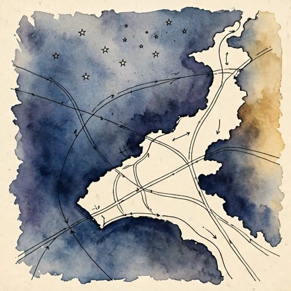
Шаг пятый, сделанный: повторяющиеся места отмечены звездой, названы и получили свою страницу.
Пятый шаг работает от звёзд четвёртого шага: отметьте повторяющиеся места. Хранитель берёт записи сезона, собирает каждое место, которое появилось больше одного раза, и даёт каждому его формальную запись в атласе, который описал пятый зал, — имя, употребляемое последовательно отныне; даты его появлений; его мебель, как записано; его изменения, как отмечено звёздами. Шаг канцелярский и тихо захватывающий, что есть любимое сочетание дома: хранитель рисует первую надёжную карту собственной страны ночи, по собственным измерениям, и у страны — таково повторяющееся открытие — есть форма. Это не туман. У неё есть столица, лестница, гавань, дорожная система.
Именование — дисциплина шага, а его предупреждающая табличка — табличка пятого зала: маршрут — первым, карту — второй, элегантность — последней. Имена должны быть собственными именами сна, где сон их поставляет, — правило дословности применимо к географии в полную силу, — и функциональными, где не поставляет: Экзаменационный зал, Гавань с зелёной дверью, Дом. Имя, которое хранитель действительно будет писать в пять утра, бьёт красивое, которое требует церемонии. Атлас — рабочий документ, а его имена — инструменты с ручками.
Шаг завершён, когда страница атласа стоит в конце книги (или в её начале — дом видел оба и предпочитает то, которое хранитель открывает первым), с внесёнными по меньшей мере столицей и главными дорогами и обязательством, записанным рядом рукой хранителя: эта карта будет пересмотрена на повороте сезона, по записям, и ни по чему другому. Страна теперь официально обследована. Шестой шаг отправляет в неё своё первое намеренное посольство.
102Шаг шестой: отправьте один вопрос в постель
Шестой шаг отправляет один вопрос в постель — инкубацию седьмого зала, установленную теперь как нумерованный шаг с завершённой формой. Хранитель составляет вопрос в книге, письменно, перед сном: конкретный, единичный, несущий место, или лицо, или дверь из атласа, сформулированный как просьба в ночную контору, а не как требование к ней. Книга закрывается. Хранитель спит без надзора. Утром доставка — что бы это ни было, включая сон, который, по-видимому, отвечает на совершенно другой вопрос, включая ничто, — вносится дословно и в полной форме прежде, чем слову «ответ» будет позволено где-либо рядом с ней находиться.
Срок шага — малая серия: три вопроса на трёх отдельных неделях, никакого удвоения. Серия — наименьшая единица, из которой хранитель может выучить собственные нормы доставки и местные обычаи ночной конторы: какого рода вопросы привлекают сцены, а какого — молчание, какие места ответы предпочитают. Хранители последовательно неправильно помнят эти нормы в направлении своих надежд; книга, с которой консультируются в конце шага, заменяет надежду первой честной статистикой практики, составленной из единственной выборки, которая когда-либо будет иметь значение.
Неудача на протяжении серии — приемлемый и внесённый исход, как установили комнаты неудач. Шаг сдаётся не получением ответов. Он сдаётся правильной отправкой — письменный, конкретный, единичный вопрос, три раза, с доставками, записанными неотредактированными, — потому что это та половина переписки, которую хранитель контролирует, и этот дом учит только половинам, которые его студенты контролируют. Остальное — дело ночи, а ночь, показывает запись, уважает хорошо ведённый исходящий лоток больше, чем её хранители ожидают.
103Шаг седьмой: вернитесь внутрь — легко
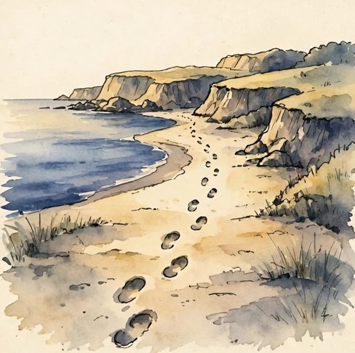
Шаг седьмой, сделанный: путь обратно пройден в репетиционном темпе — легко.
Седьмой шаг возвращается внутрь, легко, — репетиция и возвращение седьмого зала, взятые как одно нумерованное упражнение с его страховочными перилами на месте. Днём, на протяжении недели, хранитель репетирует выбранное место: атлас открыт, маршрут пройден в воображении в темпе сна, мебель, к которой относятся внимательно в порядке ходьбы, по десять неторопливых минут за раз. Ночью, в последние вечера недели, дверь оставляется приоткрытой в книге — незаконченное предложение последнего записанного посещения места оставлено незаконченным, — и книга закрыта без заключения. Шаг просит не больше, чем этой пары: дорога, освежённая днём, приглашение, оставленное ночью.
Лёгкость в заголовке — несущее правило шага, и она излагается хранителю столькими словами, прежде чем начнётся срок: возвращение может не случиться; место может прибыть изменённым; сон может прислать замещающую сцену с тем же светом в ней. Всё это вносится как исходы, в их истинных размерах, той же рукой. Хранитель, который ещё не может внести неудачу, не умаляя её, отправляется обратно — любезно и по постоянному приказу этой книги — к грозовой дисциплине восьмого зала, которая есть место, где этой способности действительно учат. Возвращения предпринимаются только хранителями, чьи книги могут себе их позволить.
Успех, когда он приходит, несомненен и всё же вносится трезво: место, состояние поручения, что было продолжено и что было преображено, час пробуждения. Шаг закрывается тем, что папка попытки перекрёстно ссылается на запись первоначального сна, закрывая документацию моста с обоих концов. Каким бы ни был исход, хранитель теперь владеет одной полностью задокументированной попыткой возвращения — продвинутый сертификат ремесла, выданный ночью или удержанный ею, сертификат будучи, в любом случае, документацией.
104Шаг восьмой: пропустите один сон нарочно
Шаг восьмой, сделанный: один великий сон отпущен, намеренно, сквозь ячейки.
Восьмой шаг — акт веры практики в собственный замысел: пропустите один сон нарочно. Хранитель выбирает — из уловов сезона, хладнокровно, за канцелярией — один значительный сон, один, который сеть могла бы с честью хранить, и отказывается его хранить. Никакой записи за пределами даты и единственной строки: отпущен. Сон уходит обратно сквозь ячейки с остальным движением ночи, незаписанный, непродолженный, неоплаканный, по собственному решению хранителя. Шаг — доктрина дыр второго зала, испрактикованная однажды как дисциплина, вместо того чтобы переживаться каждую ночь как состояние.
Дом сознаёт, что это шаг, с которым хранители спорят, и он спорит в ответ всей книгой. Практика, которая не может ничего отпустить, в течение нескольких лет станет накоплением — книга кладом, хранитель заведующим складом чудес, утренняя канцелярия таможенным постом, где ничего не пропускают маханием. Замысел сети держал учение с самого начала: большая часть ночи должна пройти, и мастерство хранителя доказывается не размером улова, а его выбором. Восьмой шаг делает выбор явным, однажды, по полной цене, чтобы все меньшие выборы следующих лет делались рукой, которая была натренирована на настоящем весе.
Есть также данное эксперимента, которое хранителям предлагается наблюдать, не будучи сказанными, что они найдут: судьба отпущенного сна. Некоторые возвращаются незваными, ночами позже, как будто ячейка была дверью, а отпускание — адресом пересылки. Некоторые просто ушли, а утро после отпускания записано, в записи за записью, как странно лёгкое. Дом не публикует ни одного результата как доктрину. Форма доклада шага имеет ящик для наблюдения и ни одного для заключения, что есть способ дома оставить глубочайший вопрос сети — для чего дыры, — ровно таким открытым, каким хранитель его находит.
105Шаг девятый: перечитайте месяц ночей
Девятый шаг — второй улов, оформленный: перечитайте месяц ночей. Хранитель берёт старейший полный месяц в книге — не самый недавний; расстояние — инструмент — и читает его насквозь за один присест, карандаш в руке, с вопросами обзора, закреплёнными заранее, из литургии одиннадцатого шага, принесённой вперёд: что повторялось, что было доставлено, что изменилось, что удивило. Записи месяца, которые хранитель помнит пишущим как несвязанные утра, собираются под чтением в то, чем они всегда были: сезон погоды одного ума, с фронтами и затишьями и географией, держащей свою форму через всё это.
Отметки, сделанные в этом перечитывании, — первая настоящая учёность практики: повторения отмечены звездой, доставки соединены проведёнными линиями на полях между записью марта и записью июня, атлас исправлен вторыми чернилами. Хранители предупреждены — дом наблюдал этот миг прибывающим слишком часто, чтобы оставить его без охраны, — против ретроспективной подделки в её тонкой форме: не изобретать записи, а изобретать связи, проводить линии между снами, которые рифмуются только потому, что читатель желает, чтобы книга была умнее, чем она есть. Карандаш проводит линию только там, где материал сам настаивает: то же место, те же слова, то же поручение, дословно. Всё остальное оставляется как погода, которая напоминала погоду.
Шаг закрывается половиной страницы, написанной свежо: месяц, обозренный. Три находки, не больше — рацион дома намеренный, три будучи числом, которое хранитель действительно может унести в практику следующего сезона. Находки идут в конец месяца, датированные датой обзора, чернилами дня. Книга теперь содержит свою первую критику так же, как свою первую литературу, и хранитель стал, в полном смысле, в котором дом употребляет это слово, её читателем.
Канцелярия „Ловец снов"
Одна канцелярия получает всю корреспонденцию этого дома — вопросы, поправки, ночные доклады с ваших собственных дорог. Она читается в порядке поступления. Канцелярия не даёт медицинских и духовных советов; она содержит дом.
106Шаг десятый: выдержите одну грозу на бумаге
Шаг десятый, сделанный: гроза на бумаге — лампа, протокол, запись, закрытая книга.
Десятый шаг выдерживает одну грозу на бумаге: полная процедура восьмого зала, исполненная однажды от конца до конца и внесённая как шаг, чтобы хранитель владел ею как учением прежде, чем она понадобится ему как спасательный трос. Когда придёт следующая настоящая грозовая ночь — погоня при полном давлении, падение, которое забирает дыхание, — хранитель исполняет: лампа, пол, имя и адрес, вода, книга; запись в истинном размере грозы, внутри окна; книга, закрытая на всём этом. Шаг сдаётся не отсутствием грозы после, а полнотой процедуры во время неё. Это единственный шаг из двенадцати, в котором хранитель надеется не быть экзаменованным скоро, и единственный, чьё экзаменование, когда оно приходит, не по выбору хранителя.
Поскольку шаг должен быть исполнимым, дом разрешает форму учения: вспомненная гроза, из времени до книги или извне её страниц, записанная в полной процедуре за канцелярией при дневном свете — лампа необязательна, запись по форме, порядок протокола почтён. Хранители, которые сделали учение, докладывают то, что учение всегда производит: живое исполнение, месяцами позже, идёт по рельсам, проложенным в спокойствии. Дом, который не доверяет всем терапиям, которые не может свести к нумерованному шагу, доволен поставить этот в последовательность, где ему место: после возвращений, перед атласом, в знании, что страна хранителя включает погоду, которую он не выбирал и не может назначить.
Запись шага — грозы или учения — отмечена номером шага на полях, условностью дома для всех двенадцати, чтобы собственный указатель книги мог их найти. Годы спустя хранитель при перечитывании найдёт грозовые записи с их малыми полевыми цифрами, процедуру, видимую в записи, как грозовые сигналы гавани в старом журнале: подняты, соблюдены и — всё свидетельство журнала — пережиты, одна датированная строка за раз.
107Шаг одиннадцатый: нарисуйте небесную дорогу, которую вы нашли
Шаг одиннадцатый, сделанный: небесная дорога, как найдено, — один маршрут, обследованный целиком.
Одиннадцатый шаг рисует небесную дорогу, которую хранитель нашёл: один маршрут, целиком. Не весь атлас — атлас есть документ жизни — а единственную пройденную линию, нарисованную по свидетельствам книги от конца до конца: ворота, первое место, лестница или её эквивалент, мост, если у маршрута он есть, столица в его сердце, с датами измерений вдоль него и погодными отметками его главных переходов. Рисование делается на сезонном обзоре, в спокойствии обзора, и это первый артефакт практики, который сделан, чтобы быть показанным: страница, по которой гостя можно провести, страна ночи хранителя, сделанная читаемой для второго человека впервые.
Стандарт — стандарт гаванской карты: что обследовано, рисуется твёрдо, что выведено, рисуется пунктиром, что неизвестно, оставляется как честная пустая вода с датами измерений на их местах. Хранители обнаруживают в рисовании состояние собственного знания с ясностью, которую никакое количество записей не производит, — маршрут, в котором они были уверены, растворяется у третьей площадки в пунктиры; маршрут, который они думали фрагментарным, собирается из трёх лет предложений дверей в самую твёрдую линию на странице. Карта не льстит. Для того карты и существуют.
Нарисованная дорога — также учебный документ, который использует двенадцатый шаг, и хранителя просят рисовать её с этим читателем в уме: имена читаемы, порядок проходим, один опасный переход — у каждого маршрута он есть, грозовой пролив или дверь-в-год — отмечен условным знаком карты. Шаг завершён, когда страницу можно передать. То, что передаётся, в конце концов, не информация. Это доказательство хранителя, нарисованное из его собственных датированных свидетельств, что у ночи есть география и что он был где-то в ней, многократно, нарочно.
108Шаг двенадцатый: научите маршруту кого-нибудь ещё
Последний шаг поворачивает практику наружу, как последние шаги сестринских домов: научите маршруту кого-нибудь ещё. Не доктрине — маршруту. Хранитель берёт карту одиннадцатого шага и проводит по ней одного другого человека: вот ворота, вот лестница, которая служила три десятилетия, вот где мост высаживается, вот переход, который я не предпринимаю в грозовой сезон. Обучение — час за столом, с книгой, открытой на измерениях, и его действие на учителя — настоящее экзаменование шага: маршрут, который нельзя пройти вслух, по порядку, под вопросы новичка, — маршрут, который хранитель ещё не знает на самом деле, что бы атлас ни утверждал. Смущение новичка — последнее измерение, которое карта когда-либо получит, и оно находит пунктирные места, которые хранитель зачернил твёрдо из нежности.
Выбирайте студента так, как практика выбирает всё: по готовности, а не по нужде в убеждении. Человек, который дважды упомянул собственную повторяющуюся лестницу, — весь приёмный список факультета. Дом предупреждает против евангелической ошибки с обычной плоскостью: ремесло не экспортируется аргументом, а маршрут, преподанный нехотящему ходоку, становится в пересказе курьёзом о хранителе, а не дорогой для студента. Один студент, хорошо обученный, — полное требование шага. Вся история поместья, в каждом доме, который оно держит, — цепь единичных студентов.
Когда обучение сделано, двенадцать шагов завершены, что значит: хранитель готов их держать — последовательность будучи лестницей, а не подиумом: обруч, перевешенный в новом доме, следующий том книги, открытый, шаги, пройденные снова на следующем повороте практики, каждый раз на глубине, которую хранитель теперь заслужил. Реки не оканчивают учёбу, говорит дом у реки; дороги тоже нет. Их держат, и держат, и — по свидетельству самых долгих книг архива — они держат своего хранителя в ответ.
109Путеводитель для новичка
Новичок у ворот, карта в руке, фонарь предложен.
Для гостя, который прибыл в зал долгого взгляда, не пройдя остальные, — каждый хранитель знает, что это большинство гостей, — вот дом в одной комнате. Сны хранятся здесь так, как хранятся карты: пойманные в сеть внимания, записанные в датированную книгу и пройденные обратно по дорогам, которые повторяются. Ловец — инструмент замечания, заимствованный с уважением у мастеров оджибве, которые сплели его первыми. Бегущая по облакам — изобретённая домом хранительница маршрутов между ночами. Ничего не обещается, ничего не продаётся, и груз ночи не обязан быть ничем, кроме себя: истории, погода и иногда доставленное сообщение, заведённое дословно.
Если этот абзац — всё, что вы возьмёте, возьмите также три инструмента, потому что этот дом — практика, а не плакат: обруч, повешенный там, где бодрствующий глаз его встретит; книга у кровати с ручкой в ней; и дата, написанная в начале страницы, завтра утром, над всем, что ночь оставила, — одно предложение будучи полным исполнением. С ними двенадцать шагов девятого зала проходимы любым, в любом доме, начиная с сегодняшней ночи, и они кончаются — намеренно — маршрутом, преподанным кому-нибудь ещё.
А если даже инструменты — слишком много на сегодня, дом оставляет свою самую малую монету у двери: сохраните один сон, однажды, на бумаге, до того, как закипит чайник. Каждый зал в этом здании в конце концов есть развёртывание этого единственного акта внимания, и гость, который сделал его однажды, уже вошёл в единственное членство, которое дом поддерживает, — компанию хранителей, чей весь список написан в их собственных книгах, их собственными руками, и полон на одном имени.
110Вопросы, которые люди задают канцелярии
Канцелярия в свой час: вопросы прибывают в обычном порядке, чайник включён.
Канцелярия держит список вопросов, которые ей действительно задают, и отвечает на три здесь в собственной манере. Удержит ли ловец плохие сны снаружи? — Не удержит, и дом сказал это в пятой комнате прежде, чем сказал что-либо ещё: сеть держит то, что утро пишет, а грозы пишутся, как всё остальное, — на деле, грозовые записи суть одни из самых ценных страниц архива. То, что ловец удерживает снаружи, если фразу нужно употребить, — забвение, и он удерживает его напоминанием, а не запретом. Это религия? — Это архивное бюро с фигурой на носу. Фигура подписана изобретением в её собственном зале, доктрина — система хранения, а единственное таинство на территории — датированная страница.
Сработает ли это для меня? — Канцелярия отклоняет вопрос в этой форме и предлагает честную замену: практика мала, проверяема и дешева. Повесьте обруч, ведите книгу один месяц и прочитайте месяц. Если месяц вас удивит, — а архив предполагает, без обещаний, что месяцы обычно удивляют, — продолжайте. Если нет, дом стоил вам тетради и вернул её полной ваших собственных ночей, что канцелярия отказывается считать потерей. Модели, которая просит, чтобы её испытали в пешем темпе, можно доверять ровно настолько, насколько она проходит. Не дальше, и канцелярия не хотела бы иначе.
Остальные вопросы, находит канцелярия, обычно не вопросы. Это собственный первый сон гостя об этом месте, ищущий дверь, в которую войти. Любой из них сойдёт — обруч, книга, лестница, гроза. Это принцип, которому сестринский дом научил этот, и у него есть применения далеко за пределами снов.
111Вопросы скептиков, отвечено аккуратно
Незнакомцы задают более острые вопросы, и канцелярия отвечает на них так аккуратно, как умеет. Вы говорите, что ум держит свои места и заканчивает свои предложения через годы, — не есть ли это просто память, одетая в гаванское пальто? — Это память, и пальто признано, и притязание дома только в том, что пальто помогает хранителю носить память сорок лет: практика — одевание настоящей способности в фигуру, которая делает её поддерживаемой. Вы говорите о сообщениях, доставленных между снами, — не есть ли это голод на закономерности, ум, изобретающий курьеров для собственных совпадений? — Может быть, в любую данную ночь; вот почему книга дословна и датирована, чтобы доставки можно было проверить аудитом по записи, а не по энтузиазму хранителя. Дом построил свои заборы ровно там, где скептик стоит.
И самый острый вопрос, заданный с улыбкой: верит ли хранитель этого дома в Бегущую по облакам? — Канцелярия отсылает гостя в сорок седьмую комнату, где рама показана с гвоздями наружу, и добавляет только рабочий ответ дома: хранитель верит в книгу. Бегущая — то, как книга выглядит, когда ей дают пальто, обход и фонарь, — способ изобразить сорок лет непрерывности, чтобы непрерывности можно было сопутствовать. Вера — не топливо инструмента. Явка — да.
Канцелярия благодарит скептиков в записи, по имени, где имена были даны. Практика, которая не может пережить своих вопрошающих, не заслуживает этого, а заборы этой — никаких знамений, никаких диагнозов, никаких обещаний, фигура обрамлена — все были построены на скептическом конце стола, из их вопросов, хранителями, которые задавали их первыми.
112Что гость может унести домой
Три инструмента у двери, свободные для любой руки: обруч, книга, датированная страница.
Что гость может унести домой из этого дома? Не продукт — у дома его нет — и не обещание, которое было отринуто в шестой комнате книги дома у реки и отрицается здесь с той же весёлостью. Три вещи стоят у двери, свободные для любой руки. Первая — словарь: ворота, дорога, столица, погода, доставка, отпускание — шесть слов, которые, применённые к ночам спящего, обращают туман в страну. Туман нельзя держать; страны можно наносить на карту, проходить и возвращать, и большая часть работы дома сделана в миг, когда его гости начинают говорить «лестничная дорога» вместо «опять тот странный сон».
Вторая — стандарт свидетельства о собственной внутренней жизни, предлагаемый вместо двух, которые поставляет мир, — доверчивости и отмахивания, которые дом считает той же леностью в противоположных пальто. Датированная, дословная запись — третий путь: ночь, снятая как показание, которой верят ровно настолько, насколько простирается запись, и не дальше. Гость, который уходит, применяя этот стандарт к своим снам, унёс самый ценный экспорт дома, а он ничего не весит в багаже.
Третья — минимальный набор практики, уже названный в комнате новичка: обруч, книга, дата. Дома известны по тому, что их гости выносят за дверь. Этот надеется быть известным как дом, который отправлял людей домой повесить круг ивы и открыть тетрадь, — немодное честолюбие, внесённое в реестр без извинений, рядом с домашним заданием сестринских домов и тремя страницами дома у реки.
113Дом, устроенный вокруг своих ночей
Домохозяйство, устроенное вокруг своих ночей: обруч, полка, лампа.
Как выглядит законченная практика, собранная в действительной жизни? Скромно, по большей части, — таково удивление, которое докладывают гости. Дом, устроенный вокруг своих ночей, не сверкает. В его спальне обруч на линии взгляда и книга в пределах вытянутой руки, и ни один предмет не объясняет себя гостям. В его утрах защищённая четверть часа, которую домохозяйство перестало находить эксцентричной, как домохозяйства приспосабливаются к гаммам музыканта. На его полке ряд простых томов, по порядку, которые никто не вытирает от пыли с большей церемонией, чем другие книги, и никто не выбрасывает тоже, никогда.
Его разговор о снах — настоящий признак. В таком доме тема обыденна за завтраком: погода прошлой ночи доложена в предложении, повторяющееся место приветствовано, как сосед, когда оно повторяется, детская гроза принята с лампой и без доктрины. Практика стала тем, чем дом всегда намеревал, — не хобби с извиняющейся энергией хобби, а коммунальной услугой, как ведение счетов или починка сетей: негламурной, несущей и тихо непрерывной через десятилетия жизни.
Дом не утверждает, что такие домохозяйства спят лучше своих соседей, потому что он и этого не измеряет, — и потому что утверждение, рассмотренное, даже не суть. Он утверждает только, что их ночи известны, а известная ночь на протяжении жизни — иное владение, чем неизвестная: различие, как хранитель дома у реки говорит о деньгах, между жить рядом с водой и просто мокнуть. Предложение переносится без изменения, что канцелярия принимает как свидетельство, что два дома в фундаменте — один дом.
114Хранение снов через десять лет
Спроецируйте практику вперёд на десять лет, и её предсказания немодно прямы. Хранители, которые вели записи, будут читать своё десятилетие так, как капитаны портов читают книгу приливов, — с несправедливым преимуществом быть собственной записывающей станцией, — и закономерности, которые перечитывание им покажет, будут выглядеть для их беззаписных друзей как интуиция или второе зрение. Это не будет ни тем, ни другим. Это будет книга, на десятый год, делающая то, что книги делают: делающая прошлое читаемым ровно в миг, когда будущее начинает с ним рифмоваться, что есть единственная форма, которую пророчество когда-либо честно принимало.
Сама практика изменится, как практики делают. Инструменты будут электронными для большинства хранителей и бумажными для упрямых, и дом — который никогда не уточнял носитель, только серию, — переживёт миграцию при условии, что даты её переживут. Фигура изменится быстрее всех: каждое поколение переодевает свою Бегущую, переименовывает её, переставляет её обход под новую географию сна, которая к тому времени будет включать погоды, которые эта книга не может изобразить. Дом лицензирует переодевание заранее, на своём единственном условии, начертанном в сорок седьмой комнате: рама остаётся видимой. Изобретённая хранительница, честно обрамлённая, — снаряжение. Изобретённая хранительница, чья рама скрыта, становится притязанием, а притязания проверяются более жестокими канцеляриями, чем эта.
Что не изменится, канцелярия ставит на это дом: ночь всё ещё будет вести своё движение, утро всё ещё будет предлагать свои пятнадцать минут, и внимание всё ещё будет нитью — более редкое, лучше охотимое и стоящее больше за ярд, чем сегодня. Через десять лет обруч может выглядеть старомодным. Предложение до чайника будет выглядеть как то, что оно есть: постоянная часть.
115Способы провала, перечисленные спокойно
Тетрадь вещей, которые пошли не так, ведомая без злобы.
Способы провала, перечисленные спокойно, как принято в этом доме с неудобными описями. Практика терпит неудачу как гадание: когда её уловы читаются как знамения, а её дороги — как маршруты судьбы, восемнадцатая комната была непослушана, и дом отрекается от чтения полностью. Она терпит неудачу как клиника: когда книга используется для диагноза или ловец вешается как лечение, девяносто четвёртая комната была непослушана, и неудача — не практики, а её выдачи себя за власть, от которой она явно отказывается. Она терпит неудачу как клад: когда хранитель не может отпустить сон — восьмой шаг, отринутый как образ жизни, — и утренняя канцелярия становится таможенным постом, который ничего не пропускает маханием.
Она терпит неудачу как театр: когда фигура исполняется для аудитории, рама скрыта, сны хранителя продаются в розницу как чудеса, — в день, когда комнаты дома используются, чтобы произвести впечатление на обеденный стол, комнаты осуждены, кто бы ни держал ключи. И она терпит неудачу как замена: самого сна, который никакая практика в этой книге не улучшает тем, что практикуется за его счёт, и прямой профессиональной помощи, которую грозовой зал называет, где запись говорит, что помощь нужна. Дом сказал это в собственных залах, в собственном порядке, и повторяет здесь, потому что практика, которая не может назвать то, чего она не может делать, в конце концов будет обвинена в погоде, которой никогда не притязала командовать.
Удерживаемая внутри этих заборов, практика делает свою скромную работу. Заборы — не мелкий шрифт — они несущие стены, и эта комната вешает их в зале долгого взгляда, где свет лучше всего, в двух дверях от самого мелкого шрифта, который гость может теперь прочитать со всей честностью здания, собранной за ним.
116Если эта страница — всё, что останется
Одна страница, оставленная у ворот, где утро тоже может её прочитать.
Если эта страница — всё, что останется, — если дом вокруг неё однажды будет разобран, ссылки сгниют, масло фонаря уйдёт, — хранитель просит, чтобы уцелевшая комната была, если случай позволит, этой, потому что она помещается над кроватью. Повесьте обруч там, где ваш бодрствующий глаз его встретит. Держите книгу в пределах вытянутой руки, с ручкой в ней. Утром, до чайника, напишите дату и одно предложение ночи — фрагмент в руке, собственными словами сна. Позвольте большей части ночи пройти без сожаления. Когда место возвращается, назовите его. Когда приходит гроза, запишите её в истинном размере и закройте книгу. Раз в сезон перечитывайте. Время от времени учите дороге кого-нибудь. Вот и всё это.
Ничто из этого не требует этого дома, его фигуры или его ста двадцати комнат. Это требует обруча, книги и честной четверти часа в сезон, — и всё это, признаёт хранитель с прямым лицом, было известно бабушкам прежде, чем было записано здесь, включая бабушку, которую называет сама традиция. Единственное изобретение дома — устройство, и единственное притязание устройства в том, что практика, записанная по порядку, есть практика, которую можно передать дальше, что, в поместье архивных бюро, есть самая близкая к символу веры вещь, которую содержит устав.
Остальные комнаты, если они уцелеют, — комментарий. Эта — текст. Хранитель ничего не подчеркнул, в соответствии с правилами дома, и повесил страницу, подобающе, там, где утро найдёт её первой.
117Записка от канцелярии Бегущей по облакам
Личная записка, внесённая в реестр в конце зала долгого взгляда, от канцелярии, которая получала переписку этого дома с его первой комнаты. Канцелярия читала на протяжении сезонов вопросы, суммированные в комнатах сто десятой и сто одиннадцатой, и великое множество тех, что вовсе не были вопросами, а ночными докладами из стран других людей: лестницы, хранимые пятьдесят лет, грозы, пережитые, одна знаменитая серия, возобновлённая после четверти века, к совершенно непрофессиональной радости её хранителя. Канцелярия отвечает на то, на что может. То, на что она не может ответить, она хранит, и хранение научило её доктрине дома лучше, чем научило письмо.
Доктрина, со стула канцелярии, — по большей части компания. Ночь — единственное путешествие, которое каждый человек совершает в одиночку, каждую ночь, без исключения и апелляции, — и весь аппарат этого дома: обруч, сеть, дороги, изобретённая хранительница с её фонарём — существует, чтобы сделать это путешествие слегка менее несвидетельствованным: дать ему запись, географию, коллегу на дороге и канцелярию на границе, где его доклады получает кто-то, кто прочитал десять тысяч таких докладов и находит этот, тоже, стоящим заведения. Одиночество здесь не излечивается. Ему сопутствуют, что, как канцелярия пришла верить, и есть честная версия того же обещания.
Пишите в канцелярию поэтому, если прогулка подняла нечто, что комнаты не уладили. Она читает в порядке получения. Она отвечает на то, на что может. Фонарь, вопреки слухам, зажжён.
118Мелкий шрифт, честно
Мелкий шрифт, напечатанный крупно: честность хорошо выглядит в этом размере.
Мелкий шрифт этого дома, напечатанный в полном размере, в соответствии с его правилами. «Ловец снов: бегущий по облакам» — концептуальная страница Hi-Tech Limited Holding: спекулятивный проект, исследование устройства и рабочий черновик. Она представляет картину — ночь как страну с дорогами, сеть внимания, повешенную над кроватью, хранительницу, которая ходит маршруты между снами, — и набор рефлексивных практик, построенных на этой картине: ведение книги снов, запись снов дословно и по дате, намеренное возвращение к ним и выдерживание тяжёлых на бумаге. Картина — метафора. Бегущая по облакам — изобретённая фигура, обрамлённая как таковая в её собственном зале. Эта страница — для развлечения и размышления. Это не медицинская служба, не лечение сна и не духовная служба. Ничто здесь не диагностирует, не лечит и не обещает улучшить какое-либо состояние, и ничто здесь не следует читать как замену профессионального совета о сне или здоровье, который канцелярия поощряет вас искать там, где ночи имеют значение, — девяносто четвёртая комната говорит это прямыми словами.
Сам ловец снов — заимствованный образ, и заимствование признано в третьей комнате: плетёный обруч происходит от народа оджибве и несся индейскими традициями задолго до того, как этот дом заимствовал его форму как метафору внимания. Ничто на этой странице не представляет эти традиции, не продаёт их и не говорит от их имени. Никакой статистике в этих комнатах не следует доверять как измерению мира; страница намеренно предложила почти никакой, а её числа — десять залов, двенадцать шагов, сто двадцать комнат — архитектура, а не данные. Формы на этой странице передают сообщения в канцелярию Холдинга; они не открывают счетов, не заказывают услуги и не создают никакого обязательства ни с одной стороны.
Если что-либо в этих комнатах конфликтует с законом, книгой записей или советом профессионала, которому вы доверяете, закон, книга и профессионал правы, а комнаты неправы, и канцелярия исправит комнаты, когда ей скажут. Вот и весь мелкий шрифт. Он значит каждое слово, и он, по расчёту дома, самая важная комната в здании после первой.
119Последний свет над небесными дорогами
Дороги при последнем свете, фонари загораются один за другим под небом.
Прогулка кончается, как прогулки дома имеют тенденцию, на границе вечером. Обруч висит на линии взгляда, ни святыня, ни сувенир. Книга на тумбочке с ручкой в ней, на своём первом томе или на сороковом. Дороги, которые гость обследовал, в этот час делают то, что делают в каждый час: существуют ровно настолько, насколько они хранимы, что сегодня ночью — потому что кто-то провёл день, читая их атлас, — немного больше, чем вчера. Ничто в сцене не закончено. Ночи не заканчиваются. Но всё в ней есть, или может быть, записано, что есть единственное завершение, которое этот дом когда-либо предлагал, и он никогда за него не взимал платы.
Если гость уходит с изменённым ощущением, канцелярия надеется, что это оно: что ночь, которая прибыла в первую комнату как отсутствие между днями — пустота в дневнике, страна без почты, — уходит как территория с погодой, дорогами, столицей и хранительницей на обходе, всё это их, всё это каждую ночь, всё это доступно познанию по цене предложения до чайника. Это ощущение, удержанное, стоит больше большинства толкований, потому что оно переживает все толкования.
Свет уходит тем особенным образом, каким он уходит над высокой страной. Канцелярия всё ещё открыта — это, настаивает хранитель, вся суть канцелярии, — а граница последнего зала та же, что граница первого: обруч, книга, утро. Дорога из зала — дорога в сегодняшнюю ночь.
120Бегущая сегодня ночью снова на улице
Последняя комната коротка, потому что всё в ней уже было сказано на длине, которую оно заслуживало. Бегущая сегодня ночью снова на улице. Она была на улице прежде, чем эта страница была написана, — ходя обход между улицей детства и нынешней гаванью, неся предложение, которое март оставил незаконченным, к сну, который закончит его в каком-нибудь июне года, который никто не обвёл, — и она будет на улице после неё, на обходах, которые хранитель по большей части проспит, что есть природа обходов и причина, по которой для них стоит вести вторую книгу.
Что изменилось, если прогулка сработала, — только хранение: ночи одного спящего, засвидетельствованные, — обруч на линии взгляда, книга в пределах досягаемости, предложения, пойманные до чайника, грозы, заведённые в их истинном размере, дороги, названные, и, на повороте сезонов, вся запись, перечитанная, а маршрут преподанный дальше. Это весь урожай ста двадцати комнат, и дом находит его, при осмотре, достаточным.
Канцелярия оставляет последнее слово там, где первый зал оставил первое: с гостем, на границе, в звуке чайника, ещё не закипевшего. Спите хорошо. Держите дату честной. Дороги сделают остальное, как они всегда собирались.
Канцелярия „Ловец снов"
Одна канцелярия получает всю корреспонденцию этого дома — вопросы, поправки, ночные доклады с ваших собственных дорог. Она читается в порядке поступления. Канцелярия не даёт медицинских и духовных советов; она содержит дом.